Hayoung
Tue, Mar 12, 2024
02:10 flover님 안녕하세요☺️ DM은 처음이죠? 저도 처음이라 설레요 같이 차근차근 알아봐요🍀☘️
02:21 🥹🥹
02:22 당했다
02:22 ㅋㅋㅋㅋㅋㅋ
02:22 복싱 등록하자~~
02:22 ㅋㅋㅋㅋㅋ
02:22 마시 바
02:23 🥹
02:23 ㅋㅋㅋㅋㅋㅋㅋㅋㅋ
Wed, Mar 13, 2024
01:11 flover시
01:19 플로버어
01:19 뭐하구 있어??
01:21 나는 산책중이다아
01:26 지금 듣는 노래 ??
01:26 마음이 그래 - 권진아
01:27 ㅋㅋㅋㅋㅋㅋ 지원이랑 안 살아서 마음이 그러냐구?ㅋㅋㅌ
01:27 아
01:27 설마요
01:27 그냥 지금 딱 나온 노래가 이거였어 ㅋㅋㅋㅋㅋ
01:29 나 목적지 없이 아무 버스나 타보고싶다
01:30 박지원 저나해봐야지
01:31 안 받네
01:31 ㅋㅋㅋㅋㅋㅋ
01:31 야.. 자냐?
01:31 그냥 전화해봤어
01:32 이유는 없고
01:32 그래 알겠다 쉬어라
01:32 ㅋㅋㅋㅋㅋㅋㅌ
01:33 혼자 볼링치러 가보까
01:40 사실 헬스장 가려구 했는데 닫아서 산책중이거든 ㅋㅋㅋ
01:44 나 헬스장 가면 30분 정도만 해!!
01:44 짧고 굵게
01:57 산책 끝!!
15:11 flover시
15:12 오늘 날씨 왜 이렇게 좋지??
15:18
15:18 선물
15:19 지금이야
15:28
15:31 오늘 좋은 하루 보내구 맛있는 거 꼭 잘 챙겨 먹어 flover☘️🍀
19:55 flover시
Thu, Mar 14, 2024
01:11 flover시
01:12
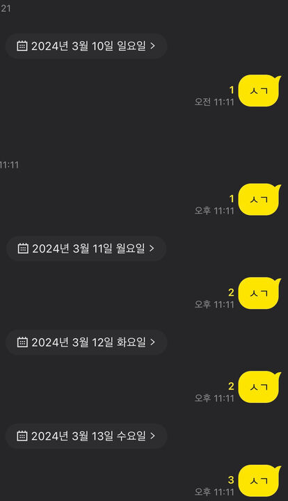
01:14 10년 넘은 시간공유 친구들
03:04 Media missing weverse__20241201152222.mp4
03:06 🍭🍭🍬
03:07 오다주워따
03:08 Media missing weverse__20241201152225.mp4
03:10 Media missing weverse__20241201152226.mp4
03:10 Media missing weverse__20241201152227.mp4
03:11 flover시
03:12 와.. 나 시간공유 1분 전에 써놓고 기다리다 졸았어
03:12 깼는데 112면 소름 돋았을 거야
03:16 Media missing weverse__20241201152228.mp4
03:18 Media missing weverse__20241201152229.mp4
03:18 🐈⬛
03:18 뇽
03:24 Media missing weverse__20241201152231.mp4
03:24 밤편지 짧게💌
03:29 또 혹시 듣고 싶은 노래 있어??
03:42 Media missing weverse__20241201152232.mp4
03:42 우연히 봄🌸
03:47 나는 이제 진짜 자야지이
03:47 flover 이제 잘건가??
03:51
03:51 이거 어때? 달 하트
03:52 ㅋㅋㅋㅋ
03:53
03:53 자 이제 진짜 잔다아
03:54 잘 자🌙 내 flover
15:11 flover시
17:34 냥
Fri, Mar 15, 2024
01:11 flover시
01:19

01:19 오랜만에 그림 그렸어 ㅎㅎ
01:20 송스타그림 올려야지🥰
01:26 올려따아
01:26 꽃 그리기 어렵다아
01:35
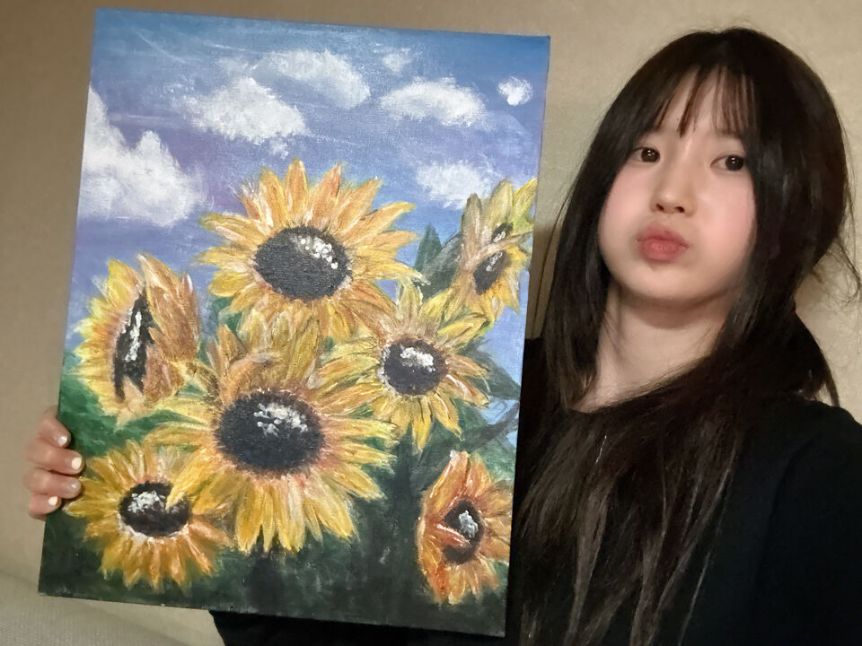
01:36 화이트데이 선물😘
01:39 맘에 들군..
01:40 아크릴 물감이야
01:41 오늘 5시간정도 그렸어
01:43 세상에 이런 일이 틀어놓고 그렸는데 5시간 동안 똑같은 편 두 번 하더라
01:44 외웠어
01:44 아기 고라니 키우는 강아지
01:45 40년 동안 물 대신 콜라 마시는 아저씨
01:46 등등 재밌더라
01:47 이제 나는 밥 먹으려구우
01:48 아까 그림 그리기 전에 밥 먹었는데 대충 조금만 먹으려구!!
04:22 flover시
Sat, Mar 16, 2024
01:11 flover시
03:11 flover시
20:31 flover 밥은 먹었나~
20:32 나는 간단하게 스팸이랑 닭가슴살에 밥 먹었다!!
20:35 날씨가 많이 풀리긴 했나봐아
20:35 주말이기도 하고 한강에 사람 많다
20:36 난 레슨가는 차에서!! 본거야
20:36 ㅋㅋㅋㅋㅋ
20:38 헐.. 오늘 나 송팡이 보러 갈건데..
20:38 신기허네..
20:38 사실 송이가 쪼금 몸이 안 좋아서 이제 숙소는 못 데려와!!
20:39 그래서 내가 보러가!!
20:40 많이는 아니니까 너무 걱정은 말아요!!
20:41 눈물의 여왕?? 재밌어??
20:43 닭강정??
20:44 재밌어 보이는 게 정말 많다
20:46
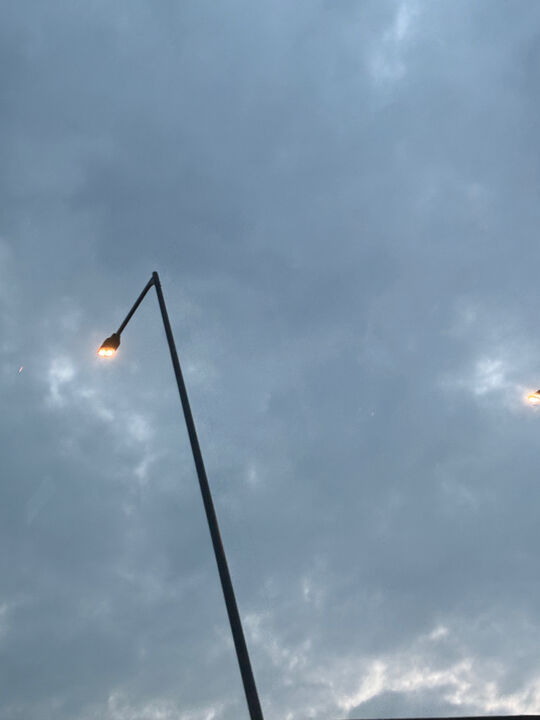
20:47
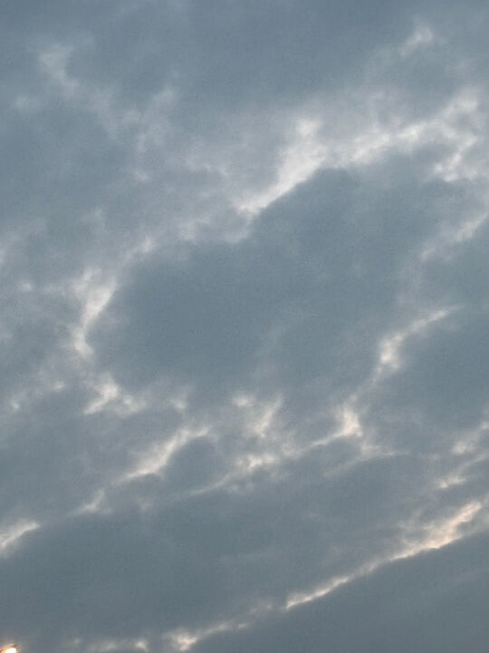
20:47 소보루빵 하늘
20:50 난 이만 가볼게!!
20:50 flover 밥 잘 챙겨묵고 알겠지?
20:50 우야🩵
Sun, Mar 17, 2024
01:30 머하냐아ㅏ
01:31 나 오늘 송팡이 안 보구 그냥 숙소로 왔다아
01:32 짱구 봤거든? 극장판 재밌다
01:33 초능력 대결전
01:34 3D 맞아
01:35 짱구 극장판에는 감동이 항상 남아
01:35 짱구아빠가 좋은 말을 해줬어
01:36 짱구가 3D라 처음에는 잉? 했는데 점점 빠져들어
01:38 보통 애니 볼 때 더빙보다 자막을 주로 보는데 짱구는 무조건 더빙이야
01:39 근데 자막도 좋아 그런 감성이 또 좋아
01:39 극장판은 자막 더빙 둘 다 너무 좋아
01:44 Media missing weverse__20241201152241.mp4
01:44 아 그리구 철수랑 짱아 같은 성우님이셔서 놀랐어
01:45 유리랑 흰둥이도 같아??!!
01:45 우아….
01:46 흰둥이 대본에는 ‘멍멍!!! ’ 이런 거 적혀 있으려나
01:47 너무 귀엽다…
01:48 귀엽다아아
01:49 플로버야아 나는 이제 잘 준비하러 갑니다☺️
03:11 시
03:11 flover시
15:12 flover시
15:12 뇽
Mon, Mar 18, 2024
01:11 flover시
02:34 플로버어 오늘 하루 잘 보냈어??
02:36 나두 오늘 하루 잘 보냈다아
02:36 밥 먹었지이
02:37 녹차밥 알아요??
02:37 오차즈케??
02:39 오늘 먹어봤는데
02:40 누룽지 느낌 날 줄 알았는데 조금 짠 느낌??
02:41 와사비맛 오차즈케?
02:46 갑자기 치즈케이크 먹구싶다아
02:46 달달구리 좀 먹고싶네
02:47 치케 뭔가 치밥같다
02:48 나 최근에 느꼈는데
02:48 나는 정말 모든 음식을 잘 안 가리고 먹는다 생각했거든?
02:48 꽤 많이 가리더라..
02:49 우선 비린 건 못 먹어
02:50 향신료도 별로 안 좋아하고
02:50 너무 짠 거 매운 거 안 좋아해
02:50 좋아하는 향신료도 당연히 있지
02:51 그래서 난 항상 먹던 것 만 먹는 것 같아
02:52 음식으로 새로운 도전을 잘 안 해
02:52 회는 광어 이런 느낌 좋아하구
02:52 조금 비린 느낌으로 가면 잘 못 먹어
02:53 초밥은 계란초밥 제일 좋아해
02:53 광어 연어 초밥도 좋아하는데
02:54 해산물은 또 좋아해
02:54 정말 어렵지
02:54 조기구이 고등어구이 오징어 문어
02:54 산낙지 다 먹어
02:55 이정도면 다 잘 먹는거야??
02:56 ㅋㅋㅋㅋㅋ
02:56 나도 그래서 다 잘 먹고 편식 안 한다!! 했는데
02:57 언니랑 결혼식 갔는데 내가 생각보다 많은 음식을 편식해서 느꼈어
03:00 굴은 익힌 거 좋아해
03:02 ㅋㅋㅋㅋㅋㅋ 내 얼 ‘굴’?ㅋㅋㅋㅋㅋㅋㅋ
03:03 웃겨 진짜~~
03:04 나도 제일 좋아하는 굴은 flover 얼 ‘굴’로 할겡
03:06 라디오 합니다아
03:08 라디오 때 안경??
03:09 흐으음~~~~ 안경이 좋으면 1
아니면 2
03:10 둘 다 좋으면 하트❤️
03:10 냐아아❤️❤️ 사랑스러워어어어어
03:11 flover시
03:14 내가 응원해 줄게 지치지 마☺️
03:17 Media missing weverse__20241201152242.mp4
03:18 Media missing weverse__20241201152243.mp4
03:20 참나 말을 설레게 하시네유?
03:20 고마워유
03:20 잘자유~
13:11 flover시
Tue, Mar 19, 2024
01:11 flover시
01:25 플로버 오늘 라디오 잘 들어요😘
01:25
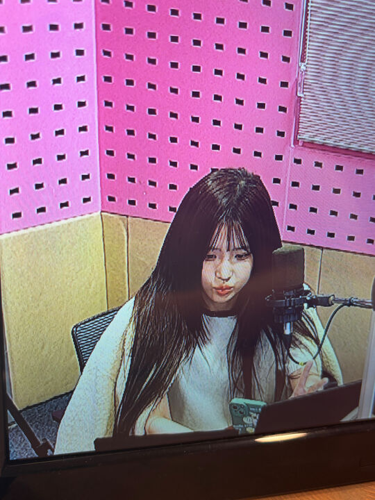
01:26 빠팅
01:41 하트
01:54 졌다
01:54 🥹🥹🥹
02:09 이 노래 좋아❤️
03:40
03:40
03:41 짠~ 퇴근
03:41
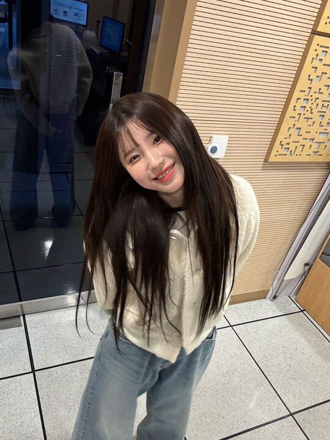
03:42 이것도 선물
04:00
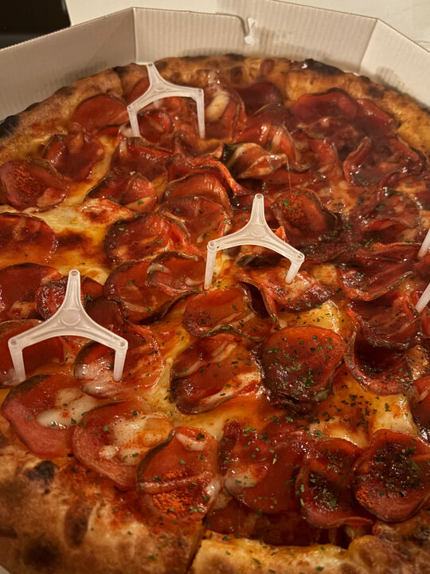
04:00 이건 날 위한 선뭉
04:01 🥰🥰
04:10 flover 태어난김에 세계일주 봤어??
04:11 재밌다
04:13 피자 두조각 먹었다아
04:13 밤이니까 여기까지만
04:14 한 6시면 4조각까지 먹을 걸?
04:16 치킨은 한 마리 절대 다 못 먹어!!
04:23 헐
04:23 무여…
04:23 왜 2시 23분이여?
04:23 뭐여??!
Thu, Mar 21, 2024
00:59 보고싶다아
00:59 flover 뭐하나
01:11 flover시
03:01 선물 보냈어
03:03 늦은 시간에 들어줘서 고마워❤️
04:31 냐아 보고싶다 내시끼
04:33 내가 부르는 노래 들어주는 사람이 있다는 게 얼마나 나한테 힘인 줄 알아??
04:35 오늘 부른 노래는 내가 듣고 좋아서 flover한테 들려주고 싶어서 바로 불러봤어
04:36 오늘도 덕분에 행복한 밤이구만
04:36 너무너무 고마워🥰🥰
04:37 늦었으니 이제 코!! 자자
04:37 아 맞아 날씨 꽤 쌀쌀하더라구
04:37 따듯하게 입어!!🥰
04:37 감기 조심하구우!!
04:38 오늘 tmi 아구찜 먹었어!!
04:38 똥강아디 flover야~ 잘자라아
Fri, Mar 22, 2024
01:11 flover시
02:31 모하냐어ㅓ
02:31 보고싶다아
02:33 챙이 언니가 나 따라해써??
02:33 궁금하다 언니 보고싶다
02:33 ㅋㅋㅋㅋ
02:36 아 너무 귀여워
02:37 챙이 미모가 재밌다
02:38 내가 좋아하는 얼굴이야
02:39 나는 챙이가 화장 지우면 제일이뻐
02:39 화장 찐하게 하다가 화장기 없을 때 와 진짜 이뿌네
03:11 flover시
23:40 Media missing weverse__20241201152251.mp4
23:41 모하냐아구그우
23:41 나 신나보여어??
23:41 나는 이제 씻기전에 플로버랑 조금 놀다 씻으려구
23:42 라이브는 아니야아어
23:42 디엠으로 놀자아🥰
23:43 flover는 보통 식당가면 어디쪽에 앉아??
23:44 나는 구석 아니면 창가자리!!
23:45 내가 플로버 편지를 읽는데 편지 이야기를 잠깐 해볼까 해
23:47 내가 턱걸이 매일 한다고 하니까 평소보다 연습해서 중량도 늘리고 물구나무 푸쉬업을 할 수 있게 되었다는 플로버가 있더라고
23:47 부럽다 물구나무 푸쉬업 나도 하고싶다
23:49 그리구 나 볼링 안친지 너무 오래돼서
지금은 얼마나 칠지 모르겠다
편지에 볼링 이야기가 있어서 볼링 치러 가고 싶어졌어
23:50 그리고 미안한 일이 있어
23:50 플로버가 준 편지 가위로 오렸어
23:50 미안
23:51
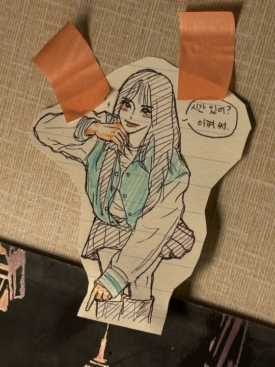
23:51 짠 ~~
23:51 내 벽 꾸밀라고
23:51 고맙다
23:51 글씨 부분은 안 오렸어 상처받지마
23:52 그래서 flover 시간있어?
23:52 아껴써 ㅋ
23:53 아 그리구우
23:54 편지지에 향수 뿌리는 건 좋아!!
그런데 읽으면서 재채기 몇 번 했어!!
정말 그런데 향기는 좋더라
23:56 그런데 진짜 좋아
23:56 그런데 너무 웃겨서 꼭 말하고 싶었어
23:56 ㅋㅋㅋㅋㅋㅋㅋ
23:57 만약 뿌릴 거면 한 번 이상 뿌리지 않으면 더 좋을 것 같아요!!!
23:57 고맙습니다😘
23:58 자 이제 감동적인 이야기로 넘어간다
23:59 기다리는 게 힘들지 않고 오히려 설레고 기대된다고 말해 주는 사람이어서 줘서 고마워
Sat, Mar 23, 2024
00:01 편지 읽으면서 많이 생각했는데 익숙할 때도 됐는데 항상 새롭게 느껴져 플로버 사랑은 언제나 겸손함으로 멋있는 모습 많이 보여줄 수 있는 사람이 될게 기다림이 설렘이 될 수 있게 만드는 것도 내 몫이니까!!
00:04 내 시끼 똥강아디 내 플로버 내 flover!!!
00:05 진짜 사랑해
00:06 아 부끄러워라
00:07 힘들면 언제나 기대도 괜찮아 나 생각보다 강하니까 알겠지??
00:07 서로 기대면 절대 무너지지 않을거야!!
00:08 됐다 이제 간지러운 이야기 끝~~!!
00:08 치킨 먹으러 다녀올게~~🍗
01:11 flover시
13:11 flover시
Sun, Mar 24, 2024
01:11 flover시
01:11 냐아~
01:19
01:19 짠 선물
01:19 셀카 찍고왔어 ㅋㅋ
01:19 오늘 일찍 일어났더니 너무 졸려서 이제 일기쓰고 빨리 자려구우
01:23 배고프다아
01:24 항상 졸림과 배고픔은 같이 쏟아져
01:24 맞아 배불러도 졸려
01:25 강아지의 날이야??
01:38 내가 웃긴 거 보여줄까
01:39
01:39 자
01:39 강아지의 날이니까
01:39 ㅋㅋㅋㅋ
01:39 찍으면서도 웃겼어
01:41 필터 찾느라 좀 걸렸어
01:41 옛날 감성이지?!
01:41 느낌있지??
01:42 ㅋㅋㅋㅋㅋㅋ
01:43 8월 8일이 세계 고양이의 날이야?
01:44 그럼 그때 고냥이 필터하고
01:44 하루종일 냥냥 거려야지
01:44 4월 12일은 햄스터의 날이야??
01:44 그럼 그때 햄스터 필터 ㅋㅋㅋㅋㅋ
01:45 그리고 찍찍 .. 거려야 하나??
01:45 냥냥 거려본 적은 있어도 찍찍 거려본 적은 없네
01:46 7월 29일은 호랑이의 날이야??!!!
01:46 3월 33일은 금붕어의 날?!!!??!!?
01:46 3월 33일 있으면 좋겠다
01:46 3시 33분 챙기게
01:47 아 11월 4일은 너 생일이야??
01:47 축하해!!
01:48 7월 19일은 너?? 생일??
01:48 축하해!!
01:49 11월 4일은 부모님 결혼기념일이야??! 축하드립니다!!!
01:49 오늘 진짜 너 생일이야???
01:49 생일 너무 축하해💝💝
01:50 너 애인 생일이 9월 29일이야??
01:50 오 나랑 똑같네
01:51 4월 29일 중간고사 시작이야?? 잘할 수 있지?? 하팅🥰🥰
01:51 자~
01:51 이제 다른이야기 할 사람??!
01:52 오늘의 티엠아이 꼬랑 삼겹살 묵었다
01:54 나의 나이트 루틴은 씻고 로션 바르고 전기장판 틀고 일기 쓰고 수면 유도 음악 틀고 전기장판 따듯해졌을 때 누워서 폰 보다가 잔다
01:55 모닝루틴??
01:55 최대한 늦게까지 자고 허겁지겁 준비한다
01:57 아 그리구 자기 전에 꼭 다음 날 입을 옷을 세팅하구 자
01:57 아침에 늦게까지 자야하니까
01:58 그래서 J랑 P같이 나와
02:01 벌써 12시다
02:01 냥
02:01 보내주기 싫은데~
02:02 나 고양이냐고 햄스터냐고??
02:02 ㅋㅋㅋㅋㅋㅋ 귀여우어
02:03 다 좋은데 어케 골라
02:04 코카콜라로??
02:04 이 중요한 결정을 코카콜라로 정하라구?
02:04 아니?
02:04 그럴 수 없어
02:05 과학적이라고?
02:06 7개 고르고싶어 요일마다 다른 동물로
02:06 월 햄스터
화 고양이
수 너구리
목 .. 등등
02:07 사자나 호랑이나 치타같은 멋쟁이 동물도 껴서
02:08 뭐라고 불러도 난 좋아
02:09 flover가 불러주는 별명이면
02:10 당연하지이
02:11 아꾸 이뻐
02:12 나는 이제 일기쓰러 가야겠다!!
02:12 오늘의 목표는 1시 전에 잠들기야!!
02:12 재밌었다아 오늘도 !!!
02:13 잘 자 내시끼 강아지 똥강아지이flover
03:11 flover시
03:11 진짜 잘거야!!
03:13 잘 자🌙
12:10 딸기축제 어디서 하는데??
12:11 가고싶다아
12:13 진짜 딸기 맛있겠는데..?
13:11 flover시
14:27 Media missing weverse__20241201152308.mp4
14:28 나 오늘 8시간 잤어!!
14:28 그런데 또 졸린거야
14:28 우웅 ㅋㅋㅋ
14:31 아 마져
14:32 나 이번에 처음으로 월트컵경기장에서 축구봤다
14:32 직접 본 건 처음이었어
14:33 가족들이랑 갔어
14:35
14:35 짠
14:36 ㅋㅋㅋㅋㅋㅋ언니가 유니폼 나랑 같이 입으려고 사줬어
14:38 사진 잘 나왔지??
14:44 키 커보여??
Mon, Mar 25, 2024
01:11 flover시
03:11 flover시
Tue, Mar 26, 2024
01:11 flover시
01:29
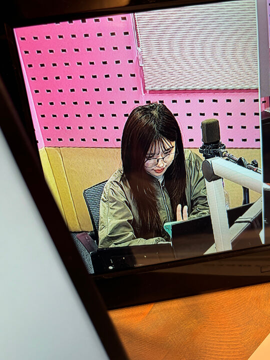
01:29 짠
01:45 아니 플로버
01:45 안경씅거 왜캐 좋아해
01:45 웃음나와
01:45 ㅋㅋㅋㅋㅋ
01:45 바부야
01:45 ㅋㅋㅋㅋㅋㅋㅋㅋ
01:45 아 진짜 웃겨
01:45 덕분에 웃는다 ㅋㅋㅋㅋ
01:57 붐붐붐
03:11 flover시
Wed, Mar 27, 2024
01:11 flover시
01:18 와
01:29 오늘 티엠아이 있어어
01:29 언니랑 볼링 쳤는데 내가 이겼어
01:30 그런데 나 진짜!! 오랜만에 쳐서 그렇게 잘 치진 못했는데 그래도 나쁘지 않았어
02:09 100간신히 넘었다
02:10 8.9.10파운드 골라서 쳐!!
02:10 나는 스핀없이
02:11 276?!!!
02:11 와… 뭐야 선수야??
02:13 테니스는 안해봐따아
02:15 배드민턴 치고싶다아
02:17 피구도 재밌는데 엄청 잘하는 건 아냐아
02:18 멤버들이랑 피구하면 재밌겠다
02:18 요녀석들
02:18 내가 한방에 날려주게써
02:22 하지만 마음 약해져서 봐줄 것 같아
02:23 봐줄래
02:23 내가 빨리 져서 수비에서 공격
02:23 어때 무서울 것 같지
02:24 😏😏😏🤓
02:25 플로버어어
02:25 나는 이제 일기쓰구우 슬슬 자볼게!!!
02:28
02:28 안경셀카~
02:31 나는 이제 가볼게에🥰
22:57 뭐해요오
22:58 보고싶다아
22:59 나는 방금 샤브샤브 먹었다아!!
22:59 배부러어
23:00 디저트도 먹었다아
23:00 먹으면 왜 졸릴까??
23:00 🤓🤓
23:01 플로버 안경 쓴 거 좋아하니까
23:01 🤓
23:01 ㅋㅋㅋㅋㅋ
23:12 flover 오늘 하루 뭐했어??
23:13 나는 하루종일 플로버 생각했는데에
23:13 플로버는 일했어???!!
23:14 ㅋㅋㅋㅋㅋㅋ
23:14 장난이야아ㅏ
23:14 어쩐지 오늘 시계만 보면 112 223 이러더라니
23:16 괜찮아아ㅏ!!!!
Thu, Mar 28, 2024
01:11 flover시
15:12 냥 아슬아슬 했다
17:33 flover시
23:41 flover 뭐하냐아앙
23:43 보고싶구만
23:49 나 어떤 영상을 봤는데
23:57 책상 내 사진으로 꾸며놓고 그거 보면서 힘내서 공부한다는 내용의 영상이었어
23:57 보고 기분 좋아졌어 너무 사랑스러워서
23:59 이뻐진짜아
Fri, Mar 29, 2024
00:04 플로버는 배부르면 딱 멈춰?
00:04 아니면 내 앞에 있는 거 다 먹어?
00:05 나는 배부를 때 멈추면 배가 너무 빨리 꺼져서 쉬었다가 항상 조금 더 먹어
00:07 그런데 대식가는 아냐
01:11 flover시
13:11 flover시
23:34 사진 올렸는데 어때??
23:35 스키장 다녀왔거든❄️
23:36 엄청 좋았어
23:36 그리고 있자나
23:36 내가 말이야
23:37 일본 브이로그도 조금 찍었거든
23:38 편집 아예 하나도 안 했는데 우선 말을 저질렀으니 언니랑 편집같이 해서 빠른 시일 내에 올려볼게
23:39 플튜버가 편집 같이 해준다고??
23:39 고마워요
23:39 ㅋㅋㅋㅋㅋㅋ
23:40 뭔가 플튜버 성향상 웃기게 만들어줄 것 같아 ㅋㅋ
23:41 효과 잔뜩 넣어서
23:41 이런 저런 영상 짜집기 하고
23:41 브이로그가 아니라 예능을 만들어 주겠지
23:42 ㅋㅋㅋㅋㅋㅋㅋㅋ
23:42 하지만!!! 제가 하겠습니다 언니랑!!!!
23:44 아 .. 맞아 그때 보이스 라이브 켰을 때 일본이었어 ㅋㅋㅋㅋ
23:45 그때 엄청 당황했어
23:45 두근두근두근
23:45 ㅋㅋㅋㅋㅋㅋㅋㅋㅋ
23:46 네비 소리 들리고부터 내가 무슨 말 한지 기억 안 나
23:47 지금은 한국이야아
23:47 이런 비하인드가 있었다~~~!!
23:49 나는 이제 밥 먹구 올게!!
Sat, Mar 30, 2024
11:46 좋은 하루 보내🌸🌸
13:11 flover시
18:23 밖이면 하늘 올려다 바바
Sun, Mar 31, 2024
01:11 flover시
03:29 라디오 때 받은 편지 방금 다 읽었다아
03:30 가사에 적고 싶은 내용도 있었어
03:33 지금 마음이 몽글몽글이야
03:33 진짜 마음 충전
03:36 고마워어🥰
03:36 flover 늘 행복했음 좋겠다
03:40 플로버가 내 봄이다아
03:55 플로버 저는 이제 잘게요🌙
03:55 잘 자🥰
15:11 flover시
16:22 flover시
16:23 Media missing weverse__20241201152318.mp4
16:23 Media missing weverse__20241201152319.mp4
16:24 Media missing weverse__20241201152320.mp4
16:24 일요일이자나🌸🌸
16:30
16:31 눈밭이야🩵
16:31 구름같지??
16:32 ㅋㅋㅋㅋㅋㅋㅋㅋㅋ 구름이야 ㅋㅋㅋㅋㅋㅋㅋ
16:32 바부야
16:33 그런데 진짜 눈같지
16:34
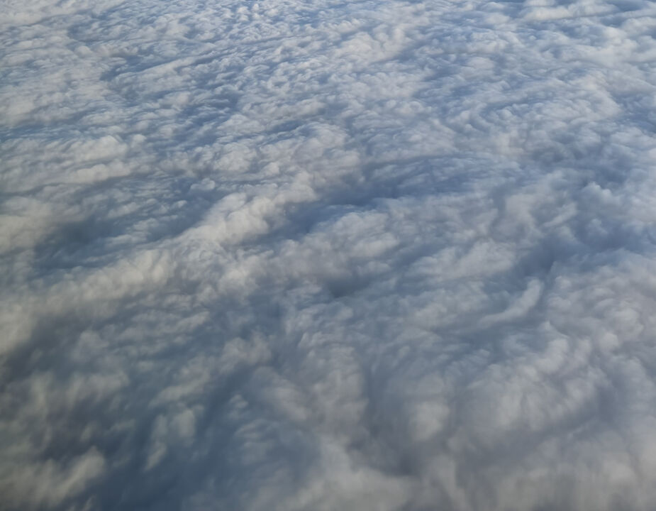
16:34 이게 스키장이야
16:35 완전 폭신하더라고 스키장이
16:35 ㅋㅋㅋㅋㅋㅋㅋ
16:35 냐야어아!!!!!
16:35 이 기분 뭐지
16:36 냐아아아~~!!!!
16:36 왜 좋지
16:36 ㅋㅋㅋㅋㅋㅋㅋㅋ
16:36 전부 구름입니다
16:36 ㅋㅋㅋㅋㅋㅋㅋ
16:40
16:40 이건 구름이야
16:40 냥…
16:40 속아주세요
16:41 ㅋㅋㅋㅋㅋㅋㅋㅋㅋ
16:42 헤ㅔ
16:45 나는 이제 밥 먹구 올게에
17:33 flover시
Mon, Apr 1, 2024
01:11 flover시
03:26 flover시
03:27 뇽 왱?
03:28 하나도 안 보고싶다아 flover
03:29 사실 진짜 보고싶어..
03:29 만우절은 무슨
03:29 보고싶어!!!
03:29 나는 이제 자려구우
03:33
03:33 플로버 오늘 콘서트 너무 재밌었어요
03:34 플로버도 집 잘 들어갔죠??
03:39 Media missing weverse__20241201152332.mp4
03:40 예전에 브이로그 찍다가 진행안항거
03:40 ㅋㅋㅋㅋㅋㅋㅋ
03:40 자 이제 화장을 지워보도록 하겠슴다~
03:44 Media missing weverse__20241201152333.mp4
03:45 냐아
03:48 나 이제 진짜 잔다아!!!!!
03:48 잘자 flover🌙
19:55 flover시
23:39 Media missing weverse__20241201152334.mp4
23:42 Media missing weverse__20241201152335.mp4
23:47 오늘 라디오 드레스코드 뭐더라??
23:48 한복??
23:50 기대된다
Tue, Apr 2, 2024
01:11 마지막 flover시
01:15 흐흐
01:48 ㅋㅋㅋㅋ
01:55 만우절 장난 더 치고싶어..
01:57 냥… 끝나떠어 흑
01:57 그래도 재밌었더
01:57 심장이 콩닥콕닥했어 ㅋㅋㅋ
01:59 냐앙
01:59 플로버어 재밌게 들어요🥰
03:11 flover시
16:22 flover시
Wed, Apr 3, 2024
01:11 flover시
15:11 flover시
22:30 모하냐아
22:30 밥은 먹었나아
22:31 나는 월남쌈 먹었어
22:39 로아 훈련 시킨 거 봤어??
22:39 강아지가 완전 똑순이야
22:40 사육사의 꿈 로아한테 실현하기
22:41 내가 언니 앞에서 송이 팡이만 보면 앉아! 이래서 그만 좀 하래
22:42 하지만 나꼬는 강아지 훈련 시키면 좋아해서
22:44 훈련 시키려면 진짜 반복학습을 많이 시켜야 해
22:45 간식 너무 많이 먹으면 밥 안 먹을까 봐 밥 먹을 시간에 사료로 훈련하기도 해
22:47 아로도 훈련 시켜보라구??ㅋㅋ
22:47 고냥이??
22:47 고냥이는 어려운데
22:47 하려면 진짜 맛있는 간식 있어야 해
22:48 예전에 고냥이 훈련 시켜본 적 있는데 멸치로 했었어
22:48 멸치 엄청 좋아하는 고냥이 있었거든
22:49 고양이보다 고냥이가 더 귀엽
22:49 고냥잉😽
22:50 꼬냥이도 귀엽지
22:51 고먐미
22:52 Media missing weverse__20241201152336.mp4
22:52 아로😽😽
22:53 내 방에 들어와서 냅다 뒹굴
22:54 도미노 엎지른 나 같아??ㅋㅋㅋ
22:54 웃기다
22:58
22:58 짠
22:59 그림이지~
22:59 ㅋㅋㅋㅋㅋㅋㅋㅋㅋㅋ
22:59 장난이야 ㅋㅋㅋㅋㅋ
23:00 너무 이쁘지..
23:00 찍고 진짜 놀랐어
23:00 너무 이뻐서
23:01 그러게 신기하네 사진 칭찬은 그림같다
그림 칭찬은 사진같다
23:04
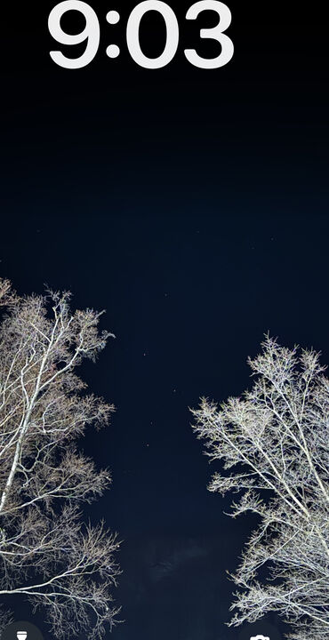
23:04 배경화면 바꿨다
23:12 나 방금 아이돌이 하품하는 법 영상 봤는데 ㅋㅋㅋ
23:13 너무 웃겨
23:13 누가 하품하려나 했는데 나였네
23:14 웃겨 진짜 ㅋㅋㅋ
23:14 그런 포인트는 어떻게 찾고
23:14 영상 제목은 어떻게 그렇게 웃기게 만들어
23:25 쇼츠 5분 이상보면
정말로 내리시겠습니까?
알람 뜨면 좋겠다
23:27 당신은 도파민 중독이 의심됩니다
23:28 정말로 내리시겠습니까?
23:30 하영시
23:30 늦었네
23:31 플로버
23:31 길 가다가
23:31 마주 오는 사람이랑 부딪칠 뻔한 적 있어?
23:32 그럼 왼쪽으로 피해 오른쪽으로 피해?
23:33 그럼 상대방이랑 마음이 맞아서 같은 방향으로 피해서 더 당황한 적 있어?
23:34 그럴 때 대처법을 내가 생각했어
23:36 이런 일이 일어날 경우 모든 사람이 오른쪽이나 왼쪽으로 피하자고 약속을 하면 이런 일이 없을 거야
23:36 두 번째 방법
23:38 본인이 한 번 피한 방향으로 한 번 더 가는 거야 투 스텝으로
23:38 상대도 투스텝을 했다?
23:38 뭐 운명인거고
23:39 세 번째 방법
23:40 정말 멀리서부터 난 이쪽으로 갈 거라는 걸 마주 오는 상대에게 어필한다
23:41 그럼 마주 오는 상대는 보통 다른 쪽으로 가더라고
23:41 커브길이면 투 스텝 밟으시면 될 것 같아요
23:43 이거 라이브 키면 플로버한테 말해주려고
23:44
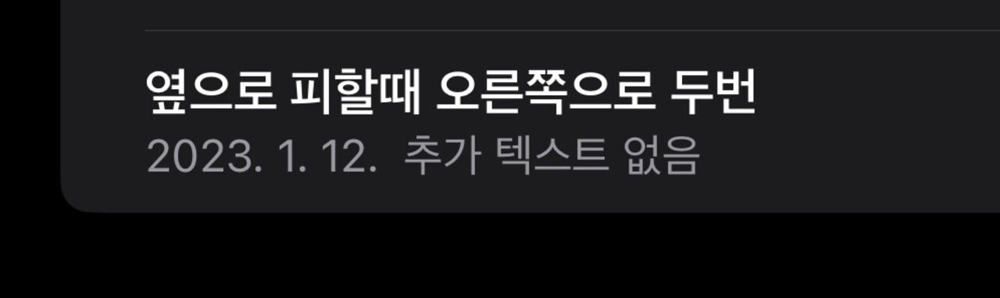
23:44 이때부터 메모장에 적어두고 이제야 말하는 겨
23:45
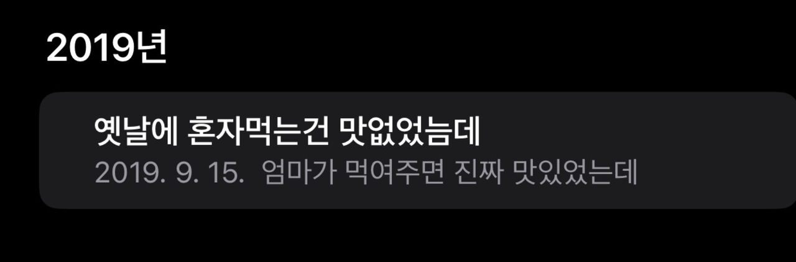
23:45 이런 것도 있다
23:45 이것도 말하려고 한 건데
23:47
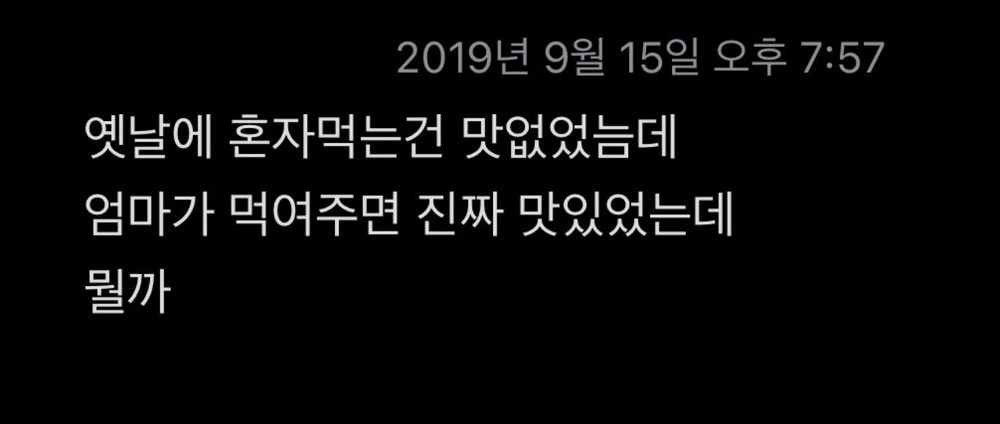
23:47 이렇게 적어놨네
23:47 ㅋㅋㅋㅋㅋ
23:47 뭘까
23:52 방 대청소한 기분이다
23:57
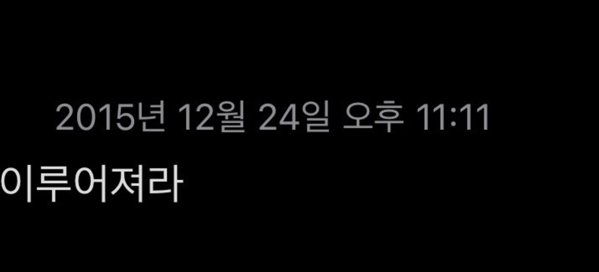
23:57 귀엽..
Thu, Apr 4, 2024
00:00 다 이루어져라🌸
00:04 배고푸다
00:04 나경이랑 먹는 라면이 제일 맛있어
00:05 지원이랑 먹는 라면도 맛있는데 지원이랑은 라면을 자주 안 먹었어
00:07 ㅋㅋㅋㅋㅋㅋ지원이 전 애인 아니야 ㅋㅋㅋㅋㅋ
00:08 그럼 지원이 이야기 눈치 보이면 지원이 이야기는 (이렇게 할까?)
00:08 (잘 지내?)
00:08 ㅋㅋㅋㅋㅋㅋ
00:08 전여친여치니
00:08 ㅋㅋㅋㅋㅋㅋ
00:09 아
00:09 웃기네
00:10 즐거웠다..
00:11 ㅋㅋㅋㅋㅋ 플라이하이는 누가 부르냐닝
00:11 노랑즈가 부르지!!!
00:13 원래는 내 폰 최근 통화 목록에 지원이 항상 있었는데 이제 나경이가 많아졌다
00:14 그래도 전화 자주해
00:15 나꼬❤️ 셔니❤️ 챙이❤️ 막둥이❤️
00:15 박지원
00:15 박지원.
00:16 캡틴❤️ 지센❤️
00:16 박지원.
00:17 그런데 이게 나름.. 특별하게 느껴져 이제
00:17 ㅋㅋㅋㅋㅋㅋ
00:18 원래 메찔이였눈데
00:19 지원이 보고싶넹
00:19 계속 지원이 이야기 하니까
00:19 이 자식 정말 묘한 매력이 있어
00:20 안 받네
00:21 폰에 부재중 하나 남겨져 있으면 좀 그런데
00:22 ㅋㅋㅋㅋㅋㅋㅋㅋㅋ
00:22 잘못걸었다구?ㅋㅋㅋㅌ
00:23 그럼 말투는?
00:23 어..! 아 잘못 걸었다 쉬어
00:24 아니면 무심하게
00:24 ㅈㅅ잘못검
00:24 ㅋㅋㅋㅋㅋㅋㅋㅋㅋ
00:25 딘뮤하처럼 잘못 걸었으니까 넌 신경꺼도돨것같다구??ㅋㅋㅌㅌㅋㅋ말해?
00:25 ㅋㅋㅋㅋ
00:25 아
00:25 미치겠네
00:25 ㅋㅋㅋㅋㅋ 웃겨서
00:28 장난이야.. 화내지마아
00:32 져니랑 전화했구 플로버랑 놀고 싶어서 더 오바한거야!! 기분 나쁘면 미안해요
00:36 냥!!
00:36 고마워어
00:38 친구랑 톡하는 것 같았다 오늘
00:38 재밌었다아
00:40 내시끼 flover🥰
00:41 나는 이제 작업하러 갈게!!
00:42 구래 나만의 똥강아지~
00:42 파이티잉!!!
01:11 flover시
17:33 flover시
Fri, Apr 5, 2024
01:11 flover시
01:14 뭐하구 있나아
01:16 나는 숙소가구 있다아
01:18 어제 밤새 작업하고 됐다!! 하고 자고 일어나서 들어봤는데 너무 아쉬워서 마음이 아파용
01:18 어제 분명 아! 좋아써 오늘은 여기까지~! 하고
01:19 일어나자마자 정말 내가 모르는 노래다 생각하구 들었더니
01:20 괜차나 이런 곡 저런 곡 쓰다보면
01:20 좋은 곡 나올구야
01:22 어제 작업한구..? 후렴이 맘에 안 들었어!!! 귀에 잘 안 들어오더라고
01:23 후렴이 제일 중요하자나
01:23 그런데 플로버는 다 좋다고 해줄 것 같아서 방금 혼자 웃었어..
01:24 흐흐
01:24 사랑둥이야.. 플로버 진짜아
01:24 내 자존감 지킴이
01:25 이 사람들한테 진짜 진짜!!! 좋은 곡 써서 들려주고 싶다..
01:27 진짜 천천히 많이 들려줄게
01:28 그룬데 flover 밥 먹었나아
01:28 왜 이 시간만 되면 배가고푸나
01:29 브로콜리 좋아하는데
01:29 완전 맛있어
01:31 초장이랑 먹으면 진짜 맛있어요옹
01:31 깻잎도 좋아해애
01:31 오이는 쌈장
01:43 생각해보니까 내가 고기 먹을 때 쌈장을 잘 안 먹는데 오이 먹을 때 쌈장 먹어
01:45 고기 먹을 때 명의나물이나 콩나물 김치 상추 마늘
01:45 오이만 쌈장 찍어 먹는 것 같아
01:46 아 명이나물이구나
01:46 고마워
01:46 의인줄
01:46 명의나물
01:47 오늘의 맞춤법
01:47 명의나물 아니고 명이나물이다
01:47 이렇게 실수해 줘야지 다시 안 틀리지
01:49 만약 명의나물이라면 발음은 명으나물이겠다
01:51 맞춤법은 진짜 어려운 것 같아 띄어쓰기.. 특히
01:52 에요 예요도
01:54 오 맞아 간간이 간간히 이런 것도
01:55 하냥 하영도 헷갈려??
01:55 ㅋㅋㅋㅋㅋㅋ
01:55 ㅋㅋㅋㅋㅋㅋㅋㅋㅋㅋ
01:57 하영이 제주도 사투리로 많이 라는 뜻이야??
01:57 하영 보고싶다 하면 많이 보고싶다야??
01:58 신기하다
01:59 하영하영 배고프다
01:59 그런데 뭐랄까
01:59 나는 내가 내 이름 부르는 거 별로 안 좋아해서
01:59 좀 그르타
01:59 말하고 조금 소름 돋았어
02:00 그냥 플로버가 불러줘..
02:00 3인칭 잘 못해용..
02:02 하냥도 좋고 하영도 좋아 그냥 플로버가 뭐라고 불러주든 그게 애칭처럼 느껴져
21:28 모야
21:28 어떻게 알았어
21:30 맛있었어
21:31 동파육 무슨 소스?? 있어서 만들기 쉬웠어
21:31 그냥 고기 굽고 야채 넣고 그 소스만 부으면 끝나는 거
21:31 ㅋㅋㅋㅋ
21:32
21:32 괜찮지
21:34 맥주아니구우 아이스티!!
21:35 맞아 제로 아이스티
21:35 피치망고 아니구 제로 아이스티입니다아
21:36 제로 식혜??
21:36 우아..
21:36 그럼 밥알은??
21:37 신기하다
21:38 나는 밀키스 제로 진짜 좋아해
Sat, Apr 6, 2024
01:11 flover시
01:17 뭐하구 있나아
01:18 냐아 브이로그 빨리 올리구 싶다아!!
01:22 언니랑 같이 편집은 거의 끝냈는데 회사에서 이번 주는 확인이 어려울 것 같다고 하셔서 다음 주에 확인해 주시면 최대한 빠른 시일 내에 올릴게!!!
01:22 엄청 재밌지는 않아!!!
01:23 역대급은 아니지만 나는 재밌는 것 같아
01:24 플로버 반응이 벌써 너무 기대된다..
01:24 어쩌냐아
01:25 아무 생각 안 하고 있으면 다음 주 금방 올 거야
01:25 ㅋㅋㅋㅋㅋㅋㅋ 벌써 눈물 장전이야??
01:26 웃기는 사람
01:26 벌써 팝콘 사왔어??
01:27 ㅋㅋㅋㅋㅋㅋ
01:27 나는 이제 출출해서 토스트 해 먹어야겠다
01:28 식빵에 계란후라이랑 딸기잼이랑 먹으면 맛있는 거 알아??
01:29 진짜 내가 제일 좋아하는 조합이야
01:29 나꼬한테 물어봤는데 꼬도 좋아한대
01:30 내가 이 조합을 초등학교 2학년 때 친구 어머니가 해주신 걸로 처음 먹어봤는데 그 이후 가장 좋아하는 토스트 조합이 됐어
01:32 그 뭐라 하지 식빵에 계란 물 묻혀서 굽는 토스트
01:32 프렌치토스트!!
01:33 배고프다 난 어여 토스트 만들러 갈게요옹
02:22 잘 묵었다
02:23
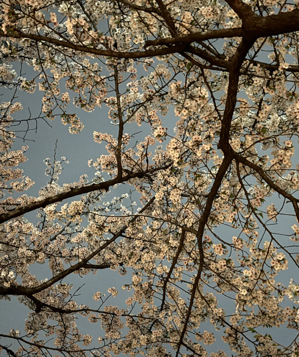
02:24 이쁘지이
02:24 그림이야아
02:25 이쁘면 그림!!
02:26 그럼 flover는 그림인가?
02:28
02:28 짠
02:29 ㅋㅋㅋ 언제 그린거냐는 답장 대박
02:29 ㅋㅋㅋㅋㅋㅋㅋㅋ
02:32 우웅 브이로그 맛보기 사진!!
02:39
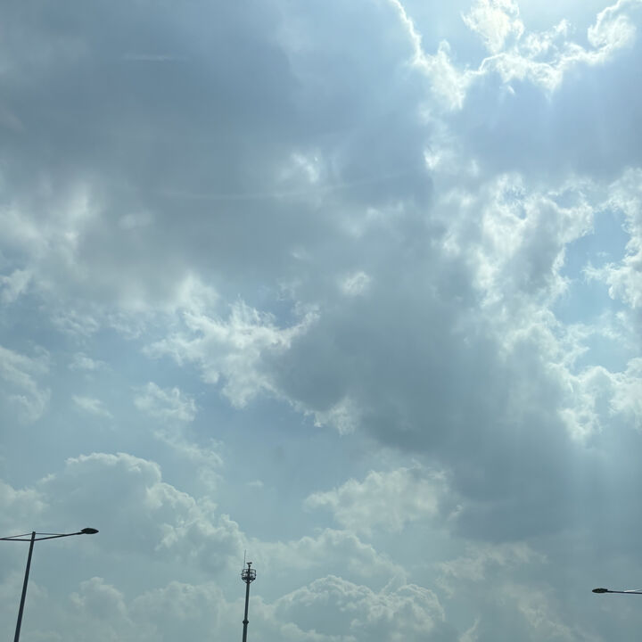
02:39 이건 오늘 찍은 사진
02:40 하늘이 너무 이뻐
Sun, Apr 7, 2024
01:11 flover시
02:11 flover시
12:11 flover시
Mon, Apr 8, 2024
02:11 flover시
12:11 flover시
12:12 flover 🥰 밥 먹었어?
12:13 점심 뭐 먹으려구우?
12:14 나는 묵참김밥 먹으려구
12:16 크림치즈호두김밥??
12:19 생각보다 잘 어울려
12:20 오늘 라디오 없다아🥹
12:24 flover 매실 좋아해?
12:25 음료수
12:26 매실도 제로가 나왔어??
12:26 대박..
12:28 나중에는 제로 아닌 거 찾기 힘든 날이 올 것 같아
12:30 flover 제로 치킨 먹을까 제로 피자 먹을까?
12:31 앵.. 진짜??? 제로 치킨이 있다구??
12:31 말도 안돼
12:32 아아 제로슈가 치킨?
12:32 어이없구만??
12:33 그래도 제로슈가라면 나쁘지 않은데??
12:33 아침햇살은 제로 안 나오겠지?
12:34 있어요..?
12:35 뭐야 찾아도 안 나오는데
12:36 탕탕탕~~~
12:38 아침햇살님 칼로리 많아도 괜찮아요 맛있잖아요
12:39 옛날에 아침햇살 밥그릇에 따라 마셔본 사람? 막걸리처럼
12:41 그리고 고깃집 가면 음료수로 맥주 색깔 내는 방법도 알아?
12:42 환타파인에 콜라 조금 섞으면 돼 ㅋㅋㅋㅋ
12:42 가끔 해 먹어..
12:43
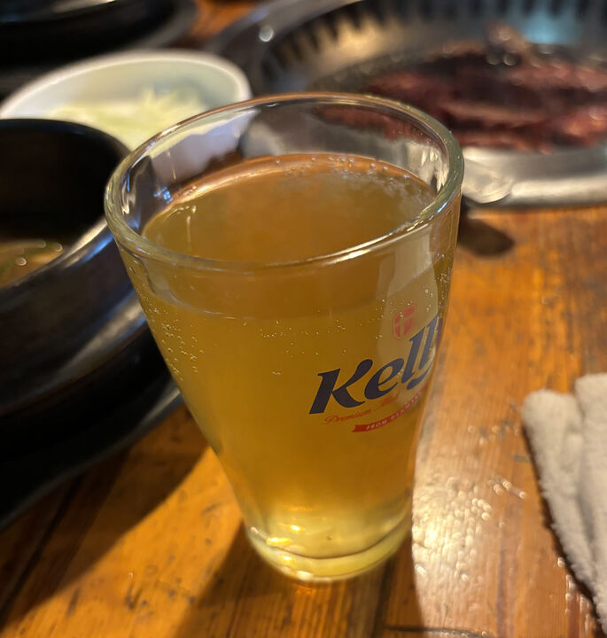
12:44 어때
12:44 진짜 같지 ㅋㅋㅋ
12:46
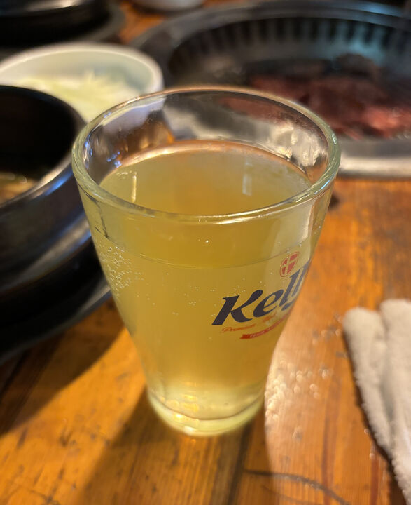
12:46 여기에 콜라 섞은 거야
12:46 예전에 찍어둔건데
12:46 콜라는 그냥 색 보고 조금씩 넣으면 돼
12:49 나는 이제 가봐야 해서!!
12:49 flover 밥 잘 챙겨묵고
12:49 좋은하루보나요🩵
14:11 flover시
18:05 모하냐아
18:05 바뿌냥
18:08 보고싶냥??
18:09 혹시 보고싶냐앙
18:09 나두 보고싶어
20:07 재밌었다아
20:09 재밌게 봐줘서 고마워어❤️
21:05 엄마한테 오늘 라이브 이뻤다구 연락왔어
21:05 스윗..
Tue, Apr 9, 2024
00:11 flover시
14:11 flover시
18:21 레몬녹차 좋아해??
18:22 레목녹차 맛있어
18:22
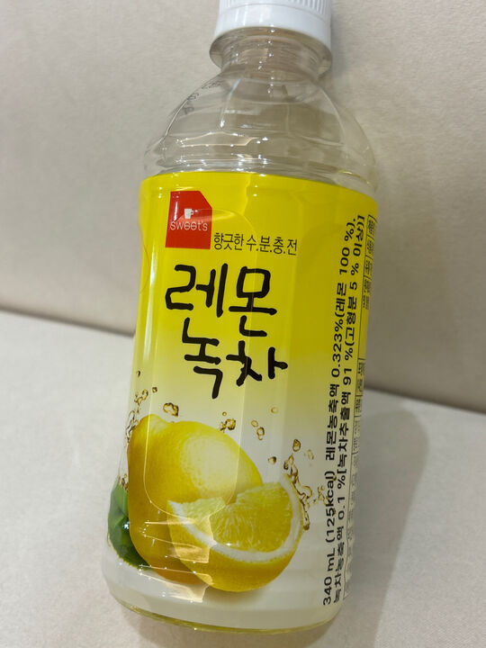
18:23 요고
Wed, Apr 10, 2024
00:11 flover시
18:02 보고싶다아
18:04 나는 이제 레슨간다아🥰
18:55 flover시
21:24 뭐 먹을까아
21:25 숙소 도착하면 라이부나 때릴까?
21:27 아 맞아 flover 몸살 조심해
21:29 일교차가 크니까 항상 조심조심
21:31 아 나는 안아포
21:32 걱정말아유
23:52 아 다음노래 플라이하이다
23:52 아..
23:52 혼자 들을게
Thu, Apr 11, 2024
00:11 flover시
Sat, Apr 13, 2024
00:11 flover시
12:11 flover시
14:01 무하냐아
14:02 나는 방금 밥 먹었다아
14:03 flover는??
14:04 나는 콩나물국밥 먹었어
14:07 현대옥 콩나물국밥 남부식 오징어사리 추가해서 꼭 먹어봐
14:11 flover시
Sun, Apr 14, 2024
00:11 flover시
00:58 꽁꽁
01:44 꽁꽁 고양이 찍을까??
01:45 ㅋㅋㅋㅋㅋ
01:59 알게떠어
01:59 생각해보께에
01:59 🤓🤓
01:59 ㅋㅋㅋㅋㅋㅋㅋㅋㅋㅋ
02:05 요즘 날씨 진짜 많이 풀렸지
02:06 시간이 진짜 빠르다
02:08 브이로그는 회사에서 어려운 작업들 해주시는 중😎😎
02:08 흐흐
02:08 하지만 까먹고 있어
02:08 기대하지말구우
02:09 우동 먹었다아
02:10 보고싶다 너무
02:11 flover시
02:12 보고싶어 너무
02:12 flover가 너무 보고싶어
02:16 어제 찍은 달 사진인데 이제 올렸어
02:17 달이 너무 예쁘다 flover
02:17 flover 처럼
02:24 Media missing weverse__20241201152359.mp4
02:24 데뷔시
02:24 안녕하세요..!!
02:25 네네 이제 막 데뷔 했어요..!!
02:26 매력적인 ……모찌나가요
02:26 매력적인 못 지나가요..!!
02:27 주사 맞는 강아지랑 주스 따르는 개인기를 해보겠습니다!!
02:28 진짤루에오 가짤루에오 녜?? 그럼 진짤루죠 진짤루 아니면 가짤루게써요??
02:28 그만말해이제~~!!!
02:29 플로버! 오늘 럽밤 무대 잘 보셨나요??
02:31 플로버 저희가 500일을 함께한지 벌써 500일이 되었는데요
02:32 이건 …심리의 고도전이야
02:33 내가 더 커!!!!
02:33 나와 나와~!~!!
02:33 뭔지 알아??
02:33 1등이야!!!
02:34 모카번!!!
02:34 플로버는 항상 (퍽) 여기이써!😤
02:36 나꼬야 넌 낭만을 모르니??
02:36 당나귀~~~!!
02:36 당신과 나의 귀한시간~
02:36 찌… 찐으로..?!
02:37 다 알아??
02:37 내가 말한 거 다 아는 사람??
02:38 다 알면 진짜 감동이야
02:39 흐흐
02:39 나 그거 좋아해 토마토 농장
02:40 그때 꽁트 재밌었어
02:40 그 소가 나였제잉~
02:41 재밌었다
02:41 그런 꽁트 한 번 더 찍구싶다 ㅋㅋㅋㅋ
02:42 어때 flover
02:42 새록새록
02:43 회복회도 너무 내가 좋아해
02:43 따듯해
02:46 보고싶어어
02:46 내시낑
02:46 이제 슬슬 자야지이
02:46 잘 자🌙🌙 많이 많이 좋아하구
02:46 오늘 하루 고생했어☺️
18:55 flover시
Mon, Apr 15, 2024
00:11 flover시
02:04 오랜만에 포스트에서 노니까 재밌었다아
02:09 고마워 이쁜 말 해줘서
02:11 벚꽃이 너무 빨리 져버렸지만 푸른 나무가 환하게 뻗어 이 나름 너무 좋아
02:11 flover시
02:13 또 그 안에 flover가 있으니까 더 큰 의미가 있다아
02:13 고마워
02:14 더워지는 여름을 기다리며 우리 더 뜨겁게 지내보자
02:14 언눙 자 이제 바부야
02:15 잘 자 내시끼🌙
12:11 flover시
18:40 Media missing weverse__20241201152400.mp4
18:40 Media missing weverse__20241201152401.mp4
18:42 나는 배고프다아
18:46 와퍼가 새로나왔다구??
18:49 나도 와퍼 좋아하는데
22:09 꽁꽁
22:09 봤어?
22:09 30번 찍은 것 같아
22:10 30번 봐요
22:22 Media missing weverse__20241201152402.mp4
22:23 원래 이렇게 찍으려고 했었어
22:24 드디어 했다 꽁꽁 고양이
22:24 ㅋㅋㅋ
Tue, Apr 16, 2024
00:11 flover시
11:38 Media missing weverse__20241201152403.mp4
11:39 Media missing weverse__20241201152404.mp4
11:39 Media missing weverse__20241201152405.mp4
12:11 flover시
16:33 flover시
Wed, Apr 17, 2024
00:11 flover시
Thu, Apr 18, 2024
00:11 flover시
15:22 flover시
22:14 뭐하구 있어어
22:15 보고싶어어
22:16 밥응 먹었어??
22:17 저메추??
22:17 오늘 마라탕 시켜먹으려구 했는데
22:19 마라탕 재료는 챙이가 주문하는 게 제일 맛있어
22:20 아 브이로그??
22:21 ㅠㅠ미안해..
22:22 내가 플레이리스트를 올려서 브이로그 업로드는 안될 것 같아.. 미안해
22:23 어 아니면 내가 언니랑 편집해둔 브이로그라도 디엠으로 보낼까??
22:24 다는 안될 수도 있으니까 짧게라도 올리까아!!
22:27 냐아 그러면 짧게 다시 수정하구 빠른 시일 내에 보내줄게에..!! 안될지 모르고 뱉어버린 말인데 미안해..
22:28 고마워 항상 진짜 이해해줘서
22:31 냐아
22:31 왜 나는 항상 이 시간에 배고플까아
22:32 먹방 라이브 하기에 나 지금!!! 너무 생얼이야
22:36 오늘의 티엠아이 방 문 고장나서 고쳤다!!
22:39 우리 로아 강아디…
22:39 완전 똑순이야
22:40 앉아 손 빵 안녕
22:47 나 마라탕 와따아
22:47 먹고오께!!!!
Fri, Apr 19, 2024
00:11 flover시
00:34 배부르다아
00:35 합동라이브 기능이 나왔다구???!!!
00:35 와…
00:35 진짜???
00:36 와아 대박
00:36 그런 엄청난 기능이 생겼다니
00:39 설레는구먼
00:39 이거이거
00:39 언제 날 잡구 해야겠다아!!!!
00:40 그냥 나 멤버들 한명한명 다 해보고싶어..
00:41 초대석 느낌으로 하면 재밌겠다
00:41 라디오 디제이처럼
00:41 오늘의 게스트!! 뚜둥
00:42 상상만해도 재밌눈데 이거
01:50 오늘 라이부도 재밌었다아
01:50 소확행❤️❤️
01:52 Media missing weverse__20241201152406.mp4
01:53 나에게 너무 소중한 사람 flover
01:54 옆에 있어줘서 고마워요
01:59 언제나 힘껏 최선을 다해주는 플로버 앞에서 두려운 건 없어 혹시 실패하더라도 잘 안되더라도 그 뒤로 좋은 일은 꼭 찾아오니까 절대 무너지지 않을 거야 같이 달려줘 지금처럼
02:00 한마디 한마디가 너무 소중해 정말 힘이야 내 비타민이야
02:01 잘하자~~!!! 그게 답이다!!!!
02:02 재밌는 거 많이 하자아!!!!
02:03 합동라이브도 생겼으니까!!!
02:04 뚜둥!!
02:04 잘 자 내시끼
02:05 좋은 꿈 꿔flover
02:05 예를 들어 내 꿍..?!
02:06 ㅋㅋㅋㅋ
02:06 꿈나라역에서 보자 오랜만에
02:06 1번출구로
02:07 모여라아
02:07 이따부자아ㅏ
02:11 flover시
Sat, Apr 20, 2024
00:11 flover시
02:11 flover시
03:46 안자는 플로버어
03:48 Media missing weverse__20241201152407.mp4
03:49 어..
03:49 나 자려고 누웠는데
03:50 일기 안 쓴 거 딱 생각났다
03:50 일기 라이부 짧게 갈까?ㅋㅋㅋ
03:50 온리로??
03:51 오케이 !!
04:54 잘자아🌙🌙
Sun, Apr 21, 2024
00:11 flover시
02:11 flover시
03:22 flover시
16:33 flover시
17:21
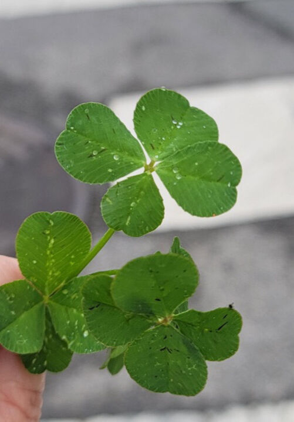
17:21 엄마가 보내주셨어🍀
20:38 Asmr 하구싶다
20:38 요즘 나 asmr 들으면서 자
20:38 지선이꺼
20:39 바로 골아 떨어지던데
20:42 지선이한테 나무에 물도 부어달라구 부탁했어
20:43 지선이꺼 들으면 결말을 항상 못본다구??
20:43 맞아
20:43 잠들어서..
20:46 나는 항상 내가 예민하지 않은 사람이라고 생각했는데
20:46 청각 후각 미각이 진짜 예민해
20:47 좋은 소리 들으면 또 듣고싶고
20:47 좋은 냄새 맡으면 또 맡고싶고
20:47 맛있는 거 먹으면 또 먹고싶어
20:48 귀여운 거 보면 또 보고싶고
20:49 슬라임 만지는 거 좋아하고
20:49 뭐야 나 다 예민하네
20:50 플로버도 자꾸 보고싶어
20:50 이건 뭐야
20:51 우아.. 예민이라는 말보다 섬세하다는 말로 대신 표현하는 거 괜찮다
20:51 조금 더 긍정적인 말 표현이다
20:52 하나 배워갑니다
20:52 그럼 더워서 막 불쾌지수 올라오면 섬세해지나?
20:52 미안미안
20:52 장난장난
20:53 와.. 지금 너무 섬세해 더워 진짜
20:53 이런식으러 쓰는거지
20:54 어우 너무 매워!! 내 혀 지금 너무 섬세해!!
20:56 냐어
20:56 그나저나 밥응 먹었어??
20:58 Media missing weverse__20241201152410.mp4
20:58 나는 짬뽕순두부 먹었어
20:59 무슨 소리인지 맞추기?
21:00 Media missing weverse__20241201152411.mp4
21:00 이건 진짜 절대 못 맞춘다
21:00 헐.. 마이크 한 명 맞췄어
21:01 Media missing weverse__20241201152412.mp4
21:02 요고는 쉽다
21:02 정답 빗
21:03 Media missing weverse__20241201152413.mp4
21:03 이건 절대 못 맞춘다
21:03 와
21:03 안경집 정답
21:03 와.. 천재야?
21:05 Media missing weverse__20241201152414.mp4
21:05 난이도 ⭐️⭐️⭐️⭐️⭐️
21:05 와… 헤어롤.. 정답
21:06 뭐야..
21:06 ??
21:06 와 진짜 아니
21:06 무슨 일이야??
21:07 Media missing weverse__20241201152415.mp4
21:07 난이도 ⭐️
21:08 키보드 정답
21:09 Media missing weverse__20241201152416.mp4
21:10 물컵 흔들다 폰에 쏟음
21:12 Media missing weverse__20241201152417.mp4
21:12 난이도 ⭐️⭐️
21:12 책 정답
21:14 Media missing weverse__20241201152418.mp4
21:14 이건 내가 뭐 따라한지 맞춰바
21:14 아이메세지 정답 ㅋㅋㅋㅋ
21:15 ㅋㅋㅋㅋㅋㅋㅋ
21:16 됐다~~ 오늘 여기까지 놀자
21:16 그럼 이만 작업하러 가보겠습니다아
21:18 내 행복아
21:18 다녀올게🍀
Mon, Apr 22, 2024
12:11 flover시
Tue, Apr 23, 2024
00:11 flover시
02:11 flover시
08:58 좋은 하루 보내 flover🩵
12:11 flover시
14:11 flover시
16:33 flover시
16:34 오늘 공유 많이한다🤓🤓
16:34 오늘 내 생각 좀 많이 해주시나??
Wed, Apr 24, 2024
00:11 flover시
15:31 뭐해요
15:31 밥응 먹었어요?
15:31 나는 아직 안 먹었어
15:31 뭐 먹을까?
15:32 맞아 오늘 날씨 조금 쌀쌀한 느낌이야
15:33 새우버거 먹고싶다
16:21 갑각류 알러지여도 칵테일 새우는 알러지 반응이 안 와
16:24 엄청 작은 볶음밥에 들어가는 익은 칵테일 새우만 가능해
16:25 그래도 안 먹어
16:25 나에게 허락한 유일한 새우는
16:25 새우버거🍔
16:26 뇽.. 새우깡도 너무 좋아하는데
16:26 새우에 관한 노래를 써보라구?
16:27 갑각류 알레르기가 생긴지 얼마 안 됐을 때의 나의 감정으로 쓰면 꽤 슬플 듯 좋아하는데 만날 수 없는 느낌으로
16:30 만날 수 없어 만나고 싶은데 그런 슬픈 기분인걸
16:31 말할 수 없어 말하고 싶은데 속마음만 들키는 걸
16:31 이 가사 어때?
16:32 괜찮지
16:32 누구나 따라부를 수 있을 것 같지 않아?
16:34 잠만
16:34 멍때리다 늦었다
16:34 333…
16:34 진짜 바보
16:34 몽총이
16:35 ㅋㅋㅋㅋㅋㅋㅋ
16:35 flover 밖에 모르는 바부
16:47 배드민턴 치자고 꼬셔~
16:48 커피 한 잔 하자고 꼬셔~
16:48 불러~
16:49 꽃송이가~
16:49 flover가~
16:49 그래그래
16:49 피었구나~
16:51 좋아좋아
16:51 하모니카 솔로~
16:52 또 무슨노래 부를까?
16:52 부르고 싶은 노래 한 소절 해바
16:52 뒤에 이어부를게
16:53 잠깐 밖으로 나올래?
16:53 니가 보고싶다고
16:56 숨겨왔던 헤매임의 끝~
16:57 함께 써냐려가자
16:58 너와의 추억들로 가득채울래
16:58 ~
16:58 파란을 이르켜~
16:59 네 놈을 이겨 눈물 콧물 쏙 다 빼주마~
17:01 언제나 ~ 즐거워 ~개구쟁이 플로버~
17:01 내가 디엠 보낼때마다 흥얼거리는 사람?
17:03 보고싶어 flover
17:03 어쩜 매일 이렇게 보구시프냐
Thu, Apr 25, 2024
00:09
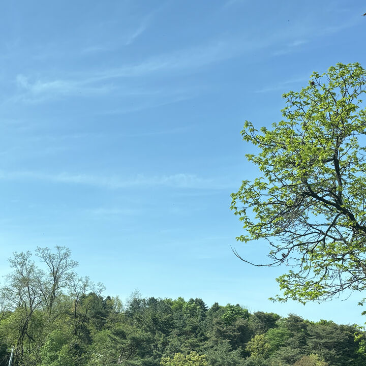
00:10 하늘공유
00:11 flover시
02:11 flover시
Fri, Apr 26, 2024
00:11 flover시
07:51 flover 좋은 하루 보내🩵
07:55
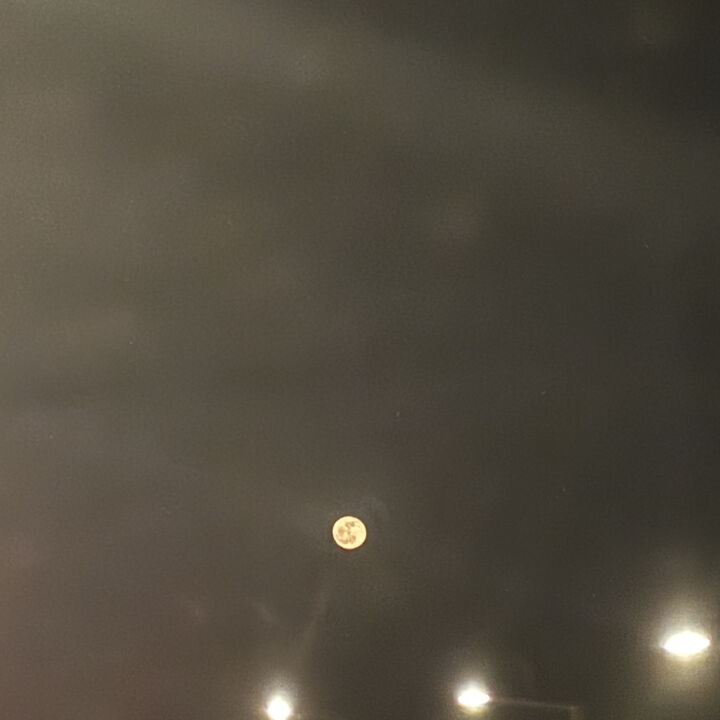
07:56 어제 숙소 돌아오는 길에 찍은 달🌕
09:53 배고푸다아
13:57

13:57 오랜만에 셀카 찍었어
14:11 flover시
16:33 flover시
Sat, Apr 27, 2024
00:11 flover시
19:13
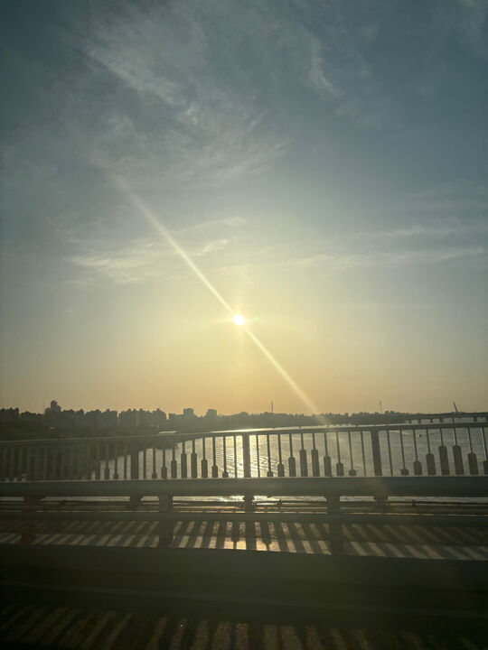
19:13 너 생각나서
19:14 flover가 좋아할 것 같아서
19:14 찍었어
22:57 라이부?
22:57 할까?
22:58 그럼 잠깐만!! 킬게!!
23:11 잠깐이지만 넘 잼썼다아
23:11 배가 너무 고파서
23:11 다음에 배불리 먹구 또 하자
Sun, Apr 28, 2024
00:11 flover시
Mon, Apr 29, 2024
00:11 flover시
10:46
10:46 모쨍긴 강아디
10:46 한입에 쏙
10:49 flover 월요팅!!!🩵
10:50 Media missing weverse__20241201152436.mp4
10:53 Media missing weverse__20241201152437.mp4
10:54
10:54 짠 선물
10:55 중학교 다닐 때
10:57 단발
10:57 어울리나요??
11:01 냐아
18:56 냐..
18:56 뇨오…?
18:56 묭
18:58
18:59 선물🎁
Tue, Apr 30, 2024
00:11 flover시
16:36 뭐하구 있어
16:37 밥은 챙겨 먹었어?
16:38 난 오늘 뭐 먹을까??
16:38 메뉴 정하기 어려울 때 항상 묵참주문하는데
16:38 고치돈 먹을까?
16:39 그래 오랜만에 고치돈 먹자
16:40 모쨍긴 강아지 어감이 너무 귀엽지
16:40 모쨍기니
16:41 맘에드는 애칭이야
16:42 천재강아지 똑순이 모쨍기니
16:42 아 맞아 허니로그
16:43 진짜 너무 잘 만들었어
16:43 미리 멤버들 공유해서 봤는데
16:43 단톡방에서 진짜 편집 너무 잘했다고
16:44 너무 잘찍었다고 말이 많이 나왔어
16:45 진짜 연습하구 뭐 하면서 우리 막댕이가 열심히 시간 쪼개서 찍어주고 그랬더니 너무 좋은 영상물이 나와서 감동이었어
16:45 울 막딩이가 날 장충으로 다시 보냈어
16:47 또 재밌는 모든 일들 플로버랑 같이 하고싶다
16:48 같이 하자!!!!
16:48 ❤️❤️
16:49 (가슴팍을치며) 플로버는 항상 여기 있다구😤
16:51 내 천재강아지flover야
16:51 밥 잘 챙겨먹구
16:52 아냐 모쨍긴 강아지는 로아만 할 수 있어
16:53 똥깡아지천재깡아지이쁜내시끼flover
16:54 나는 이제 가볼게요오🥰
22:08
Wed, May 1, 2024
00:11 flover시
14:51
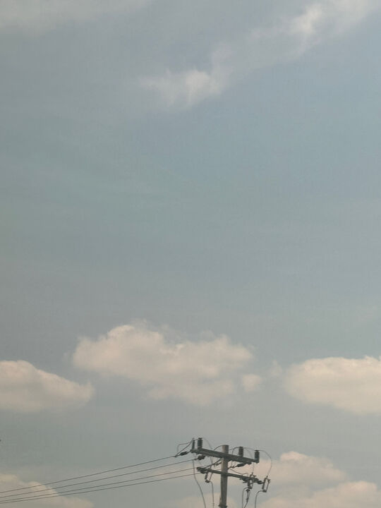
14:51 하늘공유
Thu, May 2, 2024
00:11 flover시
04:33 flover시
04:38

04:38 똥고양이
04:39
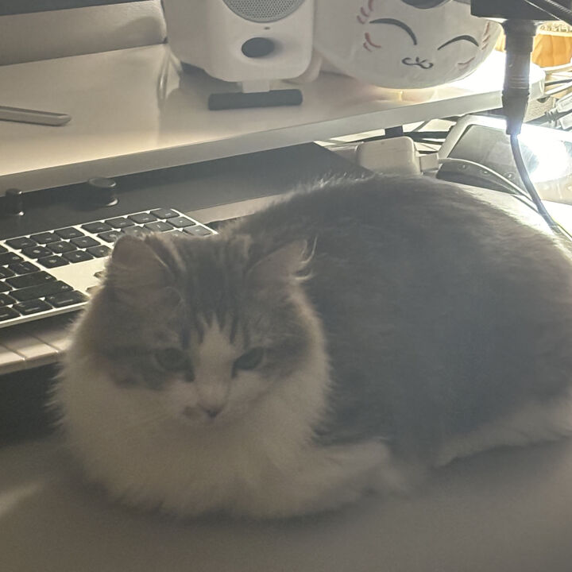
04:40 똥고양이
04:40 문 닫아 놓으면 항상 문 열어달라고 울어
04:40 아침밥은 토스트
04:41 아로가 식빵굽는중이라
04:42
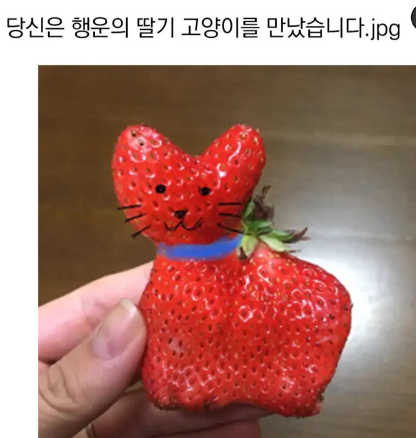
04:42 이거 너무 귀엽지
04:43 진짜 바로 저장 눌렀잖아
04:45 어.. 잠만 나 꿈에서
04:45 디엠 하는데 flover 음성 메시지도 들을 수 있는 꿈 꿨어
04:45 꿈이네
04:46 진짜 신기하다
04:47 그래서 오 업데이트 됐나부다
04:47 하고 너무 좋았어 ㅋㅋㅋ
04:47 그럼 맨날 많이 좋아한다구 보내준다구??
04:47 천사강아지야?
04:48 감동인데..
04:49 플로버 어서 좀 더 자!!!!
04:50 일어나면 연락줘어
04:51 어 5월 인사가 늦었네
04:51 5월도 잘 부탁해 flover🩵
04:52 💙
04:52 💚
04:52 🩶
04:53 💜
04:54 일어나면 연락주셔~~!!!!
06:56 flover시
11:11
11:11 선물🎁
11:13 오늘 날씨가 선물같아
11:13
11:13 요고는 덤
11:15 좋은 하루 보내 flover
12:11 flover시
21:26
Fri, May 3, 2024
00:11 flover시
Sat, May 4, 2024
00:11 flover시
15:19 오늘 날씨 엄청 덥다!!
15:19 벌써 여름이 온 것 같아
15:19 오늘 플로봉 색??
15:19 뭐가 좋을까??
15:20 그린 아니면 블루??
15:21 오늘 그린이 잘 보일 것 같아??
15:22 드레스코드가 핑크면 블루랑 더 잘 어울리려나?
15:22 블루로
15:22 flover시
19:47 오늘 무대 잘 봤어??
19:50 고마워어어🩵🥰🥰
19:53 밥은
19:53 먹었어??
19:54 나는 꼬랑 묵으려구
19:57
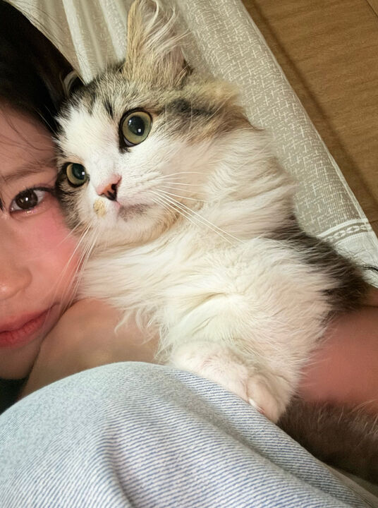
19:58 똥고양이랑 한 컷
Sun, May 5, 2024
00:12 flover시
00:12 냥
00:12
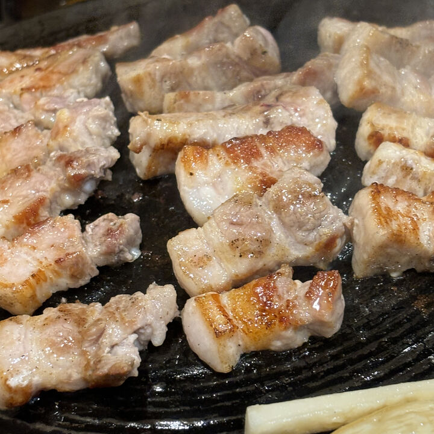
00:12 난 고기먹구있어
15:38
15:38 어린이 날🥰
15:39
15:39
15:40
15:41
15:42

15:42 이 사진 뭔가 지금 나같아
15:43 뭐가 제일 이뻐??
15:44 귀엽지
15:45 ㅋㅋㅋㅋ
19:03 보고싶다아
19:07 오늘 비가 많이 온다아
19:08 빗소리 너무 좋아
19:10 챙이가 나 따라한 거 너무 귀여워
19:10 사랑스러워 ㅋㅋㅋ
Tue, May 7, 2024
00:11 flover시
14:11 flover시
18:54
18:54 갑자기 날씨가 추워졌지
18:54 내 생각 하라꾸우
18:55 flover시
19:02 보고싶다아
Thu, May 9, 2024
00:11 flover시
02:11 flover시
21:03 보고싶다아
21:33
21:33 방금 찍었다아
23:06
23:06 자~~ 셀카
23:30 오늘 너무 행복했다
Fri, May 10, 2024
00:11 flover시
00:19
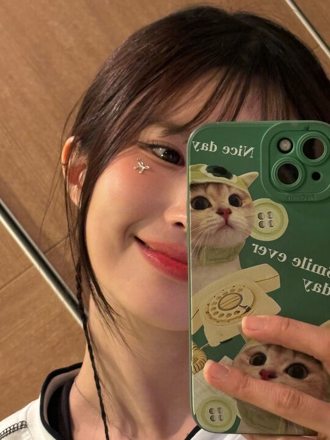
00:19 오늘 리본달았어 볼에
00:23

00:23 몇 개 더 찍었어
Sat, May 11, 2024
00:11 flover시
03:22 flover시
03:25 고마워어🩵
08:51 조심히 다녀올게❤️❤️
08:51 안뇽!!!✈️
08:55
08:56 이제 비행기모드한다아💙
08:56 에플모
13:11 시간공유
13:11 필리핀에서 시간공유
13:14 진짜아 덥다!!
13:15 여름이야!!
13:15 조금 더 먼저 여름 맛보기
13:16 후드집업을 챙겼어
13:16 비행기에서 나름 따듯했어
13:18 비행기에서 냐옹님 옆에 앉았어
13:18 누구겡
13:18 하롬
13:19 캘롤로는 박강아지랑 같이 갔어
13:20 내가 이렇게 부르니까 어렵지 누군지
13:21 켈롤로는 고양이 있어
13:22 박강아지는 푸들 아니면 시 바견?? 그런 느낌
13:23 진돗개
13:24 밥은 먹었어??
13:25 냥 밥 챙겨먹어라!!!
20:05
20:07 Media missing weverse__20241201152519.mp4
Sun, May 12, 2024
01:10 플로버어
01:11
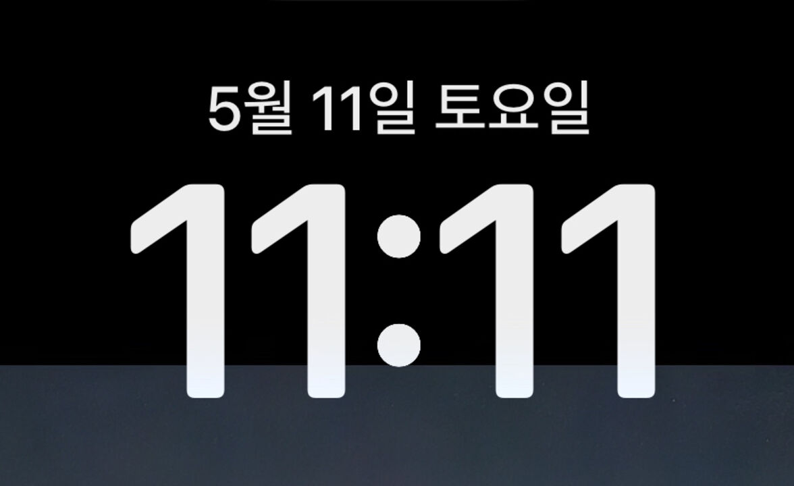
01:11 마쟈
01:11 시간공유
01:13
01:13 오늘 셀카가 이거뿐이야아
01:14 오늘 디엠 휘슬라이브 한 거 들렸어??
01:14 헤헤..
01:14 흐흐흐
01:15 오늘 모니터가 잘 안돼서 한 쪽 귀 막고 라이부 했어
01:16 자꾸만 좋아해주니까…
01:16 더 잘해야 할 것 같다
01:16 그리구 오늘 양갈래 어땠어??
01:18 냐아아
01:18 칭찬해주셔서 감사합니다
01:18 열심히하겠습니다
01:18 덕분입니다
01:18 💕💕
01:19 Media missing weverse__20241201152523.mp4
01:19 그냥 부르고 싶었더
01:19 기분 좋아서
01:20 아까 라이브 할 때 포도 너무 억지로 먹여서 미안해
01:20 모니터 해보니까 체하겠더라구
01:21 여기 과일 진짜 맛있어
01:23 그리구 진짜 많이 느끼는 건데
01:23 나라마다 하늘 느낌이 진짜 달라
01:23 여기 하늘 진짜 예뻐
01:23 눈에 많이 담아가려구
01:26 오늘 너무 재밌었어
01:27 행복했다가 조금 더 잘 어울리려나
01:27 진짜 행복했어💕
11:53 Media missing weverse__20241201152524.mp4
13:11 냥
13:11 몇시냥
14:21 이제 비행기 타구 간다!!
14:21 에플모합니다
14:22
14:22 선물하나 보내꾸우
14:23 다음에는 일주일정도 넉넉하게 필리핀 여행 꼭 와야지!!💕
14:23 행복한 시간이었습니다아
14:24 이제 진짜 에플모!!!!
18:56 냥
18:56 다녀왔습니다아
20:24 Media missing weverse__20241201152526.mp4
20:26
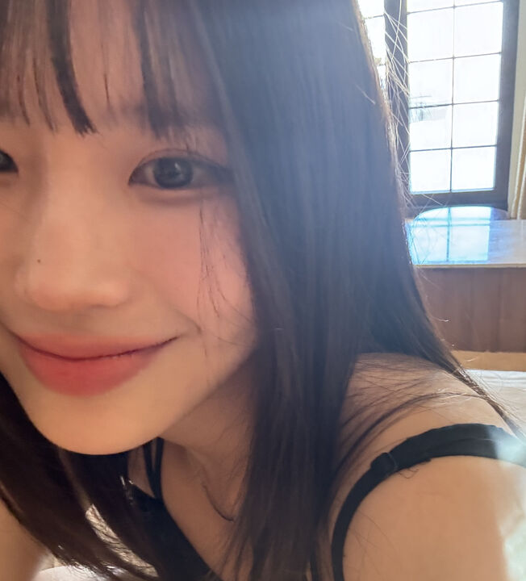
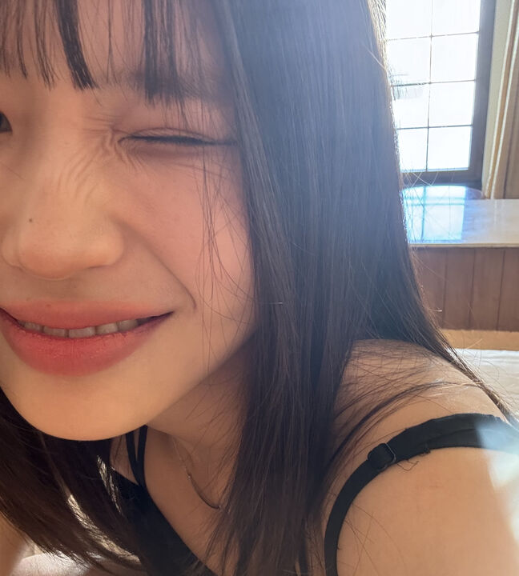
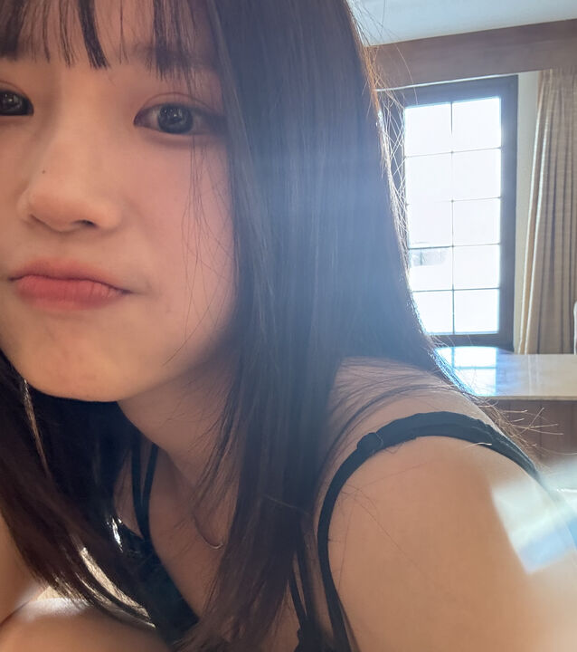
20:27 Media missing weverse__20241201152536.mp4
20:27 flover 보여주려구우 찍었자나
20:32 Media missing weverse__20241201152537.mp4
20:32 벨런스게임하자아
20:33 오 그냥 한 오분만 보이스 킬까??
20:37 준비됐어??
20:38 좋아
21:59 마라탕 맛있었다
22:01 꿔바로우 먹는 소리 맞춰서 너무 웃겼어!!!
22:02 신기해 진짜!!!!
Mon, May 13, 2024
00:11 flover시
Tue, May 14, 2024
00:11 flover시
23:39 보구싶
23:39 고냥아
23:39 강아디
23:40 그래도 나 사랑하지 코노에서 100점 받았다궁?
23:40 완조니 천재강아지
Wed, May 15, 2024
00:11 flover시
02:40
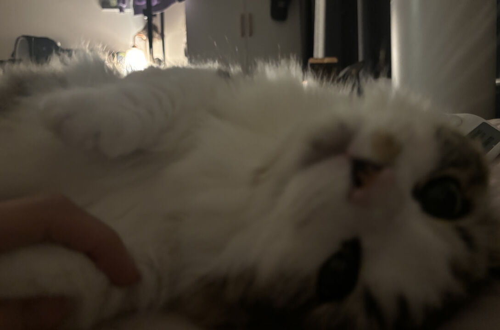
02:41
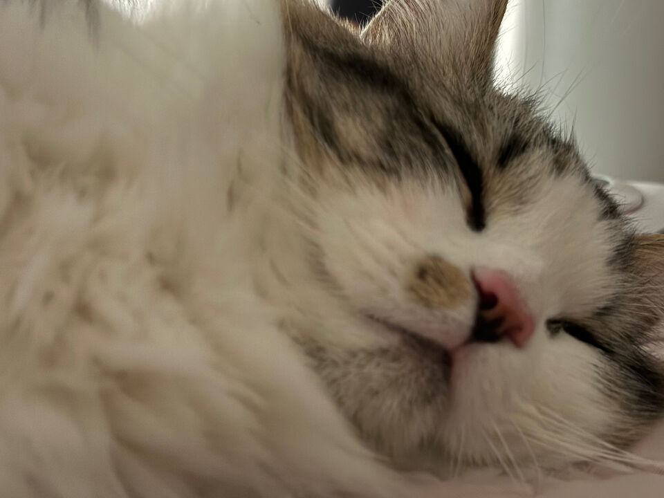
02:41 잠들었다
03:22 flover시
12:11 flover시
14:11 flover시
Thu, May 16, 2024
14:11 flover시
14:11 밥 맛있눈 걸루 챙겨 먹어어ㅓ
16:33 flover시
23:12 머하구 있어
23:14 밥 먹구 싶은데 간단하게 뭘 먹어야 할까!!
23:25 가볍게 삼겹살??
23:25 ㅋㅋㅋㅋ
23:25 좋은데??
23:26 그럼 정말 숙소가서 그냥 꼬기 무까
Fri, May 17, 2024
00:11 flover시
00:12 냐아 배가 넘 고파아
02:11 flover시
02:12 나 진짜 삼겹살 먹었어 헤헤
17:20 뭐하구 있나아
17:20 라이브 기다리구 이써?!!!?
17:20 무슨 라이뷰~~???!
17:21 뇽???!!
17:21 ㅋㅋㅋㅋㅋ
17:22 한번도 안해봐찌 라이부
17:22 기대된다
17:23 아!! 라이브 시간은 모르는거야??
17:23 얄루
17:24 우선 편하게 일하구 있어바바
17:26 그래두 조금 긴장하면서 알람 딱 키구
17:26 알게찌
17:28 밥 정도는 편하게 먹어두 될 것 같은데에
17:28 이정도면 딱 괜찮았다
17:28 맞지 힌트
17:29 ㅋㅋㅋㅋㅋ 꼭꼭 십어먹어!!!!!
18:26 Media missing weverse__20241201152541.mp4
18:28 Media missing weverse__20241201152542.mp4
18:29 무슨버거야
18:30 아무도 못 맞추네
18:30 밥버거 정답
18:30 오늘 조금 어려웠지
18:31
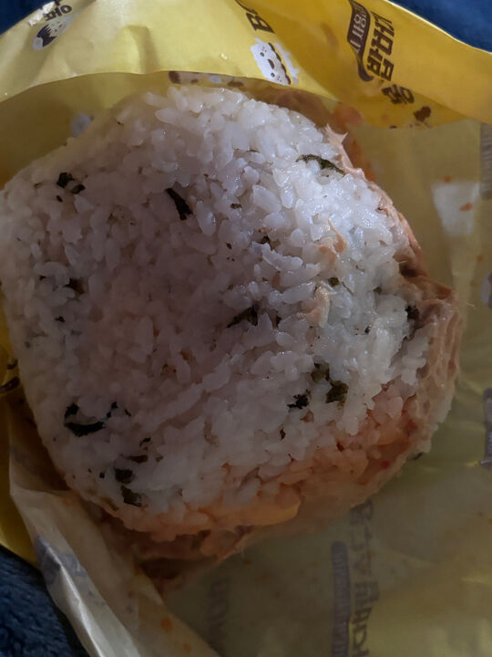
18:32 냥
18:32 맛 없을 수 없는 조합
18:36 나는 무조건 햄치즈
18:56 뇽
19:59 냥
21:04 내 힌트 어땠어!!!
21:06 오늘 너무 재밌었다아
21:06 단라는 진짜 재밌는 것 같아아
21:07 박목수씨가 소중해진 오늘
23:20 오늘도 너무 행복한 하루였다아
23:21 오늘 내가 물고기 스포했어!!
23:22 아 오늘 셀카 없더어……
23:27
23:28 방금 찍었어
23:28 반쪽만
23:32
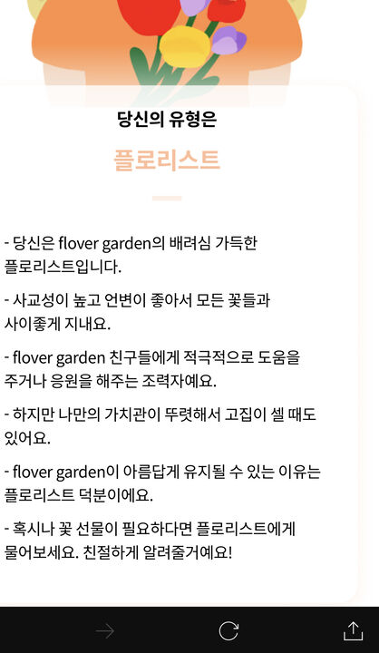
23:34 갑자기 떡볶이 먹구싶다
23:52 주문해버려따…!!!
23:54 떡볶이 사진 보내면 엄청 먹고싶어질텐데??
23:54 나 앨범보다가 떡볶이 사진 있길래..
23:54 어.. 이거다 했어
Sat, May 18, 2024
00:11 flover시
01:31
01:31 맛있게 잘 묵었다❤️
01:32 Media missing weverse__20241201152549.mp4
01:34 엽기떡볶이 줄임말은 엽떡 엽기오뎅 줄임말은 뭐냐구??
01:34 기뎅
01:34 왱?
01:35 Media missing weverse__20241201152550.mp4
01:35 ㅋㅋㅋㅋㅋㅋㅋㅋ
01:36 Media missing weverse__20241201152551.mp4
01:36 플로버가 제일 어감이 좋아
01:36 달달해
01:41 Media missing weverse__20241201152552.mp4
01:41 플로버 이거 들어바
01:41 나 이거 해보고시퍼써
01:42 방금 써서 해봤는데
01:42 어렵다 이거
01:42 이거 원테이크야
01:43 도라에몽 잘했어??
01:49
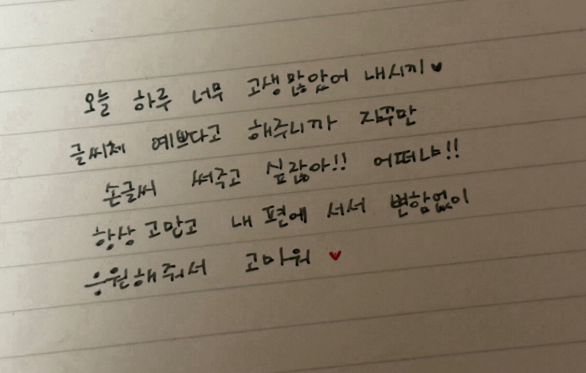
01:49 글씨체 예쁘다는 말에 써주고 싶었어
01:51 사실 내 글씨체가 막 예쁜 편은 아닌데
또 flover가 예쁘다고 해주면 나도 자연스럽게 내 글씨체를 좋아하고 예쁘게 생각하게 되눈 것 같아
01:59 뇽
01:59 진짜아 오늘 하루 고생했어
02:00 아 귀여워
02:00 내가 뇽 하니까
02:00 냥 한거야?
02:00 귀엽더 ㅌㅋㅋ
02:00 뇽
02:01 너꺼 읽고 이써
02:02 내가 어떤 영상을 봤는데 다음에 일본플로버한테 공룡 발음 부탁드리고 듣고싶어………. 엄청 귀여울 것 같아
02:03 상상만해도 귀여워 어떠케..
02:04 Media missing weverse__20241201152555.mp4
02:05 일본어 つ(츠) 발음이 진짜 어려운데
02:05 그런 느낌이겠지??
02:05 츠 발음 진짜 연습 많이 했는데
02:06 Media missing weverse__20241201152556.mp4
02:08 Media missing weverse__20241201152557.mp4
02:08 오늘은 달이 이뿌네요
02:09 나 멋있게 말했어??
02:09 뭔가 잘해보이고 싶었나
02:09 ㅋㅋㅋㅋㅋㅋㅋ
02:10 나도 오늘 달 보고 flover 생각났는데
02:11 flover시
02:12 진짜!!! 이제 씻으러 가야겠다
02:13 오늘도 너무 재밌었다🤍
02:13 잘 자 🌙flover
14:12 뇽
16:44 오늘 날씨 너무 좋다아
16:47 오늘 아침 점심은 된찌 먹었는데 진짜 든든해
16:49 아점!!!
16:53 Media missing weverse__20241201152558.mp4
16:55 Media missing weverse__20241201152559.mp4
16:56 그런가봐
16:56 날씨가 날 나른하게 만들었어
16:57 아이스티 마셨다아!!
16:57 아샷추로 마실껄!!
17:04 어 노래 부르고 있는데
17:05 차에 누가 타서 민망한 상황 알아??
17:05 냥
17:08 Media missing weverse__20241201152601.mp4
17:08 이 노래 아는 사람
17:09 좋아하나봐 라는 곡이야
17:10 갑자기 생각났어 나른해서
17:11 이 곡 음원은 없는걸로!! 알아
17:11 샘김님!! 노래
17:12 라이브 클립으로 들어야 해
17:12 뭔가 지금 날씨랑 어울린다
17:13 들어봐아
17:16 ✈️
17:17 여행가고싶다~~
17:17 어디든 좋아
17:18 우유니소금사막!!!
17:19 소금빵 맛있겠다
17:19 의식의 흐름 ㅋㅋㅋ
17:19 내시끼
17:19 오늘 하루 마저 잘 보내구 있어🤍
17:20 아꾸이뽀
17:20 응원봉색은 💚할까??
17:21 좋아아💚
17:21 미안 정없었지
17:21 플로봉으로 정정
17:22 ㅋㅋㅋㅋㅋ
17:22 픙로봉💚
17:22 가쟈아
19:05
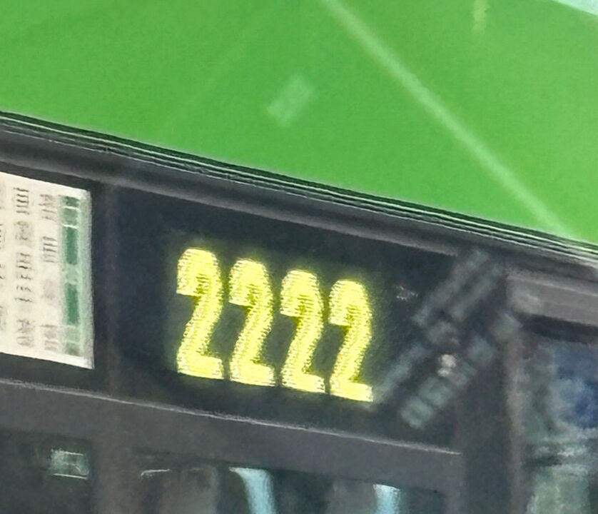
19:05 행운의 버스다!!!
19:06 못참지!!!
19:06 담에 꼭 타봐야지!!!
20:59 초록 플로봉 진짜 너무 예뻤어..
20:59 오늘 라이브 잘했어??
21:01 축제나 행사 항상 인이어 안차다가 오늘 인이어 찼는데 음향이 너무 좋은거야
21:01 기분이 너무 좋았어..
21:01 에플모 스포였어
23:26
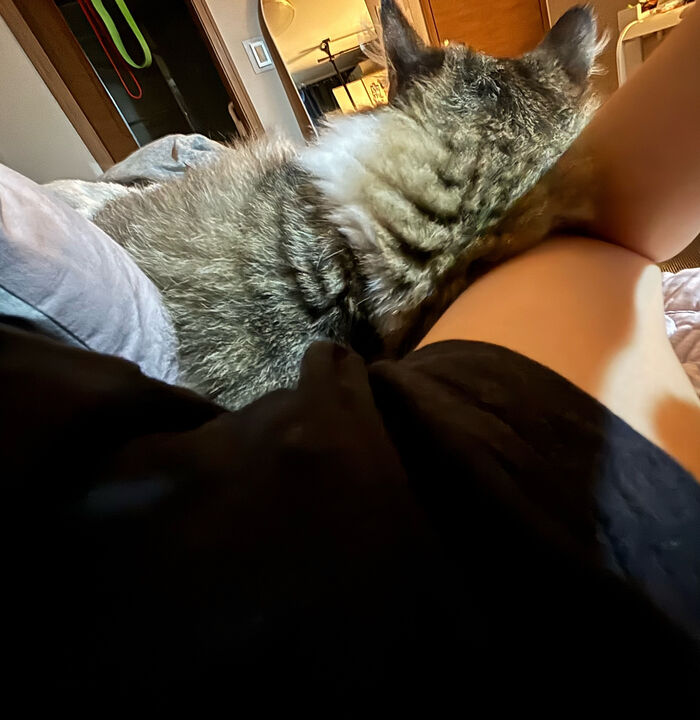
23:26 팔저리다
23:37
23:38 제발 누가 날 씻으러 보내줘
23:39 나 잠깐 잠들었어
23:39 간다 진짜
23:55 진짜 간대
23:55 다
23:56 😽😽
Sun, May 19, 2024
00:11 flover시
02:11 flover시
Mon, May 20, 2024
00:11 flover시
19:48 플로버어
19:48 뭐하구 있어??
19:48
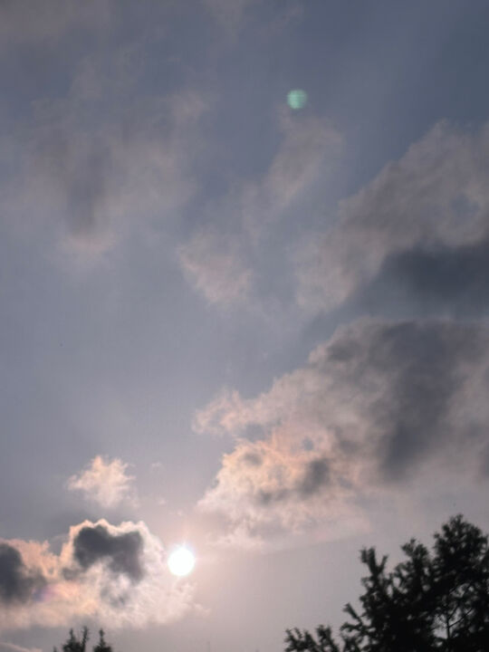
19:48 오늘 하늘 진짜 예쁘다
19:48 플로버 닮았어
19:49 오늘 라디오 없다아!!
19:52 저녁 토스트 먹으려구우
19:54
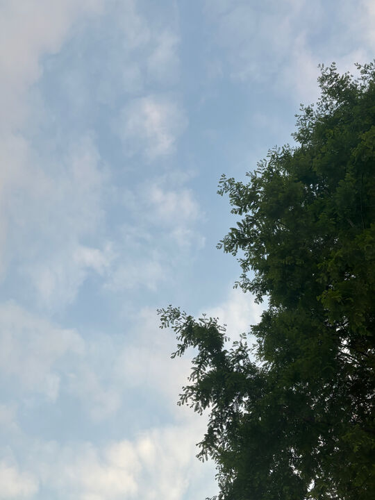
19:55 하늘이 너무 예뻐!!
Tue, May 21, 2024
00:12 냥
00:13 Media missing weverse__20241201152609.mp4
00:16 Media missing weverse__20241201152610.mp4
00:17 오늘 날씨 좋지!!
00:18 내일은 엄청 덥다구??
00:19 28도까지??
00:20 그럼 내일은 가볍게 입어야겠다
00:20 물도 잘 챙기구
00:20 그런데 날씨가 더울수록 실내는 추워
00:21 내일 플로봉은 핑크색 어때??
00:21 얄루
00:22 예쁠 것 같아..
00:22 💕💕💕
00:22 ㅋㅋㅋㅋ왈루왈루!!
00:23 Media missing weverse__20241201152611.mp4
00:23 개인기
00:23 왈루강아지
00:25 ㅋㅋㅋㅋㅋㅋㅋ 반응이 좋아서 뿌듯한데??
00:25 Media missing weverse__20241201152612.mp4
00:25 나갈래 고양이
00:27 Media missing weverse__20241201152613.mp4
00:27 오징어사와 고양이
00:29 웃어줘서 기분이 좋다..
00:29 기부니가
00:29 좋아욥!!
00:31 Media missing weverse__20241201152614.mp4
00:31 뽈링뽈링
00:31 완존 웃으면서 불러야함
00:34 Media missing weverse__20241201152615.mp4
00:34 요즘 이 노래에 빠졌어
00:36 가사가 진짜 좋아
00:38 아이유 - love wins all
00:38 이 노래야!!
00:38 내가 좋아하는 사람이 부르니까 더 좋아
00:40 아 보고싶어
00:40 flover
00:41 내가 방금 셀카 찍었는데
00:42
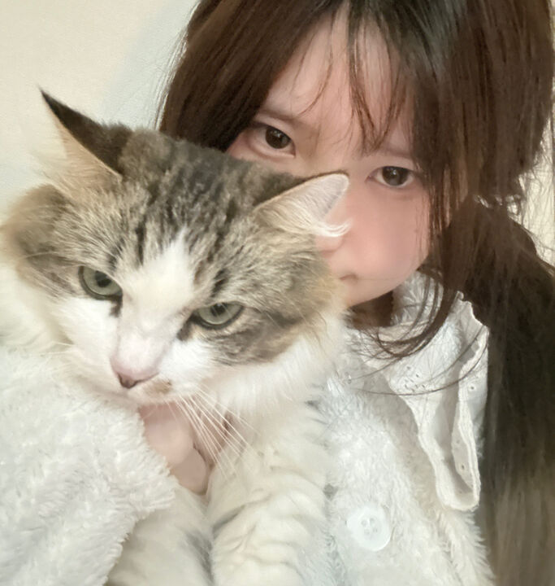
00:42 ㅋㅋㅋㅋㅋ 아로 표정 따라하기
00:42 ㅋㅋㅋ
00:42 ㅋㅋㅋㅋㅋㅋㅋ 웃기지
00:45 아로 공격력 0%라서 너무 귀여워
00:48 Media missing weverse__20241201152618.mp4
00:48 아주 고로롱밖에 못하는 바보 고냥이
00:50 귀엽지이
00:52 Media missing weverse__20241201152619.mp4
00:53 아로한테 꼬순내 나냐궁?
00:54 난 아로랑 간장계란밥 먹을 때 참기름 안 넣어
00:54 밥 한 입 먹고 아로 냄새 맡고 한 입 먹고 냄새 맡으면
00:54 고냥 잘 어우러져서
00:55 이게 다 플로버가 알려준 주접이지
00:56 나 주접 좋아하자나아아
00:57 😛😛
00:57 로아는 오늘 목욕해서 뽀둥이야
00:57 목욕강아지라서 완전 뽀둥이
00:58 숙소왔더니 로아한테 목욕냄새나서
00:58 꼬한테 물어보니까 오늘 목욕강아지래
00:59 Media missing weverse__20241201152620.mp4
00:59 이렇게 불러줘야 해!!
01:00 애들 너무 귀여워 휴지도.. 너무 귀여워
01:01 동물들 가만히 보고 있으면 기분 진짜 좋다
01:01 이뻐 진짜
01:01 휴지는 진짜 작아 소중해
01:03 flover
01:03 이제 저는 슬슬 잘 준비 하러 가볼게요오
01:03 놀아줘서 고마워🩵
01:03 많이 많이 좋아해
01:04 🌙🌙
14:11 flover시
14:19
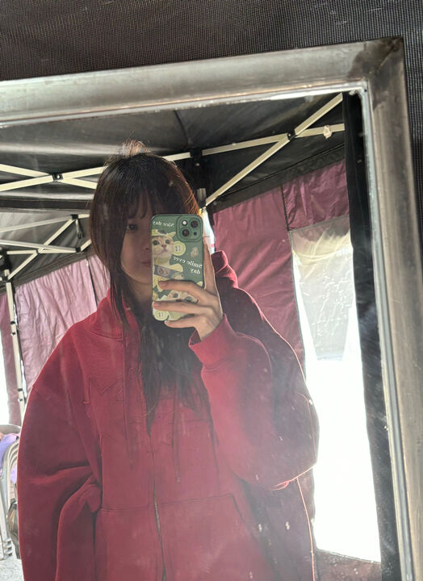
14:20 혹시 몰라서 후드 챙겼는데
14:20 몰라도 됐을 것 같은 날씨야아
14:21 뇽
15:22 flover시
15:47
18:55 flover시
19:21 오늘 많이 더우니까 물 꼭 챙겨 먹자아!!!
19:21 🥰
19:22 오늘 무대 잘할게!!!
19:22 응원 잘 부탁드리겠습니다🙏🙏🙏
19:23 💕💕💕
22:00 💕💕
22:01
22:02 흐흐
22:03 조심히 가아💕
22:03 고마워 flover
22:32 셀카 폭탄으로 찍었어
22:32 뱅금
22:32 보여주까??
22:35
22:36 자
22:36 짜잔
23:14 별스타에 사진 편집해서 올렸어
23:14 흐흐
23:15
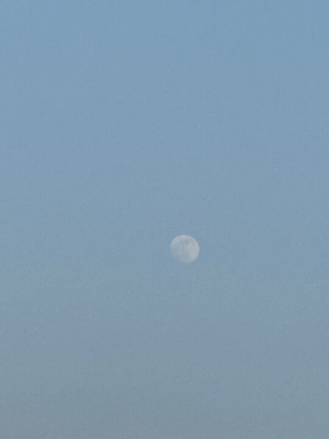
23:15 아까 해 떠 있는데 달도 같이 떠있어서 찍었어
23:16 하얀 달🌙
23:17 날이 어두워질수록 점점 달이 밝아지는 게 신기했어
23:17 요즘 빨간 후드 자주 입지
23:17 일교차 때문에 요즘 항상 챙겨
23:19 조금만 더 더워지면 못 입으니까 많이 입어야지
Wed, May 22, 2024
00:11 flover시
01:23 우리나온다!!!
01:42 멤들이랑 같이 봤다
01:42 😛😛
Thu, May 23, 2024
02:11 flover시
14:11 flover시
15:01 나도 보고싶어
15:02 오늘 하늘 높아??
15:03 어제 어쩐지 달 예쁘더라
15:04 오늘 플로봉 노란색 어때??
15:07 💛
15:22 flover시
15:42
20:58 무대 너무 재밌다..
20:58 냐아🥰🥰🥰
21:12 달 진짜!!!
21:12 이뽀
23:09 오늘 너무 행복했다아!!
Fri, May 24, 2024
14:11 flover시
15:22 flover시
18:24
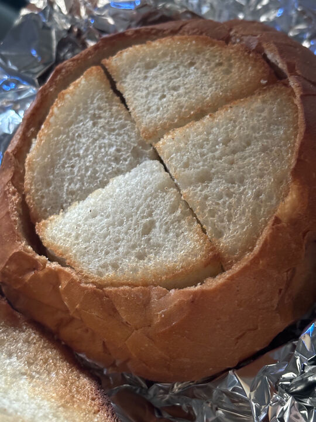
18:24 빠네!!
18:24 오랜만에 먹었는데 너무 맛있었어
18:26 flover 저녁 뭐 먹으려구
18:27 든든한걸루 먹어야지
18:28 김치찌개 이런 거 먹어
18:28 고기나
18:29 플로봉 색 라이브 하면서 말 했는뎁 무슨색이게
18:29 파랑💙
18:30 이쁘겠다
18:31 이따봐아💙
20:13 행복했다아
20:17 오늘 눈 아래??!
20:18
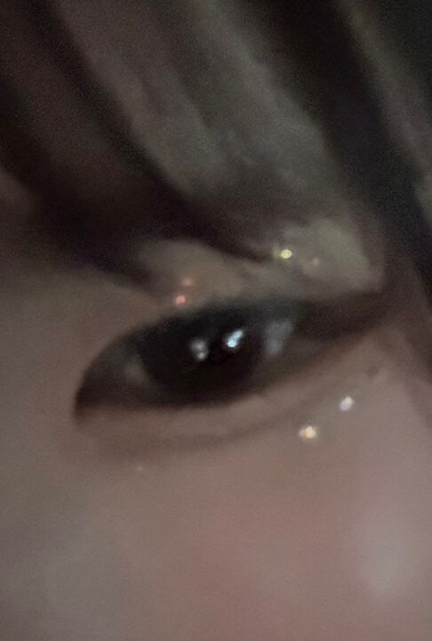
20:18 이거 붙였어
20:19 나 눈에 붙이는 거 좋아해
20:20 렌즈보다 파츠를 더 좋아해
20:22 예쁜 말 가득해줘서 고마워💕
23:46
23:46 선물
23:46 💙
23:52 나는 이제 레슨하러 간다아
23:52 레슨간다아아ㅏ
23:54 뭔가 과자 먹었는데 배가 차면서 고프다
23:55 지금 내가 가장 먹고싶은 음식은
23:55 !!!
23:55 그런데 아디다스 자켓 이뻐서 그런데 어디건지 알려쥬라는거 왜캐 웃기비???
23:56 ㅋㅋㅋㅋ
23:57 감자탕 먹구시퍼..!!
Sat, May 25, 2024
00:07 Media missing weverse__20241201152656.mp4
00:08 Media missing weverse__20241201152657.mp4
00:08 하루에 세번 목풀기!!!!
00:08 ㅋㅋㅋㅋㅋ
00:09 아부지 생신이셔서 그래도 나 사랑하지 불러드린 거 너무 예쁘다 마음
00:10 이뽀!!
00:11 flover시
00:11 Media missing weverse__20241201152658.mp4
00:12 사람들이 자꾸 무더바~~
00:13 Media missing weverse__20241201152700.mp4
00:14 나 이 친구 영상보고 살짝 울컥했다
00:14 가사가 너무너무 좋아서
00:15 뭐가 됐든 행복하면 됐지!!
00:16 이거 듣고 이 친구를 정말 행복한 사람으로 만들어주고 싶었어
00:17 맞아 플로버가 나한테도 이 말 많이해주잖아
00:19 냐아아
00:20 맞아 이거 플로버가 좋은 말 해주면 나오는 리액션
00:20 냐아아
00:20 마음이 사르르 녹는 그런 리액션이야
00:21 Media missing weverse__20241201152701.mp4
00:21 이런 느낌
00:21 나 이제 다녀올게💕💕
15:00

15:01 밥 잘 챙겨먹어
15:01 내시끼
17:27 뭐하구 있어
17:28 10000일 카페는 모야??
17:29 새롬언니 태어난지 10000일 됐어??
17:29 너무 귀엽다!!!
17:29 ㅋㅋㅋㅋㅋ 진짜 넘 귀엽다
17:30 난 11111일
17:30 챙겨야지
17:31 재밌겠다
17:32 28년 3월 1일이야?? 2월 29일이야??
17:33 헐.. 너무 특별해
17:33 2월 29일이 11111이라니
17:33 너무 특별해
17:34 그 날 진짜 다모여라..
17:34 잘해줄게
17:34 뭐할까??
17:35 벌써 설레
17:36 플로버 장기자랑하자
17:37 오 프나노래 랜덤플레이댄스 좋다
17:38 연습해놔야 해
17:38 알지
17:38 11111 기부도 좋다..
17:38 천재야?
17:40 상상만 해도 좋냐 왜
17:40 나도 달력에 적어놨어
17:42 그 날 약속 빼놓자
17:43 평일이라 저녁에 만나서 11:11까지 같이 있자
17:43 다 일 보구 만나자
17:44 이거 진짜 지켜지면 너무 낭만있겠다..
17:44 크
17:44 이미 봤어 시간
17:49 이제 아무생각말구
17:49 그 날 보자
17:50 밥응 챙겨 먹었어?
18:01 저녁 잘 챙겨먹어!! 내시끼
18:55 floverㅛㅣ
18:55 flover시
23:13
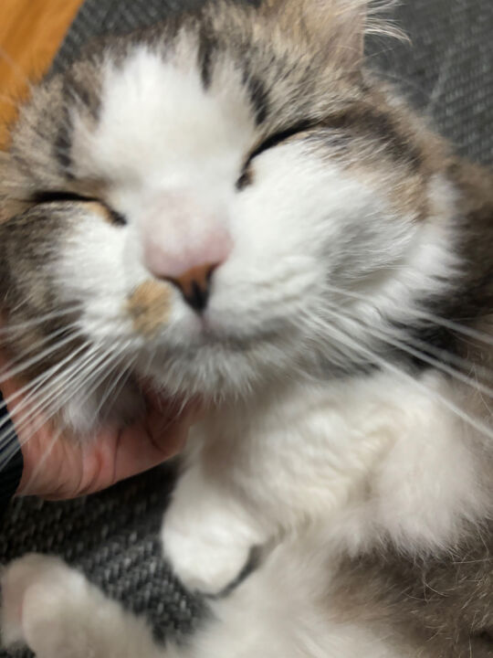
23:13 기분좋은 고냥이
Sun, May 26, 2024
00:11 flover 시
04:33 flover시
04:44 뭐하구 있는데에~~
04:44 너무 늦은 시간이지만 주말이니까..!!
04:44 flover💕💕
04:45 이렇게 늦은 시간에 이렇게 많이 안자구 있다니!!!!
04:45 뭔가 감격스러워..!!
04:45 젊음이다
04:46 오늘은 정말 감사한 날이야
04:47 길에서 사람들이 알아봐 주셨어
04:47 너무 좋아써..
04:47 냐앙..
04:48
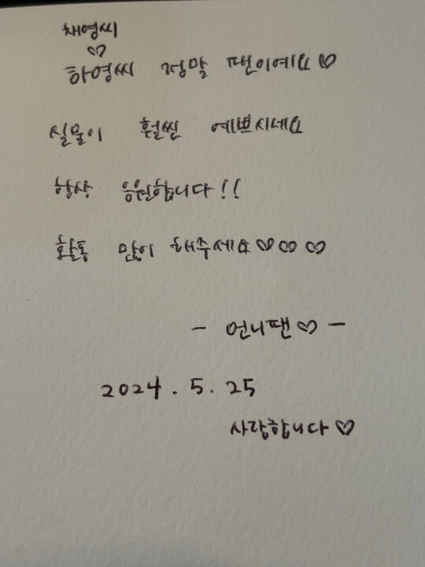
04:48 짠!!
04:49 언니팬!!!
04:49 내가 좋아하는 말까지..
04:50 언니팬분도 엄청 예쁘셨어
04:51 동생팬 보면 나는 엄청 귀여워 할 거 같아
04:52 연상팬 만나면 귀여움 받고싶고
04:52 동갑팬은 야~~~~ 모야모야 말놔말놔
04:54 공통적인 건 모두 다 너무 든든하다는 거
04:54 냐아아
04:55 나이가 뭐시 중혀
04:58 맞아 오랜만에 라디오 한다!!
04:58 설레
04:59 벌써 떨려
04:59 고릴라 온!!
04:59 핸드폰 체크!!!
04:59 조아써
04:59 안까먹어쒀!!!!
05:01 그런데 모하는데에
05:01 왜 아직까지 안자는데!!
05:02 나는 체력이 엄청 좋아서!!!
05:03 괜찮아
05:03 피곤함 잘 못 느껴
05:03 그러다 바로 자
05:03 그런데 하품도 많이 해
05:04 하품으로 피곤함 이기는 거 같아!!
05:13 냥
05:13 나는 이제 자려구우!!
05:14 flover도 하루 너무 고생많았어
05:15 너무 많이 많이 좋아합니다
05:16 잘자요🌙💕
Mon, May 27, 2024
00:12 냥.. 오랜만에 북마크 찾아서
00:13 그래도 늦지 않았다
00:14 머하구 있냐옹
00:15 오늘 많이 습해요오
00:17 오늘의 티엠아이 케이크 먹고 싶어서 케이크 사와서 묵었더
00:18 그런데 원래 슈크림? 같은 크림이었는데
00:19 생크림으로 바껴서 조금 아쉬웠어!!
00:19 그래도 맛있긴 했어
00:20 내가 제일 좋아하는 딸기 케이크였는데
00:20 그래도!! 맛있었어
19:35 Media missing weverse__20241201152706.mp4
19:38 오늘 저녁밥 부대찌개 어때?
19:39
19:39 오늘 하늘 예쁜 거 알아?
19:41
19:41 오늘의 나야
Tue, May 28, 2024
00:04 둑흔
00:04 라디오 들을 준비 하구 있지??
00:11 flover시
00:59 💕💕
01:21 드루따나따
02:04 오늘도 너무 행복했습니다아🩵
02:05 고마워 flover
02:05 편지도 너무너무 고마워!!!
02:05 행복한 마음으로 읽어야지!!!!
02:11 flover시
02:58

02:58 참..
02:58 너무 귀여워라
03:09 편지 읽는데 진짜진짜… 글씨체 너무 예뻐서 감동 받았어
03:43 다 읽었다아
03:44 너무 감동이구 생각도 많아진다!!
03:45 항상 상상이상으로 좋은 말을 많이 해줘서
03:46
03:46 여기서 귀여운 거 찾아봐
03:47
03:47 이빨..
03:47
03:47 왜캐 이쁘지
12:11 flover시
12:19 하늘 너무 예뻐!!
12:33
12:34 flover닮은 하늘
12:34 이뻐 정말
19:47 Media missing weverse__20241201152717.mp4
19:49 Media missing weverse__20241201152718.mp4
19:52 쀼
20:19 머야..
20:19 괜차나!!!
20:19 그럼 보이스로 킬까??
20:20 아니면 화질 낮게 켜볼까??
Wed, May 29, 2024
00:11 flover시
01:42
01:42 손님~
04:33 flover시
15:22 flover시
15:58 Media missing weverse__20241201152720.mp4
15:59 Media missing weverse__20241201152721.mp4
16:05
16:06
16:09 보고 싶어
16:10 내가 더 보고 싶어
16:11 점심은 뭐 먹었어?
16:12 다 너무 맛있겠다
16:13 나 지금 또 나른해
16:14 잠들 것 같아
16:14 하지만 참을 거야
16:20 참자고 하고
16:20 오분 잤어
16:20 방금
16:21 개운하다
16:21 좋아써
16:21 오분의 행복
17:05
17:06 뇽
18:41
18:41 이거 원본??
18:42
18:42 아니묜 이거 원본??
18:44
18:45 이제 레슨간다아
Thu, May 30, 2024
15:45 점심 뭐 먹었어??
15:46 오늘 플로봉 색 정해졌어??
15:46 무슨색이야??
15:46 흰색!!!
15:47 너무 좋아요
15:48 콩나물 국밥 먹구싶다
15:52 flover 나는 이제 준비하러 가볼게🤍
18:16 Media missing weverse__20241201152740.mp4
18:16 저번에 라이브 키기 전에 리허설로 키고 노래 연습 한 거 ㅋㅋㅋㅋㅋ
18:17 그래서 화질이 안 좋은데
18:17 음정 잘 맞아서 보내구 싶었어
18:17 10년 전 영상 같아!? ㅋㅌㅌㅋㅋㅋ
18:21 좋아해줘서 고마워어💕💕
18:24 더더더 연습 많이해서 좋은 곡 많이 불러드리겠습니다아!!
22:58 오늘 하루 끝!!
22:59 나 오늘 메컵 받는데 엄청 귀여운 소리 들었다??
23:00 하꾸
23:00 하영이 꾸미기
23:00 ㅋㅋㅋㅋㅋㅋ
23:00 너무 귀엽지…
23:00 하꾸…
23:00 넘 귀여워
23:00 메컵쌤이 하꾸 이러셔서
23:01 와 넘 귀엽다
23:01 다이어리 꾸미기를 다꾸라고 하잖아
23:01 그래서 너무 신박하고 귀여워서
23:01 flover 한테 꼭 말해줘야지 했어
23:03 그치 귀엽지!!
23:04 롬꾸 하꾸 젼꾸 선꾸 션꾸 챙꾸 꼬꾸 헌꾸
23:04 나꾸가 좋아??
23:05 그럼 나꾸
23:06 헌꾸말구 백꾸어때??
23:06 백꾸!!! 귀여워
23:07 귀여워어
23:07 플꾸
23:07 flover는 내꾸
23:08 그래두 돼??
23:08 내꾸 해도 괜찮어??
23:09 그래 그럼 나도 flover꺼 해
23:10 얄루
23:12 나는 지금 차인데 이동중이라서 조금 멀미나거든??
23:12 폰 내려둘게요
23:12 💕💕
23:42 라이부 킬까??
23:42 오케이ㅣ
Fri, May 31, 2024
00:11 flover시
02:11 flover시
02:11 오늘 너무 재밌었다아💕
02:43
02:43 잘 자🌙🌙
03:22 flover시
Sat, Jun 1, 2024
02:11 flover시
03:22 flover시
11:50 Media missing weverse__20241201152748.mp4
11:51 귀여운 멍뭉이 보세요
11:51 ㅋㅋㅋㅋㅋㅋㅋㅋ 누가 아로래
11:51 ㅋㅋㅋㅋㅋㅋㅋㅋㅋㅋ
11:51 아로 아냐!!!!
11:51 ㅋㅋㅋㅋㅋㅋㅋㅋㅋ
11:51 아 웃겨 ㅋㅋㅋㅋㅋㅋㅋㅋ
11:52

11:52 요친구가 아로고
11:53 둘 다 너무 귀여워
12:10 진짜 멍뭉이는 귀엽고
12:10 아로는 진짜 예쁘네
12:11 flover시
12:14 멍뭉이랑 아로 만나면 어떨까??
12:14 멍뭉이가 기강 엄청 잡을 것 같아
12:14 우선 덩치가 두 배
12:15 고양이 서열이 1. 멍뭉 2. 까망 3. 말랑 4. 아로
12:15 아로는 공격력 0% 고양이라
12:18 강아지 서열은 1. 송이 2. 휴지 3. 로아 4.팡이 예상해봅니다
12:19 크기는 휴지가 젤 작아
12:21 휴지 근데 진짜 천사야
12:21 아니 그냥 다 천사야
12:22 프로미스나인 서열???
12:22 ㅎㅎ
12:22 1위!!!! 나!!!!
12:22 (바램)
12:31 오늘은 나꼬가 1등이야!!
Sun, Jun 2, 2024
00:11 flover시
18:05 오늘 날씨 진짜 좋다!!!
Mon, Jun 3, 2024
00:11 flover시
Tue, Jun 4, 2024
00:11 flover시
00:26 라디오 잘 들어요오💕
00:44 노래 좋다
00:44 무슨 노래야??
00:44 프로미스나인 눈맞춤??
00:44 오오 플리에 넣쟈
00:45 콘서트에서 하면 좋을 것 같은 곡인데??
00:46 노래 좋다아~~
00:58 아 노래 왜이리 좋아
00:59 곧 12시다아
01:11 냥..
01:21 뇽…..
Wed, Jun 5, 2024
00:11 flover시
13:12 모하냥!!
13:13 점심!! 뭐가 좋으려나
13:13 오삼덮밥 어때?? 오랜만에
13:15 좋아아ㅏ
13:15 콩국수 오랜만이다
13:15 콩국수 먹을 계절인가!!
13:15 오늘 날이 꽤 덥다아
13:17 여름이 왔나봐아🩵
13:17 뜨겁고 눈부셔~~
13:19 와.. 나 왜이리 덥지 했는데
13:19 엉뜨가
13:19 최고로
13:19 틀어져있네
13:20 의자에 여름이 온 거 였어!!
Thu, Jun 6, 2024
01:43 flover 모해요
01:43 보고 싶어
01:43 왜 보고 싶지??
01:44 왜 맨날 보고 싶지?
01:45 언제잘건데??
01:45 나는 오랜만에 일찍 잘 거 같아
01:45 오늘 엄청 일찍 일어났거든!!
01:47 나한테는 새벽 한 시도 이른 저녁 같아!!!
01:49 날 제발 일찍 자게 해줘!!!(나 자신에게 하는 말)
01:49 그대신에 일찍 일어나야겠지
01:49 일찍 자려면 정말 일찍 자는 게 진짜 중요한 거 같아
01:49 정말 당연한 말이지만 난 그걸 잘 못해!!!
01:51 그런데 내가 체력이 좋은 건 맞아 헤헤!!!!!많이 안 자도 거뜬해!!!
01:52 난 말을 좀 이상하게 했네??!!!
01:52 일찍 일어나려면 일찍 자는 게 중요한 거 같아 말 정정
01:53 ㅋㅋㅋㅋㅋ 아 지금 음성으로 타자 쓰는데
01:53 너무 빨리 써져서 기분이 좋아서 막 보내구 이써써!!
01:53 나처럼 말하면서 쓰는 플로버 있어요??
01:54 음성인식 가끔 쓰는데 꽤나 편리한 거 같아
01:56 물음표 쓰려면 물음표 라고 발음하면 써져
01:56 ???
01:56 Media missing weverse__20241201152750.mp4
01:56 이렇게 말하면 물음표 써져 ㅋㅋㅋ
01:57 日本語とできます
01:57 日本語もできます
01:58 I can speak English
01:58 Oh my God cool
01:59 정말 멋지군요
01:59 かっこいいね
02:00 재밌다
02:00 ごめんね。ちょっと気分がいいからしょうがないね。
02:01 ㅋㅋㅋㅋㅋ 냥
02:01 꾹 누르면 번역 뜰거야.. 헤헤
02:02 역시 놀아 주는 건 flover당신 뿐인가
02:02 고마워요🤍🤍
02:02 flover랑 대화 하면 진짜 시간 빨리 가는 거 같아
02:04 오늘 하루는 뭐 먹었어?
02:05 맛잘알이구만..??
02:06 식단 하는 거 안힘들어??
02:06 식단 하면은 떡볶이 피자 이런 거 진짜 땡기던데
02:06 난 오늘 치킨이랑 오 삼 덮밥 먹었어
02:07 하지만 운동도 했다!!!
02:07 운동 제대로 안한지 너무 오래 돼서 근육량이 진짜 많이 떨어졌어
02:08 이제 여름이니까 운동 열심히 하겠어!!!
02:08 건강 잘 챙겨서
02:09 우리 다같이 건강 진짜 잘 챙기자🤍🤍
02:10 날씨 더워지면 몸 관리 더 신경 써야 해
02:10 알겠지??
02:10 하나부터 열까지 다 널 위한 소리
02:10 내 말 듣지 않은 너에게 난 뻔한 잔소리~
02:11 는
02:11 오
02:11 flover시
02:12 이제 슬슬 잘까?
02:13 오늘 하루 마무리 flover 랑 같이 하니까 기분 좋다
02:13 같은 마음으로 좋아해줘서 고마워
02:14 잘 자고 좋은 꿈꿔 내가 정말 많이 좋아해flover
02:14 나는 flover가 기분 좋다고 말하면 내가 더 더 더 더 더 더 더 더 더 더 더 더 더
02:15 좋아
02:15 아닌데 내가 더 더 더 더 더 더 더 더 더 더 더 더 더 더 더
02:15 좋은데
02:16 아닌데 내가 덩기덕쿵더러러러더더더더더더좋은데
02:17 바부야
02:18 예쁜 꿈 꿔🌙
02:18 일어나면 연락해라~~~🥰
Fri, Jun 7, 2024
00:11 flover시
00:14 오늘 하루 어땠어
00:14 잘 보냈어??
00:15 많이 더웠지이
00:16 나는 요즘에 많이 먹었는지
00:17 살이 조금 붙어서 쪼금 빼야 할 것 같아
00:18 지금 체중에서 체지방 5kg 만 근육으로 가면 좋겠다
00:19
00:19 오늘 찍은 하늘이야
00:21 하늘공유
00:54

00:56 선물🎁
00:56 자기 전에 나 보고 자라구우
00:57 자기 전에 배고프면 보통 어떻게 참는 편이야??
01:00 그럼 나도 엄청 고민하다가 졸려서 자야겠다
01:01 먹방을 보는 것보다 운동하는 영상을 보는 게 더 도움이 되려나??
01:02 내가 먹고 싶은 거 다 먹을게요오
01:02 하지만 자고 일어나서!!!
01:02 건강을 위해!!!
01:02 정말 야식은 일주일에 한 번..?? 정도만 할까??
01:03 오 동물 영상 보면서 잠드는 것도 좋다
01:03 힐링영상
01:06 아로아휴지 보는 것도 나쁘지 않군
01:07 Media missing weverse__20241201152805.mp4
01:08 Media missing weverse__20241201152806.mp4
01:08 Media missing weverse__20241201152807.mp4
01:09 Media missing weverse__20241201152808.mp4
01:09 아마따송
01:10 방금 쓴 곡이야
01:10 어때?
01:10 ㅋㅋㅋㅋㅋ
01:11 냥
01:11 반응이 뜨겁구만??
01:13 Media missing weverse__20241201152809.mp4
01:14 🌙
Sat, Jun 8, 2024
00:11 flover시
11:42 비가 조금씩 온다
11:51 윤하 - 먹구름
11:53 비 오는 날 어울리는 노래야😚
11:55 샘김 - your song
11:55 오랜만에 이 노래도 들으니까 좋다아
12:11 flover시
15:22 flover시
19:00 하늘 진짜 진짜 예쁘다
19:00
19:01 하늘이 몽글몽글이야
21:14 노을하늘 예쁘다 지금
21:18 지금 달 대박이야
21:19 엄청 얇은 달
21:19 너무너무 예뻐
21:19 사진 찍어주고 싶은데 차라 계속 흔들려서 못찍었어
21:20 노을에 뜬 달
Sun, Jun 9, 2024
00:11 flover시
Mon, Jun 10, 2024
00:09 주말 잘 보냈어??
00:09 보고 싶다
00:10 내시끼
00:10 아꾸우우우!!!
00:10 오늘 하늘이 예뻐서 진짜 기분 좋았어
00:10 flover 항상 고마워 💕
00:11 flover시
00:11 아침하늘 밤하늘 뭐가 더 좋냐구?
00:11 너무 다른 느낌인데
00:12 나는 노을하늘?
00:12 항상 하늘보고 우와.. 했던 건 노을하늘
00:13
00:13 오늘 찍은 하늘인데 너무 예쁘더라
12:11 flover시
14:11 flover시
16:33 flover시
16:43 Media missing weverse__20241201152813.mp4
16:43 Media missing weverse__20241201152814.mp4
16:44 치즈 쫄볶이 맛있겠다
16:44 Media missing weverse__20241201152816.mp4
16:45 오늘 서브웨이말구 다른 느낌
16:45 그냥 식빵에 에그마요만 들어가 있는 그런 그낌
16:46 에그드랍 느낌이 아닌데에
16:46 편의점 샌드위치 느낌인데
16:47 모닝빵에 에그마요 넣어서 먹으면 진짜 맛있는 거 알아?
16:47 그리구 모닝빵으로 소금빵 만드는 영상도 봤었는데
16:47 언젠가 꼭 만들어 보고 싶어
16:48 Media missing weverse__20241201152817.mp4
16:48 오늘 내가 빵이 땡기나?
16:49 아 그리고 신기한 게 있어
16:49 나는 항상 뭘 뭘 먹을지 고민 하면 후보의 떡볶이가 있어
16:49 아
16:49 후보에 떡볶이가 있어
16:50 떡볶이는 항상 땡기는 거 같아
16:56 아 오늘 단오야??!
16:58 냐아
16:59 단오 검색해 보니까 수리취떡 먹는 것 같아
16:59 맛있겠다
17:00 나도 플로버 덕분에 오늘 단오라는 걸 알았어!!
17:00 수리취떡 검색해 보니까 내가 아는 떡이더라
17:00 나두 첨 들어봐서 검색해봤다!!
17:06 Media missing weverse__20241201152818.mp4
18:55 flover시
18:56
18:56 셀카 오랜만이지?!
18:59 나 오늘 살쪘다는 말 들었어!!!
18:59 1.5~2kg 쪘는데
18:59 딱걸렸어
19:00 살쪄서 지금 관리하는 중인데!!!
19:00 다음에 만나면 살빠졌냐는 말 듣기 목표!!!
19:01 근데 배고푸댱
19:03 오늘 길을 걸으면서
19:04 파란 옷 입은 사람들을 많이 봤어
19:04 날이 더우니까 시원한 색을 입나봐
19:05 난 흰티에 청바지 입었다
19:06 가장 기본
19:07
19:07 힙하게 입었어
19:07 그 소원을 말해봐 흰티 청바지 느낌은 아녀
22:52
22:52 flover야~ 나 달라진 거 찾아봐라
22:53 네모네모 안경 하나 샀다!!
23:20 Media missing weverse__20241201152823.mp4
23:23 뭐 먹을까나~~
Wed, Jun 12, 2024
00:11 flover시
00:43 왜이리 귀엽지
02:11 flover시
02:16
02:16 잡아먹어
02:30
02:30 내 위야
02:30 이미 잡아먹었거든
02:30 위내시경 사진
Thu, Jun 13, 2024
00:11 flover시
15:04 뭐하십니까?
15:05 보고싶습니다
15:06 배는 안 고프십니까?
15:09 나는 이제 밥 먹으려구우
15:09 나꼬랑 먹으려구 주문했다아
15:10 이 말투 재밌습니까?
15:14 진짜 날씨 완전 덥습니다
20:16 Media missing weverse__20241201152827.mp4
20:17 Media missing weverse__20241201152828.mp4
20:18 Media missing weverse__20241201152829.mp4
20:18 밥은 먹었어??
20:18 저녁 먹을 시간 이잖아
20:19 나는 너무 배고파!!
20:19 이제 나는 연습 간다
20:20 오늘 남은 하루도 화이팅
20:20 🥰🥰
23:52
23:53 냥
Fri, Jun 14, 2024
00:11 flover시
00:16 라이부 킬까아
01:26
01:27 진자 귀여워
16:33 flover시
16:42 Media missing weverse__20241201152833.mp4
16:42 Media missing weverse__20241201152834.mp4
16:42 운동??!!
16:43 무슨 운동했어?
16:44 천국의 계단…
16:44 할 수 있다
16:45 나 오늘 갑자기 군고구마가 먹고 싶어
16:46 궁 고구마
16:46 음성으로 치니까 군고구마가 궁 고구마로 나와
16:47 Media missing weverse__20241201152835.mp4
16:47 Media missing weverse__20241201152836.mp4
16:48 그래!! 군고구마 군!고!구!마!
16:51 Media missing weverse__20241201152837.mp4
16:51 난 이따 밥 먹으려구우😚
16:52 고마워어🥰
18:55 flover시
22:01 플로버어어어
22:01 냐아아!!!
22:01 브이로그 !!!
22:02 재밌게 봐요💕💕
Sat, Jun 15, 2024
00:11 flover시
22:11 flover 오늘하루 잘 보냈어?
22:11 많이 보고싶다
22:11 내일 위버스콘이다!!
22:14 잘할게🩵
Sun, Jun 16, 2024
00:11 flover시
10:05 잘 잤나
10:05
10:07 오늘도 좋은하루 보내자🩵
17:43 나 오늘 렌즈 껴따
17:43 진짜 낌
17:43 챙이가 골라줌
21:53
21:53 오늘 잘 봐줘서 고마워💕
21:54 그리구 오늘 우리 지원이가
21:54 너무.. 멋있었다
21:54 이뻐 죽겠다
21:54 너무 잘해 자랑스러워
21:55 울컥..
22:38 오늘 그리구 어떤 릴스 영상 찍었거든?
22:38 기대해~~
22:38 냐옹님이랑 찍었어
22:39 하롬
22:39 헤헤
22:40 나 오늘 렌즈 낀 거 어땠어?
22:44
22:44 렌즈 이쁘지!!
22:46 렌즈 끼면 무대 메컵이랑 확실히 잘 어울려서 좋은 것 같아😛
Mon, Jun 17, 2024
00:11 flover시
00:55 라이브 잠깐 키려구 하는데에
00:55 시간있어?
01:22 flover 오늘 짧은 라이브지만
01:23 함께해줘서 고마워💕
01:23 무대도 내가 상상한 것 보다 더 있는 힘껏 좋아해줘서 고맙구
01:23 응원해줘서 고마워
01:23 flover가 있어서 행복해
01:24 8월까지 설레는 맘으로 기다려줘요
01:27 Media missing weverse__20241201152843.mp4
01:27 생각나써
01:27 이노래야
01:29 이거 제목 돌고돌아 해야하나
01:29 모르게쏘 제목 없어
01:29 이거 다 완성도 안된 곡이얌
01:29 여름밤해야하나?
01:30 다 완성해서 또 들려주는 날이 오겠지??
01:30 여름새벽도 좋다
01:30 크 플로버 작명센스가
01:30 넘 좋은데
01:30 잔향도 좋다.. 천재야?
01:31 그럼 잔향으로 주제 가져가서 나머지 가사도 쓰면 좋겠다
01:31 이렇게 배워갑니다
01:31 감사합니다
01:32 잔향 - 송하영
01:32 크으ㅡ으으ㅡㅡㅡㅡ으으ㅡ
01:33 소름
01:33 잔향이 부릅니다 송하영!
01:33 송잔향-프로미스나인
01:33 크으으으으으으ㅡㅡ으으~~~
01:34 미안
01:34 Media missing weverse__20241201152844.mp4
01:35 오늘 너무 재밌었습니다 그리고 너무 너무 행복했습니다아🩵💕
01:35 잘 자 flover🌙
Tue, Jun 18, 2024
00:11 flover시
00:18 감동쟁이…..
00:18 진짜 바부야….
00:27 오늘 라디오 잘 들어💕
00:43 냐아ㅏ
00:43 폴링폴링럽💕
00:58 냐아
01:12 냥
02:11 flover시
02:32 최고야 진짜..
02:32 조심히 들어가!!!
02:33 영상 찍은 거 나만 보께 걱정마!!!
02:33 사진도 나만 보께!!!
02:33 눈에만 담고 싶었는데 그냥 자기전에 또 보고싶을까봐
02:34 고마워 flover 와줘서
02:35 보고싶었는데 봐서 좋았어
15:22 flover시
15:24 오늘 덥댜
15:24 여름이 왔다
15:46 점심 뭐 먹었남
15:47 맛있겠다 나는 아직 안 먹었어!!
15:47 늦은 점심 뭘 먹을까
15:48 콩국수 맛있겠다
15:48 샤브샤브도
15:48 간단하게 볶음밥 이런 것도 좋다
15:50 조기구이 정식 우아…🥺🥺
15:50 너무 맛있을 것 같은데?
Wed, Jun 19, 2024
00:11 flover시
02:11 flover시
12:11 flover시
12:42
12:42 내가 이걸 보내줬던가
12:42 베개 바꿨거든
12:46

18:55 flover시
20:03 보고싶다아
20:11 짜장면 먹고싶다
20:11 짜장면 먹방 봤는데
20:11 짜장면 엄청 먹고싶다
20:11 내가 아는 그 맛인데
20:11 왜 먹고싶을까?
20:11 그리고 막 엄청 좋아하는 것도 아니구
20:12 중식 먹으러 가면 짬뽕 아니면 짜장밥 먹거든?
20:12 오늘 왜 짜장면이 먹고싶을까
20:13 엄청 배가 고픈 건 아닌데
20:13 맞아 사실 다이어트 중이라 더 그럴 수도 있어
20:14 그냥 더도 말고 덜도 말고 엄청 큰 입으로 딱 두 젓가락만 먹고싶다
20:14 어제 밤에도 피자랑 닭가슴살 중에 고민하다가
20:14 닭가슴살 먹고 잤어
20:15 나 옛날에 댄스팀 했을 때
20:15 팀원들이랑 짜장면 빨리 먹기 했는데
20:15 한 그릇 1분 컷 해봤어
20:16 중학교 2학년 때
20:16 살면서 가장 몸무게가 많이 나갔을 때
20:16 먹부심 진짜 친구들끼리 서로 심할 때
20:17 캔모아 4명이서 가서 번갈아가면서 식빵 무한리필 했던 시절
20:18 요즘에 그렇게 먹으면 체하더라구
20:18 그래서 절대 빨리 못 먹어!!
20:20 지금도 엄청 많이!! 먹어야지 해도 진짜 많이는 못 먹어서 신기해
20:20 진짜 피자스쿨 피자 10조각까지 먹어봤는데
20:20 지금은 4조각 먹으면 배불러
20:22 옛날에 진짜 먹부심 대박이다
20:23 고등학교 서울로 가려고 다이어트했었지 약 8~9kg 빼고 먹을 거 진짜 참구
20:23 어느 날은 중학교 때 다이어트 하려고
20:23 급식을 안 먹었어
20:24 그런데 학교 끝날 때 손이 떨릴만큼 배고파서 집가는 길에 편의점에서 빵이랑 우유랑 삼각김밥 소시지 등등 사서 폭식했어
20:24 그리고 그 후로 급식은 꼭 먹기로 다짐했지
20:25 그래서 지금도 굶는 다이어트는 절대 놉
20:27 지금은 운동 꾸준히 하고 절대 과식 안 하려구 노력중이야!! 먹을 걸 가리는 것보다는 과식 안 하구 먹고싶은 거 먹으면서 야식을 안 먹기!!
20:28 오늘은 하루가 엄청 긴 날이야
20:29 개인 일정까지 6개 있어
20:29 지금 3개 끝냈구
20:29 3개 남았어
20:30 운동 네일 보컬레슨 등등
20:30 이런 일정
20:31 네일 진짜 고민이야
20:33
20:34 실시간 셀카
20:34
20:35
20:36 알지
20:36 나 네일하몀
20:36 컴백인 거
20:36 컴백컴백컴백
20:36 네일~~
20:37 이번에는 짧게 하려꾸우
20:37 컴백컴백~~
20:37 컴
20:37 백
20:37 머리도 단발?
20:37 크흐흐
20:37 머리는 더 생각해보께
20:38 아 진짜 맛있는 운동 뭐 어쩌구
20:39 찾았는데 추천해줄까
20:39
20:40 물에 타먹는건데
20:40 PT쌤이 운동하는데 타주셨거든
20:40 와.. 너무 맛있어
20:40 무슨 효과인지는 모르는데
20:40 그냥 맛있어서 추천
20:41 나 운동은 열시미 하지만 복근은 없어 플로버
20:41 기대 놉
20:43 나 이제 도착했다
20:43 안농!!
23:01 이제 두 개 남아따
23:01 가보쟈
23:01 오늘은 긴 하루지만 그만큼 보람차다
23:02 헿
23:02 Media missing weverse__20241201152854.mp4
Thu, Jun 20, 2024
00:11 flover시
02:44 갑니다아
02:44 퇴근합니다아
02:44 ❤️🔥❤️🔥
02:45 덕분에 힘내서 잘하구 왔다!!
02:46 내일도 아침일찍이라 언눙 숙소가서 씻구 자야겠다아
02:56 냐아
02:57 바로 잘거야??
03:47 잘 자 🌙🌙💕
09:22 좋은 하루 보내 flover🩵
22:11 모하는데에~
22:23 나는 이제 퇴근한다아~~
Fri, Jun 21, 2024
00:11 flover시
Sat, Jun 22, 2024
00:11 flover시
00:13
00:13 어때 건강하지!!
02:11 flover시
19:46 Media missing weverse__20241201152856.mp4
19:47 밥은 먹었어??
19:56 나는 늦은 점심으로 볶음밥 먹어서
19:57 아직 배 안고파!!
Sun, Jun 23, 2024
02:11 flover시
03:12 Media missing weverse__20241201152857.mp4
03:13 아 라이부 중이구나!!!
03:13 라이부 봐요💕💕
03:14 이따 오께에
03:22 Media missing weverse__20241201152858.mp4
03:23 Media missing weverse__20241201152859.mp4
03:25 하지만 참을거야
03:25 자고 일어나서 먹겠어!!
03:25 그래도 요새 좀 관리 했더니 살 조금 빠졌다!!
03:26 아주 조금이지만
03:26 나만 알 수 있는 정도지만
03:27
03:28
03:29
03:29 이 날 언제게
03:30 라디오 했을 때!!
03:31
03:31 이건 그냥 운동 끝나고 오운완 컷
03:33
03:33 이거 내가 보내줬었나?
03:35 맞아 필리핀 갔을 때!!
03:38
03:38 이거 내가 보내줬었나??
03:38 이건 시그!!
03:39 내가 가끔 앨범 열심히 둘러보다 안 보낸 것 같은 사진 있으면 보내줄게💕
03:40 오늘은 주말이니까
03:40 flover 아무 생각 말고 푹 잤으면 좋겠어
03:40 Media missing weverse__20241201152912.mp4
03:41 앞에 아로소리 조금 들어갔다
03:41 ㅋㅋㅋㅋ
03:41 잘 자 내시낑🌙💕
03:42 Media missing weverse__20241201152913.mp4
03:43 Media missing weverse__20241201152914.mp4
Mon, Jun 24, 2024
00:16 ㅋㅋㅋ 녹음 하는 거 어떻게 알아떠
00:16 진짜 녹음 하면서 시간공유 했다
00:16 그래서 flover시는 못했어
14:11
14:12 flover시
14:12 냥
14:12 사진으로 찍었잖아
14:12 넘 귀엽지
Tue, Jun 25, 2024
00:11 flover시
09:23 좋은 하루 보내요🩵
12:11 flover시
16:33 flover시
18:55 flover시
18:56
18:56 하늘 공유
Wed, Jun 26, 2024
02:11 flover시
08:51 좋은 하루 보내🩵🩵
12:11 flover시
17:26 보고싶어!!
17:31 요즘 내가 간식을 안 먹구 있는데!!
17:31 우리 그거 하자
17:31 먹고싶은 간식 말하기
17:32 나는 케이크!!
17:32 떡볶이도 엄청 머구시포
17:33 우아.. 워터밤만 끝나면 딱 소금맛팝콘이랑 혼맥해야지
17:33 크으
17:34 맞아 오늘 인사동 술찌 하는 날🍺
17:34 냐아
17:35 F즈야!! ㅋㅋㅋㅋ
17:35 그리구 장신즈에 끼기 좀 민망하지만 장신즈야!!
17:36 안녕하세요 장신즈에 귀요미를 맡고있는 하영입니다!
17:36 챙이랑 막딩이랑 같이 할 때는 슬쩍 장신즈에 껴야겠다😛
17:37 하롬 키 똑같아🥰
17:39 그거 알아? 컨디션마다 키 조금씩 다른 거??
17:40 자고 일어난 아침에는 허리가 펴져서 키 조금 더 크고
17:40 계속 앉아있구 그러면 조금 작게나오고
17:41 그리고 옛날에 스펀지인가? 그런 프로에서 봤던 것 같은데
17:41 팔굽혀펴기하면 키 조금 크게 나온다고 해서
17:42 옛날에 중학생 때 신체검사 할 때 꼭 팔굽혀펴기 하고 쟀는데
17:42 그런데 사실 다 비슷하긴 했어
17:42 그리구 신체검사 하기 전 날에 손톱 발톱 꼭 깎고 갔어 ㅋㅋㅋ
17:43 무게 조금이라도 쭐이려구
17:46 나는 그럼 이제 다녀오게써어어
17:47 오늘 남은 하루도 잘 보내자🩵
17:47 미리 인사동 술찌 재밌게 봐요오!!!💕💕
22:49 냐아
22:49 인사동 술찌 봤나아
22:51 나 진자 식사하러 갔어
22:51 채연이도 아는 사이구 뭔가 재밌을 것 같아서
22:52 진짜 많이 먹구 갔어
22:52 어…??!! 저 날 그 날이야
22:52 스케줄 10개 한 날
22:52 ㅋㅋㅋㅋㅋㅋㅋㅋ
22:53 씻구 자는 거 합쳐서 10개
22:55 긴 하루 끝 라이부 한 날 일거야 아마
22:55 나 하늘색 잘 받는 것 같아??
22:56 냐아🥰🥰🥰🥰
22:56 고마워요
22:56 이번곡 좋냐구??
22:57 진짜… 진짜❤️🔥❤️🔥
22:57 모르겠어 기대해도 괜찬ㅅ을 것 같아
22:58 우선 난 엄청 좋아 이 곡
22:59 진짜 분명히 flover도 좋아할거야
22:59 이제 더이상 스포는 안하게쒀!!!!
22:59 달려보쟈꼬
22:59 설렌다
23:01 추천곡 드립니다
23:01 프로미스나인 - 위고
23:02 말해봐~
23:02 더 크게!!!!!!!!!
23:03 아아ㅏ 귀여워어
23:03 사랑스러워
23:03 이이이!!!!!
23:05 오잉?? 뭐라구우우?? 프로미스나인 - 물고기 들으면 30분 거리를 20분 만에 갈 수 있다구??
23:05 그게 사실이야아아아아??
23:06 냐아
23:08 오늘은 햄버거를 먹어버렸어
23:08 하지만 버거는 완벽식품이니까 괜찮아!!!
23:09 냐아 나는 이제 아뇽옹!!!
23:09 나 차인데 잠들 것 같아서
Thu, Jun 27, 2024
12:11 flover시
14:24 냐아
14:25 오늘 진짜아 덥다아
14:25 더위 안 먹게 조심해!!
14:25 물 많이 마시구우
15:22 flover시
18:54
18:55 하늘공유
18:55 flover시
Fri, Jun 28, 2024
00:33
00:34 flover 뭐하구 있어?
00:34 별이 많아서 찍었는데 별이 더 많아 보이게 찍혔다!!
00:50 저녁은 뭐 먹었어??
00:51 나는 갈비찜😛
00:54 닭보끔탕도 먹었다😚
00:54 오랜만에 많이 먹은 기분!!
01:33 뇽뇨옹
01:34 잘거야아??
01:34 나는 아직 퇴근안해따!!
01:36 내시끼
01:36 나는 야근이다!!
01:36 오늘은 먼저 자🌙💕
01:37 공부하려구??
01:38 머싯군
01:38 나도 더 열시미 해보게쒀
01:38 자극이 됐어
01:39 시험 너무 걱정마아
01:39 잘할거야
01:40 그대여 아무 걱정하지 말아요
01:40 오늘의 추천곡!!
01:42 플라이하이도 듣자!!
01:42 오랜만에
01:44 첫 콘 플라이하이 부른 거 생각난다
01:45 그 노래를 무대에서 부를 때 쾌감
01:45 크흐
01:47 나꼬가 좋아요 아로가 좋아요??
01:47 나로
01:48 휴지가 좋아요 챙이가 좋아요?
01:48 챙지
01:49 여르미가 좋아요 롬새가 좋아요?
01:49 새르미
01:49 쉘비가 좋아요 지쎈이 좋아요?
01:50 쉘지
01:51 못골라~
01:51 다 좋아
01:52 긴지 아닌지?
01:53 맞는지 아닌지
01:53 긴가민가
01:53 이런 느낌
01:53 아뇨?
01:54 긴지 아닌지 몰겠네~
01:54 이렇게 쓰는데
01:54 긴가민가랑 쪼오오금 다른느낌인데
01:54 비슷한 느낌이다
01:55 기여 아니여?
01:55 아 아니여?
01:55 기네
01:56 충청도 말 아녀?
01:56 그랬슈?
01:56 광주는 맞는가 아닌가?
01:56 긍가?
01:56 그냐
01:57 긍께
01:57 말 시작은 무조건
01:57 야 있냐로 시작해야 해
01:58 야 있냐 그래가꼬 그랬는디 니도 그냐?
01:58 이러케
01:58 그리구 우리 이모들은
01:59 흐미~~~ 하영이 왔는가
02:00 아따 말라가꼬 까시밖에 안남았네
02:03 이모들 진짜 너무 귀여워
02:03 사랑넘쳐💕💕
02:03 또 명절 라이브 하구싶다 ㅋㅋ
02:04 또 기회가 된다면 라이브 하쟈아🥰
02:05 나는 이제 가볼게!!
02:05 flover 오늘 넘 무리말구 잘 준비 잘하구 푹 자🌙💕
02:05 내가 많이 많이 아껴
02:05 소중해 진짜!!
02:06 나 flover 생각하면서 달린댜
02:06 가보쟈꾸우우우😝😝
02:06 일어나면 연락주세요오
02:07 공부 조금만 하다 조금이라두 일찍 자!!
잘 자🥰
02:11 flover시
10:00 Media missing weverse__20241201152921.mp4
10:01 Media missing weverse__20241201152922.mp4
Sat, Jun 29, 2024
00:11 flover시
14:11 flover시
15:54 모해!!
15:55
15:55 라면 맛있겠다
15:57 난 지금 과자 먹어
16:00

16:00 이거 알아??
16:01 이거 칼로리 높다구..??
16:01 😳
16:01 🫠
16:02 그만큼 운동가쟈아
16:02 우아.. 계란과자 맛있겠다
16:02 오늘은 먹고싶은 과자 말하기 하자
16:02 베베 알아?
16:03 배배로 바뀐 거 알아?
16:03 옛날에 베베였는데 지금 배배로 바껴따?
16:04 내가 좋아하는 과자라 기억해!!
16:05 양파링으로 귀걸이 만들어 본 사람?
16:05 옛날에 코걸이 만들어서 소 흉내도 냈는데
16:06 꼬깔콘 아이스크림이랑 같이 해서 아이스크림 가게 놀이 하고
16:07 팽이팽이.. 모야
16:07 맛있겠다
16:07 그거 알아?
16:07 소풍 갈 때
16:07 아그칩인가.. 뭐지 이름
16:07 아우터!!!
16:08 나때는 말이야~~~
16:09 쿠우 알아?
16:09 쿠우 진짜 좋아했는데
16:09 우리 불량식품 말하기 하쟈
16:09 꾀돌이
16:09 알껌바 대박 ㅋㅋㅋ
16:10 별난바랑 알껌바 뭔가 친구같은 느낌 아냐?
16:10 공감하는 사람
16:10 ㅋㅋㅋㅋㅋ
16:11 미니 닭강정 알지
16:11 미니 닭강정 소문이 진짜 다양했는데
16:11 무슨 고기니 뭐니
16:13 와 발바닥 모양 사탕 진짜 좋아했는데
16:13 토톡톡톡 하는 가루 찍어먹는 거
16:14 나 학교 끝나면 문방구에 살았어
16:15
16:16 나 이거 최애 불량식품
16:16 옛날에 슬러시먹꾸 콩콩이타구
16:56 오늘 남은 하루도 잘 보내 🩵
16:56 저녁 맛있는 거 챙겨 먹구!!
Sun, Jun 30, 2024
00:11 flover시
16:56 요즘 내가 빠진 게임이 있어!!
16:56 ㅋㅋㅋㅋㅋ광고 보다가… 깔아버린 게임인데
16:57 편의점 정리왕 이라고
17:00 나름 재밌어
17:00 뭔가 대기하거나 그럴 때 한 판? 정도 하면 기분 좋아
17:01 그런데 하라는 건 아니구 혹시 게임 찾구 있거나 그러면 한 번 해봐요옹
18:55 flover시
Mon, Jul 1, 2024
00:06 Media missing weverse__20241201152928.mp4
00:07 Media missing weverse__20241201152929.mp4
00:07 Media missing weverse__20241201152930.mp4
00:08 Media missing weverse__20241201152931.mp4
00:09 7월도 잘 부탁해요
00:09 6월 고생 많았어
00:09 7월에는 더 더 더 많이 좋아할게
00:10 24년 반이 벌써 지나갔다!!
00:10 플로버랑 같이 있으니까 시간 진짜 빨리 가는 거 같아
00:10 플로버랑 같이 있는 시간에서 멈추면 좋겠다아아
00:11 flover시
00:13 Media missing weverse__20241201152932.mp4
00:13 Media missing weverse__20241201152933.mp4
00:14 Media missing weverse__20241201152934.mp4
00:14 Media missing weverse__20241201152935.mp4
02:16 Media missing weverse__20241201152936.mp4
02:16 Media missing weverse__20241201152937.mp4
02:18 Media missing weverse__20241201152939.mp4
02:18 배고픈 사람~~
02:19 저요오오
02:20 Media missing weverse__20241201152940.mp4
02:21 내일 일어나면 맛있는 거 먹어야지
02:22 Media missing weverse__20241201152941.mp4
02:23 배고프다
02:23 배고파요송
02:24 라면에 계락 넣어서 먹구싶다아
02:25 다음에 라면 먹방하쟈아❤️🔥
02:26 Media missing weverse__20241201152942.mp4
02:26 이제 슬슬 자러 가볼까아?
02:28 Media missing weverse__20241201152943.mp4
02:28 Media missing weverse__20241201152944.mp4
02:29 일어나면 연락주세요🌙flover씨😛
23:16 하루 잘 보냈어??
Tue, Jul 2, 2024
00:06 나는 이제 하루 끝났다!!
00:07 7월도 우리 알차게 보내자아아🤍
00:09 우린 뜨겁고 눈부셔어!!!
00:10 저 달이 오늘따라 넘무뭄무 예뻐서~
00:11 flover시
14:08 비 진짜 많이 온다아
14:09 시험지에 비내렸다는 표현 진짜 오랜만에 듣는다
14:10 소나기 일 거야 다시 맑아 지자!!
14:11 flover시
14:13 오늘 비오니까 점심은 우동이나 국밥??
14:13 맑은 국물로
14:13 칼국수도 좋다
15:12 영어 100점 맞았다구우??
15:12 You’re so talented!!!💕💕
15:14 내가 오늘 치즈돈까스랑 우동을 주문했는데
15:15 좋은 소식이 있어
15:15 치즈돈까스에 고구마도 들어있어
15:15 고치돈이야!!!
15:15 선물 받은 느낌
15:16 어 그런데 이제 나 가야 한다아
15:18 오늘 남은 하루도 파이팅!!!!!
Wed, Jul 3, 2024
21:49 냐아아ㅏ
21:49 보고파아
Thu, Jul 4, 2024
00:11 flover시
02:41 넘 늦었지
02:41 flover 잘 자구 좋은 꿈 꿔🌙💕
18:32 냐아 모하냥
18:33 내일 워터밤이다아아!!!
18:33 설레요오
18:35 보고싶다구우우
18:36 컴백 스포는 !!!!!
18:36 안대애애
18:37 그런데 flover가 정말 좋아할 거라는 확신은 있어
18:37 셀카 보내주고 싶은데 오늘 꼬질이야아😳😳
18:40
18:41 플로버가 안경 좋아해줘서 나도 안경 쓴 내 모습을 좋아하게 됐어!!!
18:41 너무 신기해
18:42 Media missing weverse__20241201152947.mp4
18:43 저녁은 뭐 먹으려구??
18:43 Media missing weverse__20241201152948.mp4
18:44 Media missing weverse__20241201152949.mp4
18:44 샐러드 오랜만에 먹었는데 맛있더라??
18:45 나는 모닝빵 없어
18:45 나는 그냥 빵
18:46 저메추 필요해??
18:46 그럼 오늘은 다 같이!!! 샐러드로 가자!!!
18:49 고기 있는 샐러드로 먹으면 그래도 맛있어!!
18:50 나는 수비드 그런 거 였는데
18:50 맛있었어
18:50 나도 flover랑 대화하면 막 웃음나와
18:51 수비드 공격드??
18:51 ㅋㅋㅋㅋ
18:51 정말……..
18:51 수비드말구 수제비?
18:51 그건 좋다
18:52 수제비는 맛있잖아
18:52 물수제비 잘하는 사람?
18:53 얇은 돌로 던지면 한 3-4개까지 해본 것 같은데 난
18:53 7번???!!
18:53 질 수 없지
18:53 ㅇ와 야구선수면……
18:55 갑자기 볼링치구싶다
18:55 오오오
18:55 flover시
18:56 오노추?? 내 플리 찾아보고 올게
18:58 키스오브라이프 -Sticky
18:58 여기 내가 좋아하는 파트도 있어
19:00
19:01 여기 진짜 30번 들었어
19:01 노래 듣다가 뭐지 여기?
19:02 하고 다시 듣고 다시 들었어
19:03 숀 - 여름에 두었다
19:04 이거 후렴이 진짜 좋아
19:04 오 정말 노래가 딱 3분 33초네
19:05 최유리 - 밤,바다
19:06 마음이 몽글몽글해져
19:09 지금 플로버 추천으로 별 떨어진다 듣는데 진짜 좋다..
19:09 D.O.- 별 떨어진다
19:10 세상에는 좋은 노래는 진짜 많아
19:14 좋은 곡이 나오기 위해서는 진짜 감정도 음색도 느낌도 좋아야 하는 것 같아
19:15 연습 많이 해서 더더더 좋은 노래 많이 불러줄게
19:18 나 그룬데 요즘은 팝송 진짜 많이 듣는다??
19:19 가끔은 가사 뜻 모르고 멜로디만 좋은 팝송이 좋게 느껴져
19:20 팝송 커버 영어 발음!!!! 너무 어렵지만 언젠가 도전은 해볼게
19:20 팝송부르는 지원이가 좋아
19:20 아니 그냥 노래부르는 지원이가 좋아
19:21 멋있어
19:21 자랑스러운 동생
19:21 이뻐죽겠어
19:23 아직 생일 안 지나서 동갑이라구??
19:23 뇽
19:23 🫠
19:23 그냥 내가 언니할래애
19:25 져니 오늘 귀여웠는데
19:25 그게 어떻게 동갑이야
19:25 내 동생잉야
19:26 냥
19:26 flover
19:26 나 이제 가봐야 한다!!
19:27 flover랑 대화하면 시간이 너무 빨리가
19:27 남은 하루도 잘 보내자🥰
19:28 샐러드 안 먹구 싶으면 안 먹어두 돼!!!
19:28 나 대신 엄청 맛있는 거 먹어줘💕
19:28 다녀올게 파이팅!!!
21:20 나 오늘 일정 끝나써!!!
21:20 냐아😛😛
21:21 내일은 꼭두새벽에 일어나야하니까 오늘은 진짜 빨리 자야겠다!!
21:23 내가 일찍 자도 사실은 늦은 시간이야아
21:23 내가 일찍 자면 한 1시??
21:25 최대한 꾸물대지 말구 잘 준비 해야지!!!
21:25 나 그리구 티엠아이 있는데
21:26 말해두 돼??
21:26 으흐흫ㅎ
21:26 흐흐ㅡ
21:26 으흐흐흐흐
21:26 이불 바꿨어
21:27 나중에 라이브 하면 보여줄게요
21:27 어제 새 이불에서 잤는데
21:28 뭔가 뽀송뽀송한 느낌이 들어서
21:28 기분이 좋았어
21:28 여름 이불은 아니구우
21:28 두꺼운 이불인데 색이 차콜색이야
21:29 이불 똥글동글 까라가꼬 잔다아~
21:31 아 그리구 침대가 슈퍼싱글 사이즈인데
21:32 이불은 퀸사이즈로 샀어
21:32 그래서 더 좋아
21:32 움직여도 이불 안에 있어 내가
21:34 빨리 숙소가서 씻구 최대한 오래 누워있어야지🫠🫠
21:37 오늘따라 더더 보고싶다아
21:38 뭔가 내일 볼 생각에 설레서 그릉가
21:38 냐 갑자기 빗방울 떨어진다아
21:39 빗길 항상 안전하게!!! 알지??
21:39 그런데 빗소리 엄청 좋다
21:40 Media missing weverse__20241201152951.mp4
21:41 고기굽는 소리라고 생각해봐아
21:41 아 그런데 너무 빗소리다
21:41 된장찌개 보글보긍 끓는소리?
21:42 아 아니다 너무 빗소리다
21:42 팝콘 튀기는 소리??
21:42 오오오오오
21:42 팝콘이다!!!
21:43 팝콘소리다
21:44 🍿
21:49 Media missing weverse__20241201152953.mp4
21:50 Media missing weverse__20241201152954.mp4
22:04 Media missing weverse__20241201152955.mp4
22:04 갑자기 이 노래 생각나서 불러봤어
22:11 이제 잘 준비 하러 가쟈!!!
Fri, Jul 5, 2024
00:11 flover시
02:11 flover시
02:11 이제 지짜 잔다아아!!!
02:12 flover 오늘 하루도 너무너무 고생 많았구 예쁜 꿈 꿔🌙
02:12 잘 자 소중한 내 사람아🌙💕
09:01 아침밥 먹어!!!
10:51
10:51 예뿌다
11:43 냥
11:43 뭐냥 어떠케 알았냥
11:45 비밀이댜아
11:47 오늘 진짜 덥다아
12:11 flover시
14:11 flover시
16:52 냐아
17:17 오늘 잘 봐줘서 고마워어
17:18 플로버어 맛있는 거 챙겨먹어
17:18 머리 숨기느라 진짜아아
17:19 어려워따
17:20 셀카는 일부러 까만머리만 보냈지이
17:23
17:23 이제 셀카 자주 보내줄게!!
17:24 눈썹 탈색도 했다아
17:28 오랜만에 염색해서 좋다아
20:22
20:22 바로 떡볶이..
20:40 Media missing weverse__20241201153000.mp4
20:43 귀여운 점박이 고냥이~
20:49 Media missing weverse__20241201153001.mp4
20:49 지금 점박이고냥이 공격력 0.3% 생겼다
20:53 너무 귀엽지이
Sun, Jul 7, 2024
02:11 flover시
22:23
22:23 진짜 노랑즈!!
Mon, Jul 8, 2024
01:40 Media missing weverse__20241201153006.mp4
01:40 Media missing weverse__20241201153009.mp4
01:42 나는 이제 씻고 나와서 일기 쓰려고🥰
01:44 Media missing weverse__20241201153012.mp4
01:45 Media missing weverse__20241201153013.mp4
01:46 Media missing weverse__20241201153014.mp4
01:48 워터밤 때 사진을 못 찍었다아…🥺
01:50
01:51 이거 하나만 먼저 보여줄게에🥰🥰
01:52 이번에 컴백을 위해 운동 열심히 하고 있는데 복근 아주 조금 보이기 시작했다??
01:53 워터밤 때 조금 보였어???
01:54
01:54 짠
01:54 그림자 잘 받아서 찍은 사진이야
01:54 머찌지
01:55 실제로는 이렇게 안 보이는데
01:57 저 사진은 그림자 잘 받고 힘도 빡 주고 유산소+필라테스+안무연습+식단+유산균 등등으로 이루어진 사진이야
01:58 그런데 워터밤 끝나고 떡볶이 마라탕 치킨 순대 라면 등등 맵고 자극적이고 짠 음식과 국물 진짜 많이 먹었어
02:00 그래서 이제 주말동안 먹었으니까 월요일부터 다시 가자아
02:02
02:03 오늘 연습실에서 찍은 사진
02:03 머리색 아직 적응 안됐어??ㅋㅋㅋ
02:03 귀여워어
02:04 지금은 색이 다 빠져서 노랑즈야!!!
02:04
02:05 적응해라아아🥰
02:05 04년생 여자친구 어떠냐고??
02:05 ㅋㅋㅋㅋㅋ
02:05 귀엽…..다 요리고 빨래고 가방도 내가 들어줄듯
02:06 그냥 딸래미처럼 ㅋㅋㅋ
02:06 딸 학교가야지~ 밥먹구 가
02:07 08년생이면 업고댕겨야지
02:08 밥먹으면 소화되라고 등도 토닥토닥 해주고
02:09 밥도 먹여주고 밥투정부리면 비행기로 슈우웅 해서 먹여줘야지 뭐
02:11 flover시
02:12 Media missing weverse__20241201153021.mp4
02:13 Media missing weverse__20241201153022.mp4
02:13 Media missing weverse__20241201153023.mp4
02:14 Media missing weverse__20241201153024.mp4
02:15 으응 내일의 나 파이팅~~!!
02:17 Media missing weverse__20241201153026.mp4
02:18 Media missing weverse__20241201153027.mp4
02:18 Media missing weverse__20241201153028.mp4
02:19 Media missing weverse__20241201153029.mp4
02:20 나 메조 소프라노!!
02:20 Media missing weverse__20241201153030.mp4
02:21 초등학교 4학년인가 5학년 때 했어
02:22 Media missing weverse__20241201153031.mp4
02:23 Media missing weverse__20241201153032.mp4
02:24 Media missing weverse__20241201153033.mp4
02:24 Media missing weverse__20241201153034.mp4
02:25 오오 다른 곳도 많이 나왔대
02:26 보이스 10분만 킬까… 이거
02:26 ㅋㅋㅋㅋㅋㅋ
02:26 문자하다 전화하는 기분
02:26 답답시러워서
22:59 모하냐아아
22:59 오늘 포토북 사진 올렸어!!
22:59 내일은 바다에서 찍은 거 올려야지😛😛
23:01
23:01 이건 조금 어둡지만!!
23:03
23:03 보정해봤어
23:47 나 방금 어디 다녀왔거든??
23:47 좋더라
23:47 모야
23:47 어떻게 알았어
23:51
23:52
23:52 흐흐
23:54
23:55 검정화면 아님
23:56
23:56 ㅋㅋㅋㅋ 밝기 조절했더니
23:56 이렇게 뜬다 ㅋㅋㅋㅋ
23:58 사진전 좋았어!!!
23:58 뭔가 우리 모습이 한 공간에 가득 담긴 자체가 기분이 좋더라
Tue, Jul 9, 2024
00:00 거기에 플로버들이 적어놓은 메모들도 보고
00:01 플로버가 다녀간 곳 다녀갈 곳이라 생각하니까 설렜잖아
00:11 flover시
02:11 flover시
02:20 라이브 잘 봐줘서 고마워어💕
02:20 재밌었다아
02:21 그리고 생각했어
02:22 라면 먹을 거면 쌀 과자 안 먹을걸
02:22 아니!!
02:22 이미 먹었으니까
02:22 진짜.. 내일부터 식단 운동 빠듯하게 간당
02:24 그래두 오늘 너무 재밌었다
02:24 져니랑 꼬랑 셋이 같이 밥 먹는 기분이었어
02:25 합동라이브 진짜 좋아🥰
02:26 머리 염색하구 꼭 라이브 키고 싶었는데
02:26 오늘 드디어 켰다아아!!
02:26 원래 진짜 잠깜만 하구 씻구 자야지 했는데에 ㅋㅋㅋ
02:28 행복하면 진짜 시간은 빠르게 가
02:28 잠깐이었다!!!ㅋㅋㅋㅋ
02:29 flover 오늘도 너무너무너무 고생많았구우
02:29 나는 이제 씻구 잘 준비하러 가볼게💕
02:30 잘 자요 🥰🌙
22:19 ㅋㅋㅋㅋ 우아ㅏ… 치즈냥 귀엽다
22:19 머리 염색 쫌 빠지니까 노란색이라
22:20 치즈냥 같대😚😚
22:20 표현이 넘무 기여워…
22:56 나는 이제 또 다녀올게에 파이팅!!!
22:56 💕💕
Wed, Jul 10, 2024
04:32 Media missing weverse__20241201153044.mp4
04:33 flover시
21:24 flover뭐 하고 있어??
21:24 저녁 밥은 먹었어??
21:26
21:26 냥
21:26 오늘의 나!!
21:28 나는 이제 또 다시 다녀올게!!!
21:28 남은 오늘의 시간도 잘 보내구 있어
22:00 💪
Thu, Jul 11, 2024
00:11 flover시
08:30 오늘 하루도 파이팅💕💕
12:11 flover시
19:33 저녁밥 뭐 먹을 거야?
19:34 비빔면??
19:35 나는 김밥 먹었어!!
19:36 영국남자 봐써??
19:37 재밌었어!!!
19:38 나는 풀로 두 번 봤어
19:39 진짜 재밌는 구간은 그렇게 촬영하고 다음날 회식할 때 미나우 부르시는 게 너무 귀여웠어 ㅋㅋㅋ
19:40 난 영어 다 지원이한테 물어봐
19:41 져니가 영어를 잘해서 내가 이해 잘 못하면 옆에서 다 알려줘
19:41 천재강아디
19:41 나는 헝그리?? 이런 것만
19:43 왓 잇스 유얼 페이보릿 푸드?
What is your favorite food?
19:43 이런 거만 알아 나는
19:44 페이보릿 완전 유용해
19:44 What is your favorite song?
19:46 오 눈맞춤?
19:46 Great!!
19:49 Media missing weverse__20241201153047.mp4
19:50 Media missing weverse__20241201153048.mp4
19:51 Media missing weverse__20241201153049.mp4
19:52 Media missing weverse__20241201153050.mp4
19:54 Media missing weverse__20241201153052.mp4
19:55 Media missing weverse__20241201153053.mp4
19:55 Media missing weverse__20241201153054.mp4
19:56 Media missing weverse__20241201153055.mp4
19:58 Media missing weverse__20241201153056.mp4
19:59 10초 어렵댜…
20:00 10초 기대된다는 말 듣고 떨렸어
20:00 긴장100
20:02 이제 나는 다시 가볼게!!! 덕분에 뭔가 잠도 깨구 기분이 좋아져따
20:02 💕
23:38
23:38 오운완
23:39
23:39 기분좋쿠먼
23:39 😜
23:40 나 그런데 이제 복근 없어졌어
23:40 워터밤 끝나고 너무 먹어서
23:41 너무 맛있는 게 많아서
23:41 참았던 간식도 먹구
23:42 그리고 나는 해외스케줄하면 여행 가는 것 같다구 했자나아
23:42 일본 음식 맛있는 거 또
23:43 😋
23:44 돈키호테가서 간식 잔뜩😚😚😚
23:44 그래도 최대한 맛있는 거 먹고 소식해야지🤤
23:46 그거 뭐라하지 다이어트하는 중간중간 맛있는 거 먹어주는 거
23:46 치팅데이
23:46 말하고 생각남
23:47 이제 치팅데이를 이틀만 줘야겠어
23:48 ㅋㅋㅋㅋㅋ 매일이 난 치팅데이 복근이 사라져~
23:48 나를 끌어당겨~
23:49 클라따 flover야
23:49 나 지금 급 졸림이 몰아친다
23:50 아직 도착 안 해쏘
23:50 아직 할 것도 많아 짐도 싸야하구 씻어야하구 일기도 써야하구
23:50 로션도 발라야하구 쇼츠도 봐야하구
23:51 쇼츠빼??
23:51 오케이
23:52 정말로 내리시겠습니까?
23:52 진짜 정말로 다음 영상을 보겠습니까?
23:53 진짜 정말 정말 내리시겠습니까?
23:53 당신의 허비한 시간이 ㅋㅋㅋㅋㅋㅋ
23:54 냐아…
23:54 멀미난다
23:54 안뇽…
Fri, Jul 12, 2024
00:11 flover시
02:11 flover시
02:12 잘 자아🌙 나는 이제 잡니다아!!
07:37 나는 오늘 출국이야아!!
07:38 오늘 공항패션 진짜
07:38 옴총!!!! 귀여운 가방 들고간다
07:38 진짜!!!!! 엄청 귀여워서 계속 안고있어 지금 ㅋㅋ
07:39 분명 플로버도 보면 귀여워할구야
07:41 보고시푸다 flover
07:42 안전하게 조심히 다녀올게요오🥰
07:42 밥 잘 챙겨묵고
07:42 알게찌??
07:43 치즈냥이라구 부르는 거 왜캐 귀엽지!!!!!
07:43 지금은 황치즈야
07:44 flover가 부르고 싶은대로 불러줘 나는 다 좋으니까!!
07:45 똥강아지야아
07:45 나도 flover 부를 때 다양하게 불러야지
07:48 야 고먐미~
07:48 오늘 하루 잘 보내라아아
07:49 하팅!!!💕💕
08:40
08:41
08:41 가방 이름 냐옹님이 정해줬어
08:41 므!!
08:42 너무 귀엽지이!!!
08:45
08:45 안냐세요 므 입니다
08:55
08:55 므랑함께
08:55 ㅋㅋㅋㅋ
08:58
08:58 오늘 셀카 폭탄!!
12:11 flover시
12:43
12:44
12:44 져니가 찍어줬어
12:46 내가 오늘 새롬언니 사진 기깔나게 찍어줬거든 기대해두 좋아
12:46 오늘 나 사진 진짜 많이 보낸다아
20:45 냐오미 사진 본 사람?!
20:46 얼굴보고 감동했어
20:47 냐오미는 새롬언니 새 별명
20:47 새로미 냐오미
20:49 냐옹님에서 오능 바꼈어
20:49 오늘 새 별명 붙여줬어
20:49 냐오미
20:49 냐오마~~!~!!!
20:50 그런데 냐오마는 몰라 내가 이런 별명 붙인지
20:51 냐오마아아😍💕💕 이렇게 불러야 해
20:52 냐오마 지금 없어
20:52 내 옆에 없어
20:53 냐오마랑 다른 차 타써~~
20:54 밥은 먹었어??
20:54 나는 편의점 들렸다가 숙소 들어가려구우
20:54 밥 먹었어!!
Sat, Jul 13, 2024
00:11 flover시
12:11 flover시
12:38
12:39 간식 추천!!
12:39 고구마 말랭이??
20:20 냐 목욕탕 다녀온 기분이다아
20:20 ☺️☺️
Sun, Jul 14, 2024
00:11 flover시
02:11 flover시
12:31 모하구 있어
12:35 점심은 먹었어??
12:37 부대찌개 먹고싶어!!
12:39 부대찌개에 면이랑 밥 둘 중 하나??만 고르면 난 밥!!
12:41 부대찌개는 소세지
12:41 어제 먹은 고기 진짜 맛있었어
21:06
21:06 이런 구름을 봤어!!!
Mon, Jul 15, 2024
01:46 여부세요
01:46 머하구 있었어
01:47 나 스도쿠 잘하냐구우?
01:47 엄청 잘하진 않지만 나꼬가 하는 거 보고 나도 깔아서 해봤어
01:48 나꼬 멋있눈 게 실수하면 첨부터 다시해
01:48 멋진 녀석
01:49 나는 이제 자꼬야!! 잘자!!!🌙🌙💕💕
15:22 flover시
Tue, Jul 16, 2024
02:11 flover시
03:50 플로버어
03:50 혹시 그거 알아? 키보드 자음키 있잖아
03:52 자음키 맨 윗줄 바바
03:53 맨 윗줄만 된소리야
03:53 쌍자음!!!됭소리
03:53 방금 알았어..
03:55 맨 밑은 거센소리네..
03:55 우아..
03:56 쌍자음이 되는 게 뭐가 있지 하고 키보드 보는데
03:56 맨 윗줄만 있어서 놀랐어
03:57 어제 복날이었어..??
03:57 꼬랑 닭꼬치 먹었긴 해
03:57 나꼬는 다 생각이 있었구나
04:00 나두 치킨 생각하면서 닭가슴살 먹는데
04:00 그럼 진짜 꽤 맛있다
04:03
04:05 영상으로 볼 때 복근이 보였어??
04:05 빵집 사장님이었어??
04:05 식스팩이었다고??
04:06 에잇팩이어따구????
04:07 백팩이었다구?
04:07 ㅋㅋㅋㅋㅋㅋ
04:07 아라쏘..
04:09 Media missing weverse__20241201153123.mp4
04:10 Media missing weverse__20241201153124.mp4
04:10 Media missing weverse__20241201153125.mp4
04:12 Media missing weverse__20241201153126.mp4
04:14 Media missing weverse__20241201153127.mp4
04:15 Media missing weverse__20241201153128.mp4
04:18 Media missing weverse__20241201153130.mp4
Wed, Jul 17, 2024
03:02 모하냐아아
03:03 어제도 그렇고 오늘도 늦게와찌
03:04 보고싶다
03:05
03:05 나 지금 이게 너무 생각나
03:07 떡볶이 좋아해?
03:08 라이스 페이퍼로 떡볶이 만들 수 있는데
03:09 물에 적시구 거기에 치즈 넣어서 감싸묜…
03:10 다음에 꼭 해먹어 보려구
03:11
03:11 이름이 므야
03:12 냐오마가 찍어준 사진
03:14 므가 넘어지면 미 ㅋㅋ
03:14 웃기네
03:18 오늘 소확행 가는 길마다 초록불!!
03:23 뇽..
03:23 나는 이제 일기쓰구 자야겠다아💕
03:24 잘 자구 일어나아!!💕💕🌙
22:49
Thu, Jul 18, 2024
00:11 flover시
00:12 냥
Fri, Jul 19, 2024
00:11 flover시
01:46 모하냐아아
01:47 라이부 하려구 하는데에
01:48 간다아
02:11 flover시
02:49 Media missing weverse__20241201153152.mp4
Sat, Jul 20, 2024
00:11 flover시
00:50
00:50 짠 셔니한테 허락맡은 사진🤍
00:51 진짜 사랑스러버 ..
00:56
00:56 내사진도 선물🎁
00:57 따끈따끈한 사진🍿
01:00 Media missing weverse__20241201153201.mp4
01:00 목풀어
02:46 자컨 방금 봤는데 재밌다아
02:46 핫바 개그 재밌었어??ㅋㅋㅋ
02:47 저거 찍구 복근 운동 진짜 열시미해짜나
02:48 지금은 잠깐 쉬는시간
02:48 떡볶이 진짜 진짜 맛있었어!!
02:48 아아 아니 복근이 쉬는시간
02:49 퇴근해쏘🤍
02:49 걱정말아요오오
02:49 자컨 재밌게 봤는지 물어보고 싶어서
02:49 왔지이🤍
02:50 아로는 엠비티아이 인팁고양이야
02:50 꼬랑 성격이 똑같아
02:50

02:51 자동차탈취제 고양이
02:51 뭔지 알아??
02:52 하.. 고양이 왜캐 귀엽지
02:53 아로 하악질 하눈 거 한 번도 못 봤어
02:57 Media missing weverse__20241201153204.mp4
02:57 이런 영상이 있네에
02:57 냐오마가 찍어 준 영상!!
02:59 flover 보고싶어어
02:59 또 공개 안한 사진 찾으면 보내줄게
03:00 나는 이제 씻구 잘 준비 하로 가보께🌙💕
03:00 많이 보고싶은 사람아
03:00 잘 자구 좋은 꿈 꿔🌙💕🤍
15:56
15:56 하늘 공유
16:00
16:02 방금 셀카 보내주려고 열심히 찍었는데
16:02 한 15장 중 한 장 건졌어
16:02 맞아 우리 위버스 빨강 너무 예쁜 것 같지!!
16:04
16:05 오늘 많이 더우니까 물 많이 마시구 더위 조심하세요!!!
Sun, Jul 21, 2024
00:11 flover시
22:50 뭐하구 있어
22:51
22:51 오늘 찍은 하늘 사진
22:51 예쁘지🩵
22:52 오늘 저녁은 뭐 먹었어??
22:52 나 사진 잘 찍어??
22:53 내가 좋아하는 느낌이 담길 수 있게 찍눈 것 같아
22:53 저녁 뭐 먹었냐구 물어봐 주는 게 맘이 따수워져?!!
22:54 뭐 먹었어!!!
22:54 야무진 걸로 묵었어~??
22:54 챙김받는 느낌이야??
22:54 잘 챙겨줄게
22:55 아 맞아 내가 엄청 맛있는 거 찾았어
22:56 히밥 치즈 돈까스
22:56 진짜 꼭 먹어봐
22:56 완전 추천이야
22:57 우연히 있어서 먹어봤는데
22:57 진짜 놀랐어..
22:58 나 다이어트 하고 있는데
22:58 사실 요즘 다시 살이 올랐어
22:58 다 맛있어
22:59 맞아 냉동돈까스인데 에어프라이기에 돌려서 먹었는데
22:59 진짜 쪼굼만 먹어야지~ 하고 하나 다 먹었어
23:00 오랜만에 맛있는 거 찾아서 추천해줘서 기분 좋다
23:03
23:03 휴지 강아지
23:07 나는 이제 다녀올게!!
23:07 하루 마무리 잘 하구 와💕
Mon, Jul 22, 2024
00:11 flover시
01:28 퇴근하구 집왔다아
01:29 오늘 하루 잘 보냈어??
01:29 진짜아 보고싶어
01:40 방에 거미 나와서 살려주고 왔어
01:40 병으로 잡아서 밖에 나갔다 왔어
01:41 나눈 이제 씻구오려구우
03:22 flover시
12:11 flover시
Tue, Jul 23, 2024
00:11 flover시
Wed, Jul 24, 2024
12:45 오늘 점심 뭐 먹을구야아
12:46 아 맞아 내일 복날이야!!
12:47 초복에는 나꼬랑 닭꼬치 먹었는데에
12:47 그때는 초복인지도 모르고 먹었어
12:48 오늘 점메추는 부대찌개!!
12:49 아 멧도요새 개인기?!! ㅋㅋㅋ
12:50 그거 걸음걸이 말구 성대모사 연습했어!!
12:50 멧도요새 엄청 귀엽게 울거든 ㅋㅋㅋㅋ
12:51 밉- 밉 - 이렇게 울어
12:52 걸음걸이도 연습해 봤는데 잘 안돼서 울음소리를 땄어
12:52 진짜 귀여워
12:52 내가 언젠가 꼭 보여줄테니까
12:53 멧도요새 울음소리 한 번씩 들어바아ㅏ
12:54 지원이랑 빼빼로 게임???
12:54 빼빼로는 혼자 먹은 거야!!!
12:55 오늘 져니 만나는 거 어떻게 알아쏘??
12:56 디엠에서 나 만난다고 좋아해줬어?!!
12:56 아 귀여워 ㅋㅋㅋㅋㅋ
12:56 이게 대체 왜 스포인지는 모르겠지만 웃기다
12:56 ㅋㅋㅋㅋㅋㅋㅋ
12:57 아 쪼구만 소중한 사람이야 증말 ..
12:58 오늘 습도 엄청 높아!?
12:58 어쩐지 빨래가 잘 안 마르더라구
12:59 오늘 트랙리스트 공개구나!!
13:01 두근!!
13:01 flover 오늘 점심 잘 챙겨먹구우
13:02 이따 다시 올게!!!🩵
13:02 냐아🍫 달달한 사람이야
14:11 flover시
15:39 모하냐아
15:39 어제 운동했더니 근육통왔어!!
15:40 그래서 웃을 때 괴로운 거 뭔지 알아??
15:41 그런데 그 느낌 은근 좋다
15:42 내가 어제 근육을 잘 썼구나 싶어
15:44 Media missing weverse__20241201153212.mp4
15:45 Media missing weverse__20241201153213.mp4
15:47 아보카도 명란밥 맛있겠다!!
15:48 밉-밉-
20:37 Media missing weverse__20241201153214.mp4
23:17 나는 오늘 일정 끝났다아🌙💕
23:18 트랙리스트 공개 됐는데 봤어??
23:20 빨리 컴백해서 물어보고싶다
23:20 flover는 무슨 노래가 젤 좋아?
23:20 크으
23:21 나두 슈퍼소닉으로 불러야 하는지 수퍼소닉으로 불러야 하는지 고민이야
23:22 수퍼소닉??
23:23 뭐라 부르든 좋다
23:23 🥰
23:24 나는 멀미나서 이만 가보게쏘!!!
23:24 항상 상상이상으로 좋아해줘서 고마워🥰
23:24 flover가 너무 좋다
Thu, Jul 25, 2024
00:11 flover시
02:11 flover시
23:37 오늘 복날인데 닭 잘 챙겨먹었어??
23:40 나는 챙이랑 닭묵었다
23:40 움뇸뇸
23:41 누룽지 백숙!!!
23:41 그리구 오늘 챙이랑 운동해따
23:42 오늘 챙이랑 데이트 하는 날
23:42 ㅋㅋㅋㅋ
23:45 말복에두 닭묵어야지이
Fri, Jul 26, 2024
11:35 잘 잤어?!!
11:36 나두 잘 잤어요오
11:36 뭐 먹지이😛
11:37 왜 못 자써!!! 바부야아
11:41 보고싶다아
11:42 오늘 금요일이니까 오늘 하루 힘내자아!!!💪
11:44 나는 이만 가보께!!!
14:05 오늘 너무 덥지이ㅜㅜ
14:06 더위 조심해애 진짜!!!!
16:19
16:19 나는 연습다녀올게💪
16:19 내가 많이 많이 좋아하는 거 알지!!
16:20 파이팅팅!!!
19:52 아 마져
19:52 나 뭐 달라진 거~~~~~~
19:52 맞춰봐아
19:53 어…. 맞아
19:53 뿌염
19:53 🥰
19:53
19:54 눈썹 탈색도 다시 했어!!
19:54 그런데 눈썹이 너무 사라져서 놀랐어
19:55 눈썹이 원래 조금 찐한 편이라 연하게 하고 싶었어
19:55 그런데 지금 생얼 눈썹 없어서 진짜 웃겨
19:56 흐흫
19:56 다음에 눈썹 없는 내 모습 보여줄
19:57 수 업ㄱ을 것 같기도하다
19:59 요고요고는 더 생각해보께에에
19:59 난 이제 레슨갑니다💕
19:59 가자아아~~~~~~!
19:59 파팅!!!
20:00 flover도 남은 하루 잘 보내구 있어라☺️
20:00 밥 잘 챙겨 먹구우
Sat, Jul 27, 2024
00:11 flover시
02:11 flover시
02:25 Media missing weverse__20241201153218.mp4
02:27 Media missing weverse__20241201153219.mp4
02:27 졸려
02:28 Media missing weverse__20241201153220.mp4
02:28 Media missing weverse__20241201153222.mp4
02:30 Media missing weverse__20241201153223.mp4
02:31 Media missing weverse__20241201153224.mp4
02:33 Media missing weverse__20241201153225.mp4
02:33 Media missing weverse__20241201153226.mp4
02:34 Media missing weverse__20241201153227.mp4
02:36 Media missing weverse__20241201153228.mp4
02:38 Media missing weverse__20241201153229.mp4
02:39 Media missing weverse__20241201153231.mp4
02:41 Media missing weverse__20241201153232.mp4
02:43 Media missing weverse__20241201153233.mp4
02:45 Media missing weverse__20241201153234.mp4
02:46 Media missing weverse__20241201153235.mp4
02:46 Media missing weverse__20241201153236.mp4
02:46 이정도?
02:48 Media missing weverse__20241201153238.mp4
02:48 진짜 비밀이다아
02:48 내가 불러준 거
02:49 아 회사에 혼낭 것 같은데 이거
02:49 진짜 어디 퍼가면 안댄다
02:49 알지??
02:50 flover
02:50 이제 나는 일기쓰러갈게!!
02:52 flover 오늘 하루도 너무 더웠는데 고생 많았어 토닥토닥🌙💕
03:22 flover시
03:29
03:29 내 마음 보이나
03:30 그림자가 진짜 하트야
03:31 거울 봤는데 앞머리가 꾸겨져 있길래 하트모양처럼 만들어봤어
03:31 나는 이제 불 끄고 누웠다!
03:31 진짜아 잘 자
03:32 🫰
03:32 코리안하트 ㅋㅋㅋㅋㅋ
03:32 🫶
03:32 이게 좋다
03:33 잘자요 너무 소중한 사람아!!!
11:21
11:21 아로 털들
11:23
11:24 오늘 부산 워터밤🩵
11:24 나 아침은 지원이꺼 옥수수랑 고구마
11:25 맛있었어☺️
11:26 나 이번에는 운동은 했는데 식단을 못해서 복근 없어
11:26 맛있는 게 너무 많아서
11:27 하도 쭈어먹다가
11:28 워터밤 끝나고 라면 먹방.. 미쳐따
11:28 그런데 내일도 스케줄이 일러서
11:29 물놀이 후 뭘 먹는 게 가장 좋아? flover는?
11:30 라면에 파 넣는 거 불호냐구?? 흐으으음
11:30 나는 기본에 계란이나 치즈 넣는 걸 더 좋아해!!
11:30 불호는 아닌데 있으면 맛있게 먹는데
11:31 내가 파를 별로 안 좋아해
11:32 옛날에 우동 먹으러가면 국물 마실 때 파 송송송 떠다니는 거 피해서 마셨어
11:33 나 삼겹살 먹을 때 파절이도 잘 안 먹어!! 쌈장도 잘 안 먹어!!
11:33 나 쌈장 오이랑 오이고추 이런 야채 찍어먹을 때 먹어
11:34 나 삼겹살 먹을 때 명이나물이나 양파짱아치 생마늘 이런 거랑 같이 먹구
11:35 다이어트하면 쌈싸서 먹구 안할때눈….
11:36 고기랑 밥 두그륵
11:36 맞아 생마늘도 쌈장에 안 찍어 먹구 쌈쌀때도 쌈장 안 넣어!!
11:38 밥집가면 음식 나오기 전에 오이랑 당근 주는 곳 알아?
11:39 그럼 무조건 쌈장 먹어😛
11:39 쌈장은 나한테 조금 짜게 느껴지는 것 같아
11:40 나는 짠 맛보다 신맛? 을 더 선호해서
11:41 양파짱아치나 양파절임..?? 그런 거
11:42 겉절이보다 익은김치
11:42 쌈무
11:43 이런 거 좋아해
11:43 맞아 나 단 걸 너무 좋아해
11:45 그런데 신기한 건 초코를 별로 안 좋아해
11:45 좋아는 하는데!!
11:46 예를 들면 초코 바닐라 이렇게 있으면 바닐라
11:46 딸기우유 초코우유 있으면 딸기우유
11:47 초코중에는 다크초코보다 밀크초코나 화이트초코 좋아하고
11:48 겨울에 핫초코보다 율무차 먹고
11:48 그런데 그 수제초콜릿?
11:49 그건 맛있더라
11:49 나 쨈 진짜 좋아해 옛날에 진짜 쨈 아껴 먹었어
11:50 그래서 데뷔하고 사과쨈을 그렇게 만들었지
11:50 요거트 넣어 먹어도 맛있고
11:50 빵에 발라 먹어도 맛있고
11:51 딸기쨈은 식빵
11:51 사과쨈은 와플
11:52 먹는 이야기 하니까 진짜 이야기가 끝이 없다
11:52 나 지금 카페 온 것 같아
11:52 수다 떨러
11:53 아 맞아
11:53 나 카페도 별로 안 좋아해
11:54 커피를 잘 안 마셔서
11:55 그런데 광주에서 엄마랑 시내 한참 걷다가 카페가서 음료 마셨는데 그 때는 좀 좋더라
11:55 쉬어가는 곳 느낌
11:57 카페가면 항상 달라..
11:57 보통 캐모마일이나 아이스티?
11:58 아망추는 뭐야 아이스티에 망고추가? 이런 건가
11:58 오잉
11:58 맞췄다고??
11:59 😳
11:59 뇽..
12:00 매실 제로 나온 거 알아?
12:00 초록매실
12:00 진짜 맛있어
12:00 맛 똑같아
12:01 냐아 플로버어
12:02 나 지금 차라 멀미난다.!.!!!
12:02 폰 내려두고 있을게☺️
12:02 오늘 하루 잘 보내구 있어!!!
12:03 부산 오는 플로버 이따보자아!!!!
12:11 flover시
16:33 333
16:33 flover시
16:33 아 깜짝이야
16:33 룰이 깨질뻔했꾼
16:34 나만의 룰
16:34 flover시는 내가 챙긴다
20:06
20:07 하늘 진짜 예쁘다
21:27 오랜만에 포스트 올렸어😛
21:28 😽
21:29 내일 일정 없었으면 부산에서 하루 자고 가도 좋았겠다아
21:33
21:33 어때 복근 나름 좀 보이지?
21:33 힘 좀 줬어
21:33 머찌지
21:34 그림자를 찾아서
21:36 사라졌었는데 어제 운동 강하게 하고 야식 참고 참고참고참고
21:37 워터밤 전에 옥수수랑 고구마만 먹었더니
21:37 지방이 좀 탔나봐
21:38 일주일에 7번 운동하면 돼!!
21:38 아 그런데 식단이 더 어려워
21:39 라면에 계란 넣으면 진짜 맛있잖아
21:39 또 복근에 제일 적인 국물을 내가 너무 좋아해
21:39 그리구 내가 필라테스 쌤한테 들었는데
21:39 다이어트 하려면 절대 굶으면 안된데
21:40 지방도 밥을 줘야 타는 힘이 생긴데
21:40 지방: 아니 나 밥도 안주고 살을 빼라고? 나 함 없어 안 뺄래 저장할래
21:40 힘
21:41 이런데
21:41 필테쌤이 해주신 말이야!!
22:00
22:00 아로고냥이이ㅣ
22:01 다리 짧은 거 왜 좋지..
22:01 전에 아로 고냥이 츄르 먹방 한 거 떠서 봤는데
22:01 진짜 귀엽더라
22:02 강아지 웰시코기랑 닥스훈트도 귀여워
22:04 맞아 다리 짧으면 뚱땅뚱땅
22:05 그리고 좀 빨리 뛸 때 진짜 미쳐
22:05 너무 귀여워
22:06 그래서 져니를 좋아하냐구?? 져니는 키는 작지만 다리는 나랑 진짜 얼마 차이 안나게 길어!!!
22:08 그런데 져니 다리는 길지만 키 작아서 귀여워
22:09 그런데 아로가 제일 귀여워
22:09 ㅋㅋㅋㅋㅋ 아로는 공격력 0%
22:10 져니는 공격력 …
22:11 괜차나 져니는 내가 이길 수 이써 힘으로!!
22:11 제압하면 돼!!
22:13 져니 팔굽혀펴기는 못이겨
22:13 진짜 멋있는 사람이야
22:18
22:18 오늘 하늘이 진짜 예뻐서 좋았다 기분
22:19 말 참 달달하게 해주시네에
22:19 flover는 하늘 같이 푸른 사람이야!!!
22:21 가끔 비를 내려도 구름이 껴도 원래는 맑은 하늘이니까
22:22 그리구 구름이 아예 없는 것보다 구름이 어우러진 하늘이 예쁘잖아
22:25 우아.. 내가 구름이라면 평생 푸르지 않은 하늘이라도 좋응 것 같다구..??
22:25 말을 어떻게
22:25 진짜 진짜
22:25 예뻐
22:28 감동이야 진짜
22:29 9…
22:29 29😛
22:30 내시
22:30 ㅠㅠㅇㄴㄴㄴㄴㄴㄷ
22:30 어 잘 못 보냈어
22:30 삭제하려다
22:31 내시 했는데
22:31 뭔가 좀 그래서 삭제하려 했어
22:32 냐아아
22:33 나 이제 폰 내려두려구!!
22:34 놀아줘서 고맙댜~~~!!!!
22:34 푹 쉬어💕
Sun, Jul 28, 2024
00:11 flover시
00:18
00:18 넘 귀엽다 ㅋㅋㅋㅋㅋ
00:18 아 진짜 한참 웃었다
00:18 ㅋㅋㅋㅋㅋㅋㅋㅋㅋㅋㅋㅋ
00:19 아 너무 웃겨서 웃음나
00:19 진짜 ㅋㅋㅋㅋㅋㅋㅋ
00:22 가끔 매니저님이 하영님 시간이에요!! 이렇게 말해주셔ㅋㅋㅋㅋㅋ
00:22 그러면 어!! 감사합니다 하고 다급하게 공유한 적도 있어!!
00:24 넘 긔여버…
00:24 우리팀 너무 좋아…
00:24 😍
00:25 오늘의 소확행이다아
00:26 나랑 연락하는 시간 맞는 거 넘 소확행이야??
00:26 뭔가 너무 감동이다아…
12:11 flover시
Mon, Jul 29, 2024
00:12 ..🥺
15:57 냐아아
15:57
15:58 길가다 만난 고냥이
Tue, Jul 30, 2024
17:36 냐아
17:37
17:37 무야 시구하는 거 소문났더????
17:38 멋있게 시구시타하려고 떰블링 연습중이야~~
17:38 장난이야
17:39 기아 진짜 좋아하는데
17:40 열심히 해볼게!!
17:41 삐끼삐끼 챌린지??
17:41 그 갑자기 춤추는 거??
17:42 갑자기 춤추는 건 아는데 어떤 춤인지는 몰라서
17:42 한 번 봐야게따
17:42 🥰🥰
17:52 삐끼삐끼 넘 귀엽다 ㅋㅋㅋㅋ
17:54 어제 방에 있는데 누가 똑똑똑 하길래
17:55 누구야?? 했는데 아무도 대답을 안하는 거야..
17:56
17:56 둘이 노는 소리였어
Wed, Jul 31, 2024
00:11 flover시
01:56 냐아
01:57 오늘 하루 끝!!!
01:57 이제 퇴근합니다아💕
02:04 셀카 보내줘야지~ 하고 찍는데
02:04 너무 오늘 진짜 잘 안나온다…
02:05
02:06
02:06 예뿌게 봐조라..!!
02:10 쥬시 버전 봤어??
02:10 완전 과즙!!! 느낌으로다가
02:11 뭐가 더 맘에 드냐구??
02:11 흐으음… 이거에 대해 진짜진짜진짜 고민 많이 했는데
02:11 이번에 둘 다 느낌이 너무 달라서
02:11 둘 다 좋았어!!!
02:11 flover시
02:12 오 그래더flover시는 성공
02:13 이번에 진짜 다 좋아 너무 잘 찍어주셨어!!!
02:14 그리구 내가 포토카드 셀카 진짜 신경 많이 썼다!!!!!
02:14 찍을 때마다 오 이거 플로버가 좋아하겠다
02:14 오오 이거 100% 이런느낌 플로버가 좋아하는 느낌
02:14 이렇게 말하면서 찍었어
02:15 ㅋㅋㅋㅋㅋㅋㅋ
02:15 하지만 너무 기대하지마!!!!!!!
02:16 ㅋㅋㅋㅋ기대하게 만들고
02:16 으흐흐흐
02:16 구냥 기대 안하다 선물 받는 느낌으로 봐조랍….😚
02:17 서프라이즈 느낌으로다가😚😚
02:17 나 이제 곧 도착한다아아
02:18 씻구 잘 준비 해야하니까아
02:18 flover도 잘 준비하구 코 자요오
02:18 🥰🥰
02:18 알게찌??
Thu, Aug 1, 2024
00:11 flover시
01:36 끝나따아
01:36 냐아아ㅏ
01:36 끝나구 좀 걷구있어
02:11 flover시
02:11 나는 이제 숙소 거의 다 와따아
02:35 헐 생각해보니까 벌써 8월이다!!!
02:35 Media missing weverse__20241201153301.mp4
02:36 오 맞아!! 광주에서는 시작을 시우시작 이렇게 말해
02:36 그런데 서울은 시시시작 이렇게 하더라
02:37 음도 있어
02:37 Media missing weverse__20241201153302.mp4
02:38 서울도 음이 있더라
02:38 Media missing weverse__20241201153303.mp4
02:38 이런 느낌이었는데
02:39 아닌가..??!!
02:39 맞아??ㅋㅋㅋㅋ
02:39 냐아아
02:40 혹시 옛날에 10초 빨리 세면 뭐라했어?
02:40 광주에서 숫자 세는 법 있어
02:41 Media missing weverse__20241201153304.mp4
02:41 이거야
02:42 일라꾸십? 이러는 것 같은데
02:43 서울은 이오십 이렇게 하잖아
02:45 Media missing weverse__20241201153305.mp4
02:45 나 목소리 녹아있네
02:45 침대거든
02:46 안뇽!!
04:26 나는 이제 잘 준비 다 끝내구 누워따아아ㅏ아
04:26 비긴어게인 봤어??
04:26 진짜 너무 자랑스러워 멤버들
04:27 너무 잘해서 직각어깨로 봤어
04:27 모니터 앞에서 플로봉 들고 봤어??!!
04:28 너무 귀여운 거 아냐??
04:29 왜캐 귀여워!!!
04:29 아주 고냥 사랑스럼미야
04:30 내일도 기상이 이르니까!!! 빨리 자야겠다아
04:31 내일 멤들 보면 칭찬감옥에 가두고 칭찬콩밥을 줘야겠어!!
04:32 flover 오늘도 너무 고생 많았어
04:32 소중한 내시끼 flover가 있어서 오늘도 보람차게 달렸다!!!
04:33 flover시
04:37 오늘 열심히 달렸으니까 😤오늘 잠은 flover한테 잠깐 기대서 쉬는 느낌일 것 같아!!
04:39 고맙댜아!!!
04:39 내 똥강아지야아 잘 자🌙
09:10 오늘도 좋은 하루 보내!!🥰
12:11 flover시
13:34 1234
13:35 헿
13:36 가끔 보면 챙겨야지 디엠에서만..😛
Fri, Aug 2, 2024
00:11 flover시
15:35 모하구 있냐아아
15:35 오늘 금요일이야!!!🥰
15:35 내일 주말이니까 오늘 진짜 힘내자아
15:38 보고싶다아
15:38 나 지금 네일에 shy 있냐구?
15:38 지금은 h떨어져서 sy서연됐어
15:39 파김치 좋아해?
15:40 파김치는 뭐랑 먹어야 맛있지?
15:40 짜파게티??
15:40 엄마가 그냥 흰밥에 먹어보래 제일 맛있다구
15:41 내일 워터밤이다
15:41 오늘은 조금 조절하구 내일 맛있는 거 먹어야지😚
15:42 워터밤 무대하면서 느낀게
15:42 립 바를 때 꼭 조금은 착색되는 립을 발라야 해
15:43 무대 끝나면 입술색이 사라져 있어
15:43 그래서 놀랐어
15:44 립스틱보다 틴트를 바르면 조금 착색 돼
15:48 나는 벨벳틴트 누디한 거 발라서 원래 내 입술 색 좀 눌러주고 그 위에 착색되는 진한 틴트? 바르고 또 너무 진하면 그 위에 또 누디한 거 발라주면 진짜 오래가
15:49 배고프다아아
15:50 뭘 먹어야 잘 먹었다구 소뮨날까나
15:50 찜질방 가고싶다아
15:52 찜질방에서 라면
15:52 맥반석
15:52 🤤
15:53 식혜🫠
15:53 미숫가루 미쳤다
15:53 사실 막상 찜방가면 미숫가루보다 식혜 많이 먹는데
15:54 찜방에서 먹는 미숫가루 어감이 날 설레게 해
15:54 🫠
15:54 황토방 갔다가 아이스방 얼음 만지면 안댄다
15:54 얼음 물들어
15:54 황토색으로..
15:55 옛날에 황토방 갔다가 너무 더워서 아이스 방 가서 양손으로 얼음 만졌는데
15:55 손바닥 자국 남았어…
15:56 그래서 진짜 당황했던 기억이 있어
15:56 애기 때 였는데 아직도 기억나
15:57 밖에 너무 덥지이
15:57 더위 조심해야 해
15:57 알찌??!
15:58 더위 진짜 조심하자 !!!
15:58 오늘 남은 하루도 잘 보내구 있어💕💕
15:58 맛있는 거 많이 먹구우
15:58 물 많이 마시구우
Sat, Aug 3, 2024
00:12 냥
02:11 flover시
02:15 오늘 자컨 뜬 거 봤다아
02:16 데일밴드 웃기지
02:16 ㅋㅋㅋㅋㅋ
02:17 내일 워터밤인데 너무 배고프다
02:17 플롱벙….🥺
02:18 져니 치킨 먹었대??
02:20 마싯겠다아
12:11 flover시
13:34 1234
13:35 냥
16:51 오늘 워터밤 무대도 파이팅팅!!!
16:51 보고싶다아
16:52 보고싶다는 말 애틋해?
16:53 보고싶어 보고싶어 보고싶어
16:53 보고싶어 보고싶어
16:53 보고싶어!!!!!
16:53 애틋해 우리
16:53 헤헤
16:53 뭐해?
16:54 밥은 먹었어??
16:54 나는 닭가슴살 소시지 먹었어
16:54 어제 짜파게티 먹었거든
16:55 그래서 오늘은 진짜 복근 없어
16:55 오늘은 진짜 복부야
16:55 어무니 친구분께서 파김치 보내주셔서 같이 먹었더니
16:55 행복하게 살쪘어🩵
16:57 오늘 무대 열심히 하구 맛있는 거 먹어야지이
16:58 워터밤 온 플로버도 끝나구 맛있는 거 먹구!!
16:58 오늘 못 온 플로버도 진짜 맛있는 더 머거!!!
18:42 오늘 진짜
18:43 재밌었어
18:43 무야…
18:43 오늘 재밌었어….. 지짜아아
18:44 나 복근 보였어??
18:44 사실 무대 오르기 전에 트레이닝 했어
18:44 전보다는 선명하진 않지만
19:09
19:09 우땨!
19:10 나 오늘 무대하면서 새롬언니 걸어오는데 모닝빵 있어서
19:10 놀랐어
19:11 왜 무대에 모닝빵 가져왔지 6개나?
19:12 나는 이제 오늘만 먹구
19:13 12일까지 다시 운동 강하게 간다!!
19:23
19:23 이거 맛있다
Sun, Aug 4, 2024
00:00 뭐하구 있는데에ㅔ!!!
00:00 나는 씻구 일기쓰고 잘 준비 하려구우
00:02 Media missing weverse__20241201153310.mp4
00:03 노래연습하다가
00:03 밥 시간을!!!!!
00:04 진짜 내일 무조건 많이 먹는다
00:05 ㅋㅋㅋㅋㅋㅋ 오늘 물놀이해서 밥 먹어야하는데!!!
00:05 라면 진짜 바로 끄려먹어야하는뎁…🥺
00:06 그래도 공복 유지하는 거 건강에 좋대!!!!
00:06 내일 뭐먹을까??
00:07 그런데 밥은 아니지만 끝나구 과자 먹긴했어 ㅋㅋㅋ
00:07 그래서 그런지 막 엄청 배가 고프진 않아서 다행이댜😚😚
00:08 내일 나트륨 먹고싶어
00:08 내일 나트륨 탄수화물 먹고싶어
00:09 부대찌개나 감자탕
00:09 Media missing weverse__20241201153311.mp4
00:10 Media missing weverse__20241201153312.mp4
00:11 Media missing weverse__20241201153313.mp4
00:11 flover시
00:12 Media missing weverse__20241201153315.mp4
00:17 Media missing weverse__20241201153316.mp4
00:18 대충 이렇게 쓰면 되겠지
00:18 누어서 말해서 목소리 눌려있네
00:20 이제 진짜 일어난다
00:20 일기쓴다 나
00:20 쓰러간다?
00:21 🥺🥺🥺🥺🥺🥺🥺😚🥺
00:21 일어나기 시로
00:21 🫠🫠🫠🫠
00:21 녹아쒀
00:22 나 일기 쓸 때 펜으로 쓰잖아 근데 일기도 음성인식 됐으면 좋겠다는 생각 많이 한다
00:23 내 손글씨로
00:23 내 일기장에
00:24 Media missing weverse__20241201153317.mp4
00:24 진짜 일기쓰러 갑니다
00:25
00:25 아마져 이것도 맛있어
00:26 쿠팡에 팔아욤
00:26 진짜 일기쓴댜
01:02 냐아아
01:02 일기 쓰구 나는 지금 슬슬 자려구우
01:03 Media missing weverse__20241201153319.mp4
01:05 컴백 우리 카운트다운 세자
01:05 벌써 긴장돼
01:05 Media missing weverse__20241201153321.mp4
01:06 D-8
01:21 오늘 하루 너무 고생했어🤍
01:21 푹 자구 좋은 꿈 꿔🌙
15:23 냥
15:51 밥은 먹었어?
15:53

15:53 맛있는 건 왜 다 노란색?
15:55 나는 오늘 밥으로 서브웨이 먹었어
15:55 자고 일어나니까 먹고 싶은 게 달라졌어!!
15:55 에그마요 먹었어
15:56 나 베이컨 별로 안 좋아해서 추가 안했어
15:57 플룡봉
15:57 보고싶은 사람
15:57 요아정 먹어봤나.?.? 사실 기억이 안나
15:57 내가 먹은 게 요아정인지 뭔지
15:58 두바이 초콜릿은 먹어봤어!!
15:59 요아정이 뭐 줄임말이지?
15:59 아아
15:59 요거트 아이스크림의 정석??
16:01 flover 나는 다시 가볼게!!!
16:01 오늘 하루 덥지만 잘 보내거 있어😍
23:21 냐아
23:21 기절이야아
23:21 퇴근이야아
23:22 오늘은 핫도그 먹었어!!
23:22 오늘은 잠깐 기대면 잠들 수 있을 것 같아!!
23:22 2222
23:23 2222는 내가 안챙기는뎁
23:24 클라따 지금 잠들 것 같아🫠🫠
23:24 고로로로롱
23:25

23:25 아마져 이거 맛있더라
23:25 오늘의 추천 과자
23:25 쿠0 장바구니에 넣어놨어 맛있어서
23:29 치킨팝 알지
23:30 학교 다닐 때 매점에서 많이 묵었지
23:31 갑자기 사랑한다고 말하면 설레는 거 알아?
23:32 설레네..
23:32 난 다음에 갑자기 해줄게
23:32 😛😛
23:32 부끄로오오오
23:34 나 오늘 새롬언니랑 서연이 사진 찍어줬는데
23:34 너무 예뻤어
23:35 새삼 참 이쁘더라
23:35 컴백이구나 싶었어
23:36 오늘도 디데이 해야지!!!!
23:37 12시 넘으면 하자❤️🔥
23:37 나 멀미나서!!!
23:37 이따 다시올게
Mon, Aug 5, 2024
00:11 flover시
04:14 나 이제 누워따아!! 넘 늦었지이
04:15 D-7
04:15 할게 조금 있어서 늦었다아
04:15 우리 일주일 남았다❤️🔥
04:16 냐아 더 대화하구 싶은데 오늘은 이만 코 자구!! 일어나서 또 대화하자
04:18 고마워어 flover 잘 자구 기다려줘서 고마워😍
04:18 감동쟁이..!!!!!
04:20 잘 자🌙🌙🥰 내 소중한 사람아!!!
10:30 오늘 좋은 하루 보내🥰
12:11 flover시
12:19
12:19 이거 맛있는데!!
12:20 어떻게 팥이랑 크림이랑 섞을 생각을 했을까?
12:24 간식공유 좋아??
12:25 좋아해 주니까 좋다아
12:29
12:29 이제 이거 먹으려구 했는데
12:30 나꼬도 나랑 똑같은 거 사왔어 ㅋㅋㅋ
12:30 데스티니!!!
12:36
12:36 이거도 맛있어!!
12:36 고소해
12:37 결명자차 눈에 좋아??
12:38 간식공유 뒷광고아님 내돈 내산임
12:39 광고 받으면 더 퀄리티 있게 찍어서!!
12:39 완존 먹고싶게 만들어야지!!
12:40 눈이 맑아지는 이유🎶 광명찾은 결 명 자🎶
12:41 ㅋㅋㅋㅋㅋㅋ
12:41 광고 받으면 음성메시지도 보내주께😚😚
12:41 ㅋㅋㅋㅋㅋㅋ
12:43 삼각김밥이랑 빵 둘 다 먹었더니
12:43 배부르다
12:44 나는 이제 든든하게 먹었으니 목풀어야겠다
12:45 하루 잘 보내구 있어!!!! 힘힘힘!!!!
15:19 니가 너무 좋아
15:20 오또케 오또케
15:22 flover시
Tue, Aug 6, 2024
00:49
00:49 웅동할거야 깽이랑
00:50 운동만하구 퇴근해야지!!!
00:51 오늘은 짧고 굵게 갑니다
02:06 끝나고 숙소 왔다🤍
02:11 flover시
02:13 🍀
🤌 선물
02:14 🌹
🤌
02:15 선물
02:16 🫳
🍗 맛있겠다
02:16 flover 우리 디데이 하자!!!
02:17 D-6❤️🔥
02:17 아 다시다시
02:17 D-6❤️🔥
02:19 🫳
🥬🥦 다이어트
02:20 🫳
🥩🥗 저탄수 고지방
02:20 고단백
02:20 🫳
🦴 아 다 먹었다
02:21 야아ㅏ 똥강아지
02:21 나 이제 씻구온댜
05:01 이제 잘 준비 다하구 누웠다아
05:02 오늘 너무 고생 많았어🌙
05:04 잘 자구 일어나요오🥰
14:04
14:05 오늘 간식공유!!
14:05 오랜만에 이거 먹어봐요 flover
14:05 나는 지금 광주 가는 중!!
14:07 기분 좋아
14:07 오늘 할머니도 오신다!!
14:08 😍😍
14:10 포스틱 진짜 새우깡임
14:10 손이가요 손이가
14:11 flover시
14:12 오리탕!!!!
14:12 맛있겠다
17:35 좋아해 난
17:35 너만을 아원츄
17:36 넌 어디까지 가길 원해?
17:36 잠깐만 둘이 아주 더 멀리
17:37 우리 떠날래?
17:37 출발한 뒤에 고민해도 늦지 않아
17:38 가끔 즉흥적인게 필요해!!
17:38 해가 저물면
17:39 ㅇㅇㅇ ㅇ ㅇㅇ ㅇㅇㅇㅇㅇㅇㅇㅇㅇㅇㅇㅇ
17:39 어 수퍼소닉은 가사가 안적어지네
17:39 뭐지
17:39 아직 공개 안돼서 그런가
17:40 ㅇㅇㅇㅇㅇㅇㅇㅇㅇㅇㅇㅇㅇ
17:40 어 진짜 안적어지네
17:40 오늘 하라메 공개 되니까 거기서 들어야겠다!!
17:41 flover도 하라메에서 들어봐!!
17:41 하라메 뜻이 뭔지 알아?
17:42 하이라이트메들리!!
17:42 하냥라이브메쳤다 합격 ㅋㅋㅋ
17:42 ㅋㅋㅋㅋㅋㅋ
17:43 멀미난댜..!!!
17:44 아직 가는 길!!
17:45 이따 만나아!!!❤️🔥
22:04 하라메 떴다
22:04 미쳐떠
22:06 감동이지??
Wed, Aug 7, 2024
00:03 오늘 너무 즐거웠어..
00:03 진짜아아
00:03 🥺
00:04 승리요정 했다!!!
00:04 맞아 오늘 진짜아 더웠지!!
00:05 시구 오늘 잘했어??
00:05 할 말이 진짜 많댜아
00:06 시구 너무너무 떨렸다아
00:08 그래도 너무 재밌었어 잊지 못할 것 같아!!
00:08 그리구 오늘 하라메 잘 들었어??
00:10 내가 스포한 거 기억나?? ㅋㅋㅌ
00:10 내가 보이스로 안무 스포했는데
00:11 다시 들어바바~~~
00:11 flover시
00:12 박자 완존 똑같이 했어
00:14 헤ㅐ
00:14 오늘 우리 할머니랑 같이 사진 찍었어🥰
00:15 할머니 경기 끝날 때까지 같이 있어 주셨어
00:15 🥰🥰🥰
00:15 오늘 할머니가 나 너무 말라서 계속 뭐 먹으라고 하셔서
00:15 계속 먹었어
00:16 우리 할무니 너무 귀여우셔
00:16 사랑스러워
00:17 그리구 오늘 치맥했는데
00:17 좋더라
00:17 살짝 알딸딸~ 해서 아 치한다~~~~~~
00:17 했는데
00:18 매니저님이 내일 스케줄 이르니까 그만 머구라구 하셔서
00:18 에이~~~~~~~
00:18 하고 콜라마셨어
00:19 에이~~~~~~~~~ 오케! 콜라로 갑니다아
00:19 오늘 삐끼삐끼도 했어!!!
00:19 칭찬타임!!!
00:19 삐끼삐끼 봤어??
00:20 재밌었어 삐끼삐끼도
00:20 ㅋㅋㅋㅋㅋ
00:26 등번호 28 의미 알려주까??
00:26 아는 플로버 있으려나아??
00:28 언니랑 동생이랑 음력생일이 똑같은데 8월 28일이야
00:28 그래서 28로 했더어
00:28 맞춘 사람 진짜 감동이다아
00:30 모를 수 있지 ㅎㅎ
00:31 ㅋㅋㅋㅋ냐아 안서운해
00:31 부둥부둥 해쥬는겨??
00:31 ㅋㅋㅋㅋㅋㅋㅋㅋ
00:32 저항없이 웃었더
00:32 ㅋㅋㅋㅋㅋ
00:33 아 오늘 하라메 떠서 기분이 좋아
00:34 맞아 난 옛날에 우리 삼남매 생일 다같아 챙겨서
00:34 모든 가족 남매들끼리 생일 똑같은 줄 알았어
00:34 그래서 어? 너 언니랑 생일이 달라??
00:35 어?? 너 동생이랑 생일이 달라?? 신기하다
00:36 그리고 애기때 어떤 친구가 넌 일년에 생일이 몇개있어? 이러길래
00:36 한 세개정도? 있을껄?
00:36 이랬던 기억이나
00:36 몰라서 당황해서 얼버무렸어
00:37 진짜 웃기지 ㅋㅋ
00:37 그리구 옛날에 5살 때 놀이터 갔는데 같은 어린이집 친구가 놀고 있길래 인사했는데
00:37 나한테 신발 거꾸로 신었다고 놀리는거야
00:38 그래서 이거 원래 이렇게 신는거야
00:38 이랬어
00:38 슬리퍼였는데 엄지발까락은 땅에 닿고 있었어
00:39 후 그때 식은땀 엄청 흘렸네
00:39 다시생각해도 당황스러워
00:40 ㅋㅋㅋㅋㅋㅋㅋㅋ
00:40 나 기억력 진짜 좋지
00:42 진짜 기억이 잘 나는 날이 있어
00:43 아무리 생각해도 기억이 안나는 날이 있구
00:43 진짜 선명하게 기억나는 날들
00:43 처음 독후감 썼을 때 생각난다
00:44 어떻게 쓰는지 몰라서 책 처음부터 끝까지 따라 썼어
00:44 어떤 책인지 기억은 안나는데
00:44 처음부터 끝까지 다 따라 쓴 것만 기억나
00:45 동화책같은 거라 엄청 길지는 않았어
00:45 ㅋㅋㅋㅋㅋ
00:45 그리구 첫 일기 쓴 날도 기억나
00:45 초 1인가 2땐가
00:45 집에서 감자를 불에 구워먹었거든? 그 내용을 그림일기로 썼었어
00:46 너무 좋았어 그 분위기가
00:46 ㅋㅋㅋㅋ
00:46 그리구 에스보드 갖고싶어서 합기도 배우러 간 것도 기억나고
00:47 합기도 다니면 에스보드 준다구 해서 바로
00:48 안녕하세욥 열시미 하겠습니더!
00:48 그리구 처음 두발 자전거 탄 것도 기억나구
00:48 그때도 승부욕에 미쳐있어서
00:48 내리막길에서 연습했는데 진짜 맨날 굴러 떨어지고 그랬어
00:49 8살 때 두발자전거 탔다
00:49 그리구 길가던 어떤 학생이 두 손 놓고 타길래
00:50 멋있어보여서
00:50 두 손 놓고 연습 진짜 많이 했는데
00:50 그래서 가끔 따릉이타면 한강에서 두 손 놓고 타
00:50 좀 멋져보이잖아
00:51 좀 쿨한 척 하면서 타야함
00:51 사람 많을 때는 안 그래!!!
00:52 사람 없는 거 확인하고 손 놓고 잠깐 타고
00:52 아 짜릿하다 하고
00:52 다시 잡고
00:53 하지만 플로버가 나 걱정 하니까 안전하게 탈께!!
00:54 느티나무로 타잔 놀이도 진짜 많이 했는데
00:54 초등학교 2학년 때 시골 살았거든
00:55 그때 학교에 느티나무 있었는데 거기서 타잔놀이 하고 그랬어
00:55 개구리 잡고 놀았는데
00:56 배 살살살 만져주면 잠들어
00:57 방아깨비도 진짜 많이 잡았는데
00:58 꽃등에도 진짜 많이 잡고 놀았는데
00:58 나주 살았었거든 초등학교 때 잠시
00:59 그때 진짜 진짜 재밌었어
01:00 그리구 옛날에 엄마 따라쟁이였어
01:00 엄마 머리 짜르고 오시면 나도 짜르고
01:00 엄마가 하는 거 다 하고싶었어
01:01 우리 디데이 할까?
01:01 D-5❤️🔥
01:01 둑흔
01:02 이거 진짜 수퍼소닉인데
01:03 또 재밌는 이야기 해주까??
01:04 나 초2 빼빼로 데이에 고백 받아봤다
01:04 빼빼로 선물도 받으면서
01:04 그래서 엄마한테 자랑했어
01:05 그땐 받아주고 안받아주고 그런 게 뭔지 몰랐어
01:05 ㅋㅋㅋㅋㅋㅋ
01:05 고마워 하고 그냥 빼빼로 맛있게 먹었어
01:07 나주 살 때 기억에 남는 일 많아
01:08 9살 벚꽃이 엄청 핀 날에 학교 걸으면서
01:08 시간이 멈췄으면 좋겠다고 생각한 게 기억나
01:09 그리구 엄마랑 도넛 만든 거 기억난다
01:09 나 도넛 별로 안 좋아 했는데 그냥 만드는 걸 좋아했어
01:09 엄마랑 같이 만드는 그 자체가 너무 좋았어
01:09 ㅋㅋㅋㅋㅋㅋ
01:10 그리고 처음 내가 밥 세그륵 먹은 날 생각난다
01:10 초 4? 그때 이모집 갔는데
01:10 미역국을 먹는데 너무 맛있는 거야
01:11 세그릇 먹고 놀라서 와 나 진짜 많이 먹었다 하고 뿌듯했어
01:12 그리구 내가 어렸을 때는 치마 입는 걸 별로 안 좋아했어
01:12 그런데 어느 날 치마를 입고 학교를 갔는데
01:12 뭐랄까 엄청 부끄러운 느낌이 들고 막
01:12 막 조신해지고
01:13 그랬어
01:14 재밌었다아
01:14 오늘 옛날 이야기 끝~~~!!
01:15 다음에 또 해줄게❤️🔥
03:40 냐 씻구 왔다
03:40 개운햐
03:41 일기두 썼더!!
03:44 Media missing weverse__20241201153332.mp4
03:44 누구게
03:45 ㅋㅋㅋㅋㅋㅋㅋ
03:45 점바기고냥이
03:46 Media missing weverse__20241201153334.mp4
03:47 ㅋㅋㅋㅋㅋㅋㅋ
03:47 진짜 고냥이는 못따라하겠다
03:47 안 속네
03:47 ㅋㅌㅌㅋㅋㅋ
03:49 Media missing weverse__20241201153335.mp4
03:49 아로 보면서 이 소리 내면 대답해줘
03:49 ㅌㅋㅋㅋ 마지막까지 들어바
03:49 ㅋㅋㅋㅋㅋㅋㅋㅋ 진짜 귀여워 ㅋㅋㅋㅋ
03:50 Media missing weverse__20241201153336.mp4
03:52 Media missing weverse__20241201153337.mp4
03:53 속이 다 시원하다
03:55
03:55 선물!!
03:58 Media missing weverse__20241201153340.mp4
03:59 Media missing weverse__20241201153341.mp4
04:00

04:01 그루프 너무 오래 말고 있었어
04:02 헤어롤
04:02 어.. 잠깜맘
04:03 나 아까 편의점에서 진짜 맛있는 샌드위치 샀는데 차에 두고왔다
04:03 와 상하겠다
04:03 너무 속상한데
04:03 맛있어 보이는 샌드위치였어
04:04 🥺
04:04 🫳
🥺 괜차나
04:05 이제 슬슬 자보까나아
04:05 오늘 시구도 하고 광주도 다녀오고 가족들도 보고 하라메도 뜬 행복한 날이었다
04:06 플로버도 보고🍀
04:07 행복했던 거 말하라고 하면 밤샐 것 같으니 눈 감고 하나하나 떠올리며 자야겠다아
04:07 오늘 너무 행복했구요 잘 자요 좋은 꿈 꿔요🌙
12:11
12:11 flover시
12:12 고냥이냄시
12:12 😍😍
12:14 아로가 나 자고 있을 때 안 깨우는데
12:14 방에서 뿌시럭뿌시럭 소리나면 문 열어달라고 울어
12:14 ㅋㅋㅋㅋ
12:15 밥이랑 케어는 나는 안해!!
12:15 밥은 다 꼬가 줘
12:15 난 아로친구
12:15 꼬는 아로집사
12:15 ㅋㅋㅋㅋㅋ
12:16 책임없는 행복 ㅋㅋㅋㅋㅋㅋ
12:16 무료로 아로 냄새도 맡고
12:17 무료로 아로 만질 수 있고
12:17 무료로 안을 수 있고
12:18
12:19 어제 아로가 맥주 진탕 마시고 내방에서 잠들어서 깨웠어 빨리 출근하라고
12:20
12:21 “아 술이 안깨냥 츄르로 해장해여겠냥”
12:23
12:23 “아 잠만 지금 몇시냥..? 설마 나 늦었냥?”
12:25
12:26 “아 모른다냥 오늘 난 아픈거냥”
12:27 ㅋㅋㅋㅋㅋㅋㅋㅋ
14:11 flover시
16:17
16:17 누규랑 먹게~
16:18 꼬
16:19 나 간장 안찍어 먹어도 좋아해
16:21 나는 만두는 단무지랑 먹는 거 좋아해
16:33 flover시
17:20 강아지 보여주까
17:20
17:20 이름은 풀
17:20 강아지풀
17:21 강아지풀이 선선한 바람에 흔들릴 때
17:21 ~
17:45
17:45 히포
20:33 저녁은 챙겨 묵었어?
20:34 나는 이것저것 쭈워먹었더니 배가 안고파
20:34 싱글즈 유튜브 올라온 거 봤어??
20:34 재밌냐아
20:35 준비를 잘해주셔서 진짜 더 재밌었어!!
20:37 연습실에서 재밌는 거 최근에 했더
20:37 그건 나중에 비하인드로 봐!!!ㅌㅋㅋㅋㅋ
20:39 오늘 하늘 진짜 예뻤어
20:39 더웠는데 예뻤어
20:40 flover 생각났어
20:40
20:41 난 이만 가볼게에
20:41 남은 하루 잘 보내구 있어 강아지야
20:41 🫳🫳🫳
23:27
23:27 오늘은 만두데이
23:28
23:28 와
23:28 이거 맛있다
23:30 오늘은 만두데이 만두데이~🎶
23:31 짬뽕만두야
23:32 빨간 거
23:32 진짜 맛있어
23:32 Media missing weverse__20241201153417.mp4
23:33 Media missing weverse__20241201153418.mp4
23:33 이 노래야
23:33 냐오마
23:34 냐오마랑 이써
23:36 Media missing weverse__20241201153420.mp4
23:36 Media missing weverse__20241201153421.mp4
23:37 어때?
23:38 노래 괜찬ㄹ아?
23:41 만두하나로 재밌게 놀았다
23:41 오늘 텐션 좋아? ㅋㅋㅌ
23:42 오랜만에 엄청 높았다
23:42 이제 퇴근이라 기분이 좋아서 그룽가?
23:42 🥰🥰
Thu, Aug 8, 2024
00:11 flover시
14:09
14:09 짠!!
14:09 오늘의 점심!!
14:09 오늘 디데이 하자
14:10 D-4❤️🔥
14:10 열어봐
14:11 flover시
19:38 수퍼수퍼
19:38 수퍼소닉수퍼소닉오
20:02 Media missing weverse__20241201153424.mp4
20:03 오늘 고냥이의 날이야??
20:03 아로 날이네
20:59
20:59 오늘 밥💕
20:59 고치돈이야아
21:00 나 맨날 돈까스만 먹네
21:00 ㅋㅋㅋㅋㅋ
21:00 미숫가루도 먹는데 너무 맛있다🥰
21:01 배부르다아아
21:02 3일째 메뉴 우연히 겹친다구??
21:02 그걸 운명이라고 하는 거야
21:03 Media missing weverse__20241201153435.mp4
21:03 너무 배부른데
21:03 운동 가야 해
21:03 Media missing weverse__20241201153436.mp4
23:02 퇴근합니다아🥰
Fri, Aug 9, 2024
01:56 잘 준비 다 하구 누웠다아!!
01:56 디데이 하구 자자🥰
01:57 D-3❤️🔥
01:57 와아 3
01:58 플로버도 준비 잘하구 이찌??
01:59 플로버 응원법 들으면 나 진짜
01:59 갑자기 상상됐어
01:59 지금 너무 설레
02:01 응원하기 전에 건강이 우선인 거 알지??
02:01 절대 아프지마!!
02:02 비타민 잘 챙겨먹구
02:06 Media missing weverse__20241201153437.mp4
02:11 flover시
10:42 좋은 하루 보내 flover 더위 조심하구우!!
10:42 오늘 하늘도 진짜 예뻐🩵
12:11 flover시
13:04
13:04 오늘의 김밥공유
13:05 마녀김밥이야
13:05 진짜 맛있어 요즘 진짜 좋아하는 김밥
13:05 이 김밥 너무 맛있어서 당분간 얘 먹을 거ㅛ 같아
13:06 마녀김밥에 마녀김밥
13:08
13:09 오늘 뭐 하는지 나중에 맞춰바아
13:09 ㅎㅎ
13:10 나중에 맞춰바아ㅏ
13:13 아 김밥 너무 맛있네
13:13 정말 맛있네
20:19 오늘은 알새우칩
20:21 요즘은 매새보다 그냥 새우깡이 좋아
20:22 포스틱도 너무 좋아
20:24 오늘 미숫가루도 먹었는데 맛있었어
20:25
20:25 오리
Sat, Aug 10, 2024
00:11 flover시
03:15 flover 자려나?
03:16 자기 전에 디데이 하구 자까?
03:16 🥰🥰
03:17 D-2❤️🔥❤️🔥
03:17 진짜 얼마 안 남았다
03:18 오늘 하루 너무 고생많았어🥰
03:18 나는 내일도 일찍이니 슬슬 자보려고 해볼게🌙
03:19 내가 많이 많이 아껴 또 많이 많이 좋아해
03:20 으이구우우 말도 이뿌게 해
03:20 진짜 사랑둥이야
03:21 잘 자!!!😍😍
03:21 잠깜맘
03:22 flover시
03:22 못참찌이
03:23 Media missing weverse__20241201153443.mp4
09:59 좋은 하루 보내 flover🥰
14:11 flover시
20:58
20:58 오늘 간식
20:59 맛있어
21:02
21:03 이제 이구
21:04 먹구 후기 알려줄게
21:04 그런데 난 다 맛있다고 할 것 같아 ㅋㅋㅋ
21:05 오
21:05 맛있어
21:07 오잉 2분 컷 했다
21:07 입에서 녹아
21:08 완존 수퍼소닉이네
21:09 이불 포카 봤어??
21:09 이불 포카 벌써 나왔어??
21:10 완존 비밀이었는데
21:10 완전 공개됐네
21:10 아 블러??
21:10 흐흐흫 부끄러워
21:11 흐흐흫
21:12 항상 플로버는 내가 기대한 것 보다 더더더더 좋아해줘 진짜
21:12 고마워
21:12 덕분에 기분이 좋아졌어..
21:13 냐아ㅏ
21:13 나는 이제 곧 레슨하러 가❤️🔥
21:13 완존 열시미 하구올게!!!
21:14 파이팅팅!!!
Sun, Aug 11, 2024
00:11 flover시
02:11 flover시
02:11 D-1❤️🔥
02:12 와아
02:12 와아ㅏ….
02:13 진짜 설렌다🥰
02:14 티져도 뜨고
02:15 별똥별이 12일에 떨어진다구??
02:15 이거.. 지짜 나 잠못자
02:16
02:16 이건 다 귀여운 아로 덕이야
02:17 구ㅏ여운 점바기 고냥이~🎶
02:18 Media missing weverse__20241201153448.mp4
02:19 Media missing weverse__20241201153450.mp4
02:22 flover 오늘 너무너무 고생많았구우
02:23 나는 이제 슬슬 자볼게🌙
02:25 내가 많이 많이
02:25 뭐라 말할 것 같아?
02:25 흐흫
02:26 우아… 듣고 싶은 말 실컷 들었다
02:26 설레게 해 참
02:30 냐아… 나 녹아써
02:30 날 녹였어 flover가
02:31 Media missing weverse__20241201153451.mp4
02:31 나 지금 입이 귀에 걸렸더….
02:32 진짜 행복하다 진짜 flover 덕분에
02:32 오늘따라 유난히 더더더 행복하냐 왜
02:33 하루 전이니까 우리 같이 달릴 준비 됐지??
02:33 후렴 다 외웠지?!!
02:34 좋아아!!!
02:35 나 오늘 flover 사랑 가득 충전하고 잠듭니다!!
02:35 진짜 많이 아껴 소중한 사랑아
02:37 잘 자!!!🫳🫳🫳🥰
10:42 오늘 하루도 가보자꾸우~~!!
12:11 flover시
15:22 flover시
22:06
22:09 오늘의 간식
22:10 뮤비 카운트다운 시작했어!!
22:10 알람 켜놨어
22:10 🥰🥰
22:11 썸넬 내가 진짜 좋아하는 장면이야
22:11 우웅 예뻐서
22:12 길가다 나 쳐다보는 고냥이 같아 멈춰서 한참 바라보게 돼
22:14 오늘 깜짝 라이브 어땠어
22:14 진짜 깜짝 놀랐지??
22:16 하루전!!!
22:17 키면 좋겠다고 생각했어 ㅎㅎ
22:17 시간이 진짜 5분도 없었는데
22:18 빠르게 빠르게 모여서 딱!!! 했다
22:19 우리 내일 잘해보쟈아아!!!
Mon, Aug 12, 2024
00:11 flover시
01:22 냐아
01:23 D-DAY❤️🔥❤️🔥❤️🔥❤️🔥
01:23 Media missing weverse__20241201153453.mp4
01:24 시간이 진짜 안 가는 것 같았는데
01:25 지금 생각해 보면 진짜 빨리 왔다?
01:26 Media missing weverse__20241201153454.mp4
01:27 뒤에는 flover가 부르면 돼
01:27 응원법은 달라~~~
01:28 응원법 완전 어려워!!!
01:28 긴장해야 해!!
01:29 힌트?? 흐으으으음
ㅇㅇ ㅇㅇ ㅇㅇ ㅇㅇ ㅇㅇ ㅇㅇ ㅇㅇ ㅇㅇ
01:30 우아……….. 맞춘 사람 있어
01:31 Media missing weverse__20241201153456.mp4
01:32 Media missing weverse__20241201153457.mp4
01:33 Media missing weverse__20241201153458.mp4
01:34 1234
01:35 이제 나는 일기 쓰고 잘 준비 하러 가볼게!!
01:36 진짜아아 ❤️🔥❤️🔥 가보자꾸우우!!
01:36 미리 잘 자🌙❤️🔥❤️🔥
04:47
04:48 와아 초당 옥수수 콘칲 맞췄어
04:50 진짜 맛있다
10:28
10:28 울산 하늘!!
10:29 어어 🩵
10:29 ☁️
12:40 냐..
12:40 완존 설렌다아
12:41
12:42 하늘 또 찍었어!!
12:43 너무너무 덥지만 그래도 불쾌지수 0%야
12:43 오늘 기분이 좋아서 그론가???
12:43 달달지수 100%
12:44 flover 왜캐 사랑스러워
12:44 왜왜 사랑스러워??
12:44 진짜 왜!!!! 사랑스러워!!!!
12:44 갑자기 그 고냥이가 엄청 귀여워 보이는 그 감정 알아?
12:45 지금 뭔가 플로버가 그래
12:45 엄청 사랑스럽게 느껴져
12:45 맞아 갑자기 벅차는 감정
12:46 잠 왜 자냐??!
12:46 플로버가 있는데
12:46 밥 왜 먹냐??!
12:46 플로버가 있는뎁
12:46 그래도 잠도 자고 밥도 잘 먹긴 해여 햐
12:46 밥 못 먹으면 노래 모대~
12:47 오늘 채팅 넘어로 내 감정이 다 느껴져??!
12:47 ㅋㅋㅋㅋㅋ
12:49
12:49 반숙이 좋아 맥반석이 좋아??
12:50 난 떡볶이에 들어가는 건 반숙
12:50 그냥 먹는 건 맥반석
12:50 😚😚
12:51 소금은 잘 안 찍어먹어!!
12:52 달걀 하루에 10개?? 먹어봤다꾸우우???
12:52 계란후라이는 반숙!!
12:53 간장 참기름 넣구 김이랑 김치랑
13:34 1234
14:11 flover시
18:38 얼마 안 남았다!!!
19:16 기다려준 플로버 진짜 진짜 너무 고마워요!!!
19:17 이제 시작이다❤️🔥❤️🔥💪💪💪
19:17 가보자구우우
23:15 진짜 진짜
23:15 오늘은 왜 하루종일 기분이 좋지
23:16 flover가 좋아해 줄 거라고 생각했거든??
23:16 그런데 내가 생각한 것보다 더 많이 좋아해줘서
23:17 기분이 너무 좋아
23:17 이번 수록곡도 진짜 너무 좋지 않아?
23:17 진짜 나는 너무 좋은거 같애 이번 노래들
23:31 내가 지금 먹고 싶은 게 뭔지 알았어
23:31 된장찌개
23:31 완전 칼칼한 거
23:31 카야토스트 먹었거든 방금?
23:32 진짜 완전 칼칼한 된찌가 너무 먹고싶어
23:32 고깃집 된찌느낌!!
23:33 끓여줘??
23:33 오케
23:34 놀러오ㅓ
23:34 오늘 별똥별 떨어진다는데
23:34 보고시포…
23:36 유튭에서 생중계??
23:36 대박
23:36 어떻게 슈퍼소닉 나온 날에
23:36 진짜… 감동이네
23:37 된장찌개
23:37 미치게따
23:37 아 자꾸 상상돼
23:37 된장찌개 먹는 상상이 계속 도ㅑ
23:37 미치겠어
23:38 된찌 차돌 vs 꽃게.. 크
23:38 난 못골라~
23:39 둘 다 너무 다른 매력으로 맛있어
23:39 그 진함과 시원함을
23:40 처돌에 감자 넣으면 진짜 맛있는데
23:41 꽃게는 국물이 시원해서 계속 먹게 돼
23:42 오늘 계속 달달구리 먹어서 이런 게 땡기나뷰다
23:43 오늘 밤에는 3번 트랙 들어
23:43 하루 마무리 느낌으로다가
23:43 스밍하구 있어서 하나만 못들어??
23:44 냐.. 감동이자나아
23:44 나도 해야지
23:45 노래 무음으로 하면 스밍 꺼진다구…????
23:45 나 언제더라 스디웨? 그때 노래 무음으로 스밍 엄청 … 했는데
23:46 아 스밍 규정이 바꼈다구.???
23:46 다행이다
23:48 나는 지금 서울 가는 길!!!
23:49 된장찌개는 언니가 사줄게🫳🫳
23:49 넌 공깃밥 사줘
23:50 에
23:50 18살이라구?
23:50 안돼
23:51 다 안돼
23:59 소떡소떡 닫았다
Tue, Aug 13, 2024
00:08
00:11 flover시
00:29 우아.. 유튭 생중계 본댜
00:57 소원 빌었어
00:58 23:51:05 왼쪽 상단
00:59 소원 빌었어
01:01 D+1❤️🔥
01:02 멜론 탑100?!!
01:02 🥺
01:02 진짜??
01:03 대박
01:03 99위!!!!!
01:04 고마워 플로버!!!!
01:06 묵묵히 그냥 열심히 무대 잘해보께!!!!
01:10
01:11 뮤비 때❤️🔥
01:12 나 지금 버스인데 쪼금만 쪼오오오금만
01:12 잘게
01:13 안농
02:11 flover시
02:33
13:34 1234
18:55 flover시
Wed, Aug 14, 2024
00:11 flover시
01:34 1234
02:11 flover시
02:18
02:18 오늘 길에서 본
02:18 누구지??
02:19 방아깨비야??
02:19 메뚜기야??
02:20 기요미라 부르자
02:20 기욤미
02:20 섬서구메뚜기??
02:20 ㅋㅋㅋㅋㅋ 기욤미
02:21 87위 봤어???
02:21 멜론!!!
02:22 고마워 진짜아!!!!😍
02:22 아까 꼬랑 함 안았어
02:22 냐!!!! 하고
02:22 ㅋㅋㅋㅋㅋㅋ
02:23 아까 단체직캠 같이 보면서 안무 안 맞는 부분 체크해써
02:24 오늘 스춤도 너무 예쁘게 잘 나와서
02:24 기분이 좋다아
02:24 그리구 우리 flover 볼 거 진짜 진짜 많으니까
02:25 비타민 먹으면서 우리 같이 활동 해야 해 알지이이ㅣ
02:26 천천히 시간 내서 하나씩 하나씩 슈퍼소닉 활동 지켜봐 주세요오🥰
02:26 맞아!!! 인급동 1위!!!!!
02:26 1등이야!!!
02:27 냐!!!!
02:27 진짜 플로버 최고다…..
02:28 아 마져 오늘 말복이니까
02:28 flover 닭 먹어!!!!!
15:39 오늘 진짜 많이 덥다 플로버어!!!
15:39 물 많이 마셔!!!
17:40 삼계탕 먹었어!!!
19:42 기다리구 이찌??
19:54 곧이다아❤️🔥
19:54 라이부 소문내줘!!!!
19:54 플로버 다 보러 오라구우
Thu, Aug 15, 2024
01:00 flover~~~
01:00 뭐하구 있냐아아
01:00 난 이제 퇴근 합니다!!!
01:50 딘딘선배님이 딘뮤하에서 노래 틀어주셨어??
01:50 역시 선배님.. 최고다
01:51 이제 컴백했으니까 멤버들이랑 게스트로 나가면 좋겠다아!!!
01:51 내가 공유 올린 거 왜 120%인지 궁금해??
01:52 100%보다 더더 크다는 걸 강조하고 싶었어!!
01:52 124%도 괜찮다
01:53 929% 도 좋은데에??
01:54 헤헤
01:54 flover는 항상 나한테 929% 사랑 주잖아
01:55
01:56 멍뭉이를 보고가쎄요옹
01:56 멍뭉이야
01:56 아로 아냐!!!
01:56 짧은다리 아로만 보다가 멍뭉이 보니까
01:56 다리가 이매다
01:58
01:58 앗사 건졌다
01:59
01:59 아로 고냥이~
01:59 너무너무 기여워
01:59 ~~
01:59 🎶
02:00 기여운 점바기 고냥이~
02:00 기여운 점바기 고냥이~
02:02 나는 이제 씻구와야겠다아!!
02:02 미리 잘 자 flover 내 소중한 사람아🌙❤️🔥
Fri, Aug 16, 2024
00:11 flover시
00:12 오늘 컨텐츠 많이 봤나아🩵
00:13 고마워요오
09:23 사녹 끝났다아❤️🔥
09:25 오랜만에 느끼는 감정이야!!!
09:26 플로버 보자마자 진짜 기분 확 좋아지더라
09:27 플로버는 진짜 최고야!!!
14:56
14:56 하늘 예뻐
14:58 인이어 고장 났는데 맡기면 한 달 걸리나 바아!!!
14:58 이번 활동은 한 쪽만 끼고 할 것 같아
14:59 딜레이를 정면돌파 해보자꾸
14:59 오히려 좋아
15:00 응원법 더 잘들려
15:00 응원법 대박이야…
15:01 첫 방이니까 무조건 틀리겠지~ 했는데
15:01 혹시 온 사람 중 틀린 사람 이써??
15:02 감동이야…
15:05 맞아 키링 진짜 예쁘게 만들었지!!
15:05 우리가 직접 만들었어
15:06 마감이랑 그런 건 다 회사에서 도와주셨어!!!
15:06 색 조합 진짜 열심히 했다
15:07 마감은 진짜 어려운데 그 중 하나 내가 마감한 거 있을 거야 ㅋㅋㅋ
15:07 그래서 삐뚤삐뚤 해 ㅋㅋㅋ
15:10 나는 점심 먹기 전에 포스틱 과자 먹었어
15:11 나 또 배고픈 거 못 참아서
15:13
15:13 오늘 하늘 정말 예쁘다
15:13 오늘 첫 방송도 잘 봐줘❤️🔥
15:26
15:26 완전 슈퍼소닉이다
15:26 시원해
16:01 오늘의 간식공유
16:05
16:06 여기 데이터 느려서 이제 갔다아
16:11 약간 짱구맛??
18:55 flover시
Sat, Aug 17, 2024
00:11 flover시
12:11 flover시
14:29
14:29 하트 구름
15:22 flover시
18:09
18:11 오늘의 간식공유
19:43
19:43 흑발했어~
19:44 ㅋㅋㅋㅋㅋ
19:48 Media missing weverse__20241201153527.mp4
19:49 ㅋㅋㅋㅋ
19:49 웃기지
Sun, Aug 18, 2024
00:43 냐아아ㅏ
00:43 끝나따아앙
02:11 flover시
11:53
11:53 아로구름
11:54
11:54 요기
11:55 기여운 점바기 고냥이~~🎶
11:55 기여운 구름 몽실몽실 고냥이~~🎶
12:11 flover시
16:20 우와아
16:20 내 디엠 딱 들어왔는데 점바기고냥이 가득해서
16:20 귀엽다 ㅋㅋㅋ
16:21
16:22 너무 맛있었어
16:24 너무 감사하다아
18:56 냐아앙
Mon, Aug 19, 2024
00:11 flover시
02:36 무야아ㅏ
02:37
02:39 오늘 정말 행복한 하루였어
02:39 플로버가 진짜 좋다
02:41 마음가득 안아줄래
02:42 토닥토닥
02:43 푹 자구 우리 또 달려보자꾸우!!❤️
23:19 냐아아
23:19 진짜 웃긴 거 보여주까아??
23:20
23:20 어제 머리 푸는 과정 ㅋㅋㅌ
23:21
23:21 아 이게 먼저다 ㅋㅋ
23:21 너무 웃겨서 찍어놨어 ㅋㅋㅋ
23:22
23:22 다 풀었더니 나름 복슬복슬 예뻐서 셀카도 찍었어 ㅋㅋ
23:24 빠삐용같아??
23:24 ㅋㅋㅋㅋ진짜 빠삐용이다
Tue, Aug 20, 2024
12:12 힝
14:11 flover시
14:11
14:11 오늘의 간식공유
14:12 지원이가 준 비요뜨
Wed, Aug 21, 2024
00:11 flover시
01:19 🩵🩵🩵
03:22 flover시
12:12 flover시
12:12 냐
14:11 flover시
14:11 보고시푸
14:11 나 오늘 점심 뭐 먹을까
14:12 뭔가 안 빨간 느낌으로
14:14 고등어백반!!!!
14:15 좋다
14:16 어제 편지 다 읽었어
14:19 냐아 배가 너무 고파요오
Thu, Aug 22, 2024
00:11 flover시
10:45 오늘도 파이팅팅!!💕
10:45
Fri, Aug 23, 2024
00:11 flover시
01:47 플로버어어어
01:50 진짜아 너무너무 고마워요
01:51 오늘은 여로모로 울컥했어
01:52 멜론차트 65위야?!!!
01:52 고마워 진짜 진짜!!!
01:52 진짜 플로버가 다 해줬다
01:53 더 열심히 할게 플로버도 끝까지 같이 달려주세요!!
01:55
01:55 아직 못 씻어서 언눙 씻어야겠다아!!!
01:55 팔에 아까 꽃가루
01:55 땀나서 물들었어!!ㅋㅋㅋ
01:56 오늘 앵콜무대 할 때
01:56 나 진짜 울뻔했어
01:57 앵콜 다 하고 멤버들 안을 때 울컥
01:58 휘슬 잘했어??
01:58 그래서 오늘 팬싸할 때 돌고래 모자 쓰고 있었어!!!
02:01 고마워 플로버 진짜 최고 내 소중한 flover
02:01 언눙 씻으러 가야겠다아아
02:02 잘자 flover 너무 고마워요
02:02 많이 많이 아껴💕🌙
08:00
08:00 잘 잤냐옹
08:01 오늘도 좋은 하루 보내라옹
08:01 Media missing weverse__20241201153555.mp4
08:02 Media missing weverse__20241201153556.mp4
10:26
10:26 오늘 아침밥 공유
15:22 flover시
20:20 플로버어어🥺🥺
20:20 진짜 고마워요 최고야아🥺🥺
20:26 내 감수성 바구니
20:29 함께해줘서 고마워요
Sat, Aug 24, 2024
02:05 Media missing weverse__20241201153602.mp4
02:06 Media missing weverse__20241201153603.mp4
02:06 Media missing weverse__20241201153604.mp4
02:07 Media missing weverse__20241201153605.mp4
11:11 밥은 먹었나아??
11:13 나는 아직 안 먹었어!!
11:13 아 먹었다 아로 수퍼소냥
11:14 오늘도 잘해보자아아!!!❤️🔥❤️🔥
11:14 flover가 있으니까 진짜 잘 할 수 있어!!
11:16 오늘 하루 파이팅팅!!
12:11 flover시❤️🔥
12:13
12:14 ㅋㅋㅋㅋㅋㅋ
12:14 광주 친구들
12:15 요즘 내가 제일 잘 챙겨
12:15 ㅋㅋㅋㅋ 시간공ㅇㅍ
12:16 뭔가 한 페이지가 내 시간공유로 꽉 채워져서 기분좋아
13:04
13:45
13:46 책상에 붙어있었오
13:46 ㅋㅋ
18:30 고마워 flover 최고야 진짜아
18:31 미니팬미팅 자리도 꽉 채워줘서 고마워
18:31 진짜 진짜 사랑받는 기분이야
18:35 축하해줘서 고마워요
18:35 flover도 축하해!!!
18:56 flover시❤️🔥
18:56 🥺
22:08 노래 올렸어!!!
22:09 내 방이 촬영장이 됐어
22:10 셀프로 찍었어!!
22:11 진짜 신기한 게 남자곡인데 내가 부른 거 원키다
22:12 저 영상 포인트가 마지막에 선풍기 바람으로 머리가 흩날리는 거야
22:13 듣자마자 너무 좋아서 들려주고 싶었어🍀
22:13 10번씩 들어!!!
Sun, Aug 25, 2024
00:11 flover시
02:53 Media missing weverse__20241201153611.mp4
02:53 Media missing weverse__20241201153612.mp4
02:55 Media missing weverse__20241201153613.mp4
02:56 Media missing weverse__20241201153614.mp4
02:56 아까 이거 보내주려구 찍었는데 이제야 보낸다아
02:57 오늘 렌즈를 꼈는데 정말 너무 예뻤어 렌즈가
02:58
02:58 렌즈 잘 보이는 셀카
02:59 렌즈 끼니까 아이돌 같아??
02:59 ㅋㅋㅋㅋㅋ
02:59 야아~ 고맙다
02:59 나 머리 염색하니까 뭔가 특별한 렌즈 끼고 싶었어
03:00 오늘 팬싸에서 플로버가 렌즈 잘 어울린다고 해줘서 기분 너무 좋았어
03:00 으흐흐흫ㅎ
03:03 오늘 올린 노래 영상 모니터를 진짜 100번 넘게하고 올렸어
03:04 방에 조명까지 설치하고 찍었다!!
03:05 조명은 빌렸어 네이버 조명 아니야!!!
03:11 Media missing weverse__20241201153617.mp4
03:12 Media missing weverse__20241201153618.mp4
03:18 나는 이제 일기쓰고 자려구🌙
03:19 언능 쓰고 잘테니까 플로버 푹 자요
03:19 같이 활동해주느라 고생이 많았을 flover야
03:20 인기가요 막방까지 꼭 꼭 잘 챙겨봐!!
03:22 flover시❤️🔥
03:22 헤ㅔ
03:23 같이 달려줘서 고마워요🥰
03:23 잘자미!!!!🌙
03:24 냐아아 왜 따라하냐아아 귀엽게
03:24 ㅋㅋㅋㅋㅋ 진짜아아 잘자미!!!!
03:26 Media missing weverse__20241201153619.mp4
12:11 flover시❤️🔥
12:11 오늘 나는 베토디
17:55
17:58 아까부터 짜장면이 먹구싶었어
17:59 냠냠이랑
Mon, Aug 26, 2024
00:11 flover시❤️🔥❤️🔥❤️🔥
01:00 Media missing weverse__20241201153622.mp4
01:00 진짜 많이 많이 고마워
01:02 아아ㅏㅏㅏ 이거 이거 이 마음
01:02 이 내 마음을
01:02 어떻게 글로 다 표현해
01:03 진짜 진짜 소중해.. 어떤 무엇보다 진짜
01:04 나 너무 감성적일까봐 항상 자제하구 자제하구 또또또 자제하는데에에
01:05 오늘 진짜 많이 고맙고 소중해서 울컥해
01:06 진짜 나 플로버 소중해서 눈물나
01:06 이 감정은 뭘까
01:06 이 감정은…..!!
01:06 뭘까아
01:06 진짜 사랑해
01:06 냐….
01:07 와 부끄러오…
01:07 내 감정을 저질렀다
01:08 말하지 않아도 다 먼저 알아줘서 고마워
01:09 진짜 진짜 !!!!!!
01:11 플로버여줘서 고마워
01:12 막방까지 고생했어 내 사람아
01:12 진찌 토닥토닥
01:12 같이 달려줘서 고마워
01:14 오늘 고생했으니까 맘편히 푹 자구
01:15
01:15 오늘은 남찍사가 없댜…!!!
01:15 하지만 인기가요에 예쁘게 담겨서 좋다아
01:16 오늘은 어제랑 색깔 다른 렌즈 꼈어
01:17 냐아아ㅏ!!! 나는 이제 씻구 잘준비하러 가볼게!!!
01:17 flover도 오늘 푹 자요오
01:17 또 연락하자❤️🔥
01:18 잘자미🌙🌙💕
Tue, Aug 27, 2024
00:11 flover시
00:52 오늘 진짜 진짜 먹고 싶은 거 많이 먹구 잠도 많이 잤다아!!
00:52 오늘 못 본 컨텐츠도 다 봤어
00:54 오늘 한림 친구들이랑 찍은 챌린지도 올라왔다아!!!
00:54 한걸음에 달려와줬어🥺🥺
00:55 의리 최고 친구들
00:59
00:59 미공개 셀카
01:01 이번에 플로버가 응원법 너무 잘해줘서 좋았다아
01:04 flover 진짜 최고야아아!!!!
01:05 오늘 된장찌개랑 치킨 먹었다아!!
01:05 페리카나 묵었지이이
01:06 오늘은 매운 후라이드 먹었는데
01:06 맛있더라!!!
01:09 플로버한테 닭다리 양보 가능하냐구?
01:09 당연하지이
01:11 난 노래 잘 불러야 하니까 목 먹을게에
01:12 좋다 닭다리로만 주문해서 다 닭다리 묵자
01:14 플로버가 다른 아이돌 깻잎 떼준다구?
01:14 맘대루 해…..라
01:14 그럴꺼야??!!
01:15 그러꺼니..?!
01:15 진짜 그럴꺼니?!!
01:18 역시 flover뿐이야
01:18 고기 구워주께
01:27 요즘 날씨 조금씩 풀리는 것 같아
01:27 당연히 아직 덥지만!!
01:27 푹푹 찌는 더위는 가신 느낌이야
01:28 수퍼소닉으로 더위를 이기는 거야!!!
01:28 자연스럽게 홍보하기
01:29 멜론 순위 대박이야🥺🥺
01:31 이번 추석 때 가족들도 너무 좋아해 주실 것 같아서 기분 벌써 좋은데..
01:31 이거 완전 소고기 파티 할 것 같은뎀….
01:34 1234
01:35 flover 소중한 사람아아ㅏ
01:36 오늘 하루 너무 고생 많았어
01:36 이제 플로버 재우려구우
01:36 고마워요오 잘자미🌙🌙💕💕
01:38 Media missing weverse__20241201153626.mp4
15:22 flover시
19:55 여부세요오
19:55 뭐하세욤
19:57 난 운동 다 끝났다아아
19:57 배고픈데 뭐 먹는 게 좋으려나아
19:58 져니가 라이브 같이하자네
19:58 뭐 먹을 거 있나 찾아보구 천천히 천천히 켜야겠다
19:59 그럼 각자 할 거 하구 있어!!!🥰
Wed, Aug 28, 2024
00:11 flover시
02:26 진짜 맛있는 음식 찾았어!!
02:27 차돌된장짬뽕!!!
02:28 진짜 맛있어
02:28 어떻게 이렇게 맛있구 짬뽕에 된장을 넣을 생각을 하지
02:29 꼭 먹어봐 flover가 분명 좋아할거야어
14:11 flover시
17:12 모하냐아
17:13 보고싶다구
18:55 flover시
19:38 하늘 예뻐
19:39 돗자리 피고 flover랑 치킨 먹고싶다
19:39 한강 보면서
19:39 이거지 이게 청춘이고 낭만이지
22:48 나 기분 좋은 일 생겼어!!!!!!
22:48 보컬레슨 끝나구 오랜만에 닭갈비 먹으러 갔는데!!!!!
22:48 사랑표현 왕창 받고 왔어😍
22:49
22:49 클로버 직접 만드셨대 헤헤
22:50 완전 귀여운 소녀분들이셨어!!!
22:53

22:53 유가네 닭갈비 아는 사람~~~
22:54 옛날에 진짜 많이 먹었는데 갑자기 그 맛이 생각나는 거야
22:54 그래서 달려가서 먹구 나왔더!!!
22:54 오늘 보컬레슨 받는데 배가 너무 고파서 노래가 잘 안되는구야…
22:54 역시 뭐든 밥심이야
22:55 노래 춤 다 밥심
22:56 잠깐만….. 고재영님이 저를 언급했다구요??
22:56 오디서???
22:57 나 진짜 엄청 챙겨보는 유튭인데…
22:57 헐………
22:57 헐
22:58 😵💫😵💫대박이다!!!
22:58 보고올게요!!!
23:01 우와아 보고왔어요
23:02 내가 챙겨보는 유튭에 내가 나오다니……..
23:04 감사합니다아!!!!
23:06 나는 이제 퇴근하구 숙소갑니다아
23:07 활동기는 끝났어도 수퍼소닉은 안 끝났다아!!!
23:07 그래서 열심히 더 하고싶어
23:07 플로버가 열심히 스밍도 해주고 그러는데
23:07 나는 내 자리에서 최선을 다하고 싶어!!
23:09 오늘 하루의 끝이 달달하다아
23:10 야아ㅏㅏ 달달구리 flover
23:10 나 충치생겨~~
23:12 나 지금 차 안이라
23:12 멀미나서 이만 가보께!!!!
23:12 오늘 멀미 많이 난댜
23:20 냐
23:20 나 와떠
23:21 새콤달콤 먹으면 멀미가 없어진다구요??
23:23 Media missing weverse__20241201153631.mp4
23:24 숙소 오자마자 아로가 고로롱이야
23:24 기분 좋아
23:26 아로 완전 내냥적 고냥이다
23:26 외냥적 고냥이같은데
23:26 완전 내냥적이야
23:27 저번에 우리 어머니가 숙소 잠시 오셨는데
23:27 아로 아예 숨어있더라
23:28 까망이랑 멍뭉이랑 말랑이는 새로운 사람오면 부비더라
23:29 애들은 내냥적 고냥이들이고
23:29 아니 외냥적
23:29 아로는 내냥적
23:29 지선이 라이부 켰다!!!
23:29 라이부 재밌게 보구와😍😍
Thu, Aug 29, 2024
00:11 flover시
02:11 flover시
03:34 날씨가 진짜 많이 풀렸다??
03:34 너무 좋아🥰
03:36 강아지 언제 자게~~
03:37 무대 모니터 하나하나 다시 하는데 진짜 좋다아
03:38 슬슬 강아지두 잘 준비하구 자아!!
03:38 알게찌이이????
03:40 잘자 내 소중한 사람아🌙🥰
Fri, Aug 30, 2024
00:11 flover시
00:51 Media missing weverse__20241201153632.mp4
00:53 오늘 하루 잘 보냈어??
00:53
00:54 어젯밤에 찍은 사진 이거든
00:54 진짜 너무 예쁘지
00:54 하늘이 진짜 청명했다
00:55 사진에는 다 안 담겼어
00:55 맞아 빛이 반사 돼서 초록색 달이 뜬거 같아
00:56 다음 주부터 폭염 해제라구??
00:56 진짜 대박이네
01:00 Media missing weverse__20241201153634.mp4
01:00 선물💕💕
01:00 모먼티카!!!
01:01 모먼티카 진짜 재밌었던 촬영이었는데
01:01 그 감정이 아직도 생각난다??
01:02 뭔가 신기하게 나를 돌아보는 촬영이었어
01:03 100% 표현하기 어렵지만 뭔가 밝음 안에 있는 나를 꺼내오는 기분이었어
01:03 신기하지
01:04 밝아야 한다는 압박감이 있는 건 절대 아냐!!!
01:05 언제 한 번 노래 틀고 다른 사람 다른 공간 다른 모습을 생각하지말구
01:05 그냥 flover도 자기 자신에게 집중해봐
01:06 이해가 되나아ㅏ??
01:06 설명을 잘 못해서
01:06 그냥 오랜 시간이 아니어두 돼
01:06 그냥 노래 한 곡
01:09 노래 추천해 줄까?
01:09 빌리아일리시 - TV
01:10 이 노래 촬영장에서 나왔던 노랜데 본인에게 집중이 잘됐어서
01:10 flover도 한 번 그 감정을 느껴 봤으면 좋겠어서
01:10 감정 공유!!!
01:13 너무 깊이 빠져들지말구우 딱 노래 한 곡에 위로를 받아봐아
01:14 노래가 주는 감정은 진짜 다양한 거 같아아
01:15 촬영할 때 밝은 분위기 내야 할 때 진짜 BPM부터 빠르고 신나는 거 트는데
01:15 감정을 잡고 촬영을 하는 건 어쩌면 처음이었던 거 같아 이번이
01:16 신기했어!!!!
01:16 노래가 주는 힘이 커 진짜아
01:16 수퍼소닉 들으면 신나자나
01:16 기승전 수퍼소닉
01:17 Media missing weverse__20241201153635.mp4
01:17 ㅋㅋㅋㅋ 신라면 블랙 힘도 대단해??
01:17 맞아
01:18 텤커찬스도 그 느낌이다??
01:18 내 감수성 깨워주는 곡
01:19 빗더힛은 그냥 우리 곡 같아서 우리 모습이 생각나!!!
01:20 그리고 지원이가 부른 12:45 들으면 감수성 터져
01:20 크
01:21 어떻게 그게 라이브?
01:21 진짜 현장에서 더더더더 좋았어
01:21 그래서 더 기억남아
01:25 져니 노래 왜캐 좋아 왜캐 잘해 🫳🫳🫳
01:25 복복복받아
01:27
01:27 아까 이거 보고 사진 찍었어
01:27 ㅋㅋㅋㅋㅋㅋㅋ
01:27 기름
01:30
01:30 게임도
01:30 드랍머지
01:31 잠만
01:31 11년 11월 11일에 태어난 애기는..
01:31 와ㅏ 잠만
01:32 와 대박이다
01:32 한번도 생각해본 적 없는데 신기하네
01:34 1234
01:34 ㅋㅋㅋㅋㅋㅋ
01:34 뭔가 도로로록 느낌이야
01:34 1234
01:43 자깜만
01:43 노래 추천 다시다시
01:44 빌리아일리시 ocean eyes
01:44 이거였어!!
01:44 TV인줄 알았는데
01:45 그런데 tv도 좋아
01:45 ocean eyes 이거 들어바아
01:45 하나만 더 추천?? 찾아볼게에
01:46 Denial - JAKE $ING
01:47 이것도 편해진다아
01:47 메로버중에 12:45 공유하는 분도 계신다구?? 짱 귀엽다 ㅋㅋㅋㅋㅋㅋㅋ
01:47 진짜 귀엽네
01:49 Media missing weverse__20241201153640.mp4
01:50 강아지 빨리 코쿠리코하세요오
01:51 flover강아지~~~~
01:51 flover고냥이
01:51 flover내시키
01:52 아 맞아 내가 재밌는 댓글을 봤는데
01:52 인기가요 무대 댓글에 나한테
01:52 반짝이 고양이라고
01:52 얼굴에 별 붙여서
01:52 빨간 옷 입은 날
01:53 반짜기 고냥이!!!
01:53 너무 귀여워서 진짜 엄청 웃었어
01:53 너무 맘에들어..
01:53 Media missing weverse__20241201153641.mp4
01:53 이 느낌이야
01:54 ㅋㅋㅋㅋㅋㅋ
01:55 아 어떠케 이런 별명을 쏙쏙 붙여주시는 걸까
01:55 너무 조하…
01:56 햄자님은 햄스터 왕자님이지??
01:56 아 고양이는 왕자님이 될 수 없구나
01:57 아 냥자님이 있구나
01:57 아 미안미안
01:58 나 오늘 요아정 먹었다
01:58 요아정 맛있더라
01:59 토핑은 파인애플 복숭아 벌집 꿀 코코넛
01:59 저거 뭐야 그
01:59 고소한 거
01:59 그래 그래놀래
02:00 자몽도 괜찮더라 자몽이 엄청 단맛을 조금 잡아 주던데??
02:01 초코? 뭐 그런 것도 추가했어
02:01 조굼 비싸긴 한데 가끔 한번씩 먹는 건 나쁘지 않았다!!!
02:03 동생이랑 먹었어
02:03 ㅋㅋㅋㅋㅋ
02:04 힙합 춤 보고싶어??
02:04 나 몸에서 힙합 사라진 거 같아
02:04 그런데 힙합 좋아해
02:05 확실히 춤을추면 그 느낌이 좋은 거 같아
02:05 구루부~ 있자네~
02:05 그런 느낌
02:05 먼지알지?
02:06 아 이제 flover 재울래
02:06 이제 진짜 진짜 폰 내려두고오
02:07 알게써 알게써
02:07 그럼 111보고 자자
02:07 진짜 111에는 자는거다아?
02:07 뱌부
02:08 오늘 새롬언니가 이불셀카 비하인드 올려준 거 봤어??
02:08 ㅋㅌㅌㅌ 넘 웃기지
02:09 너무 잘 찍어줬어!!!
02:09 뭔가 이불셀카가 유행하는 게 너무 귀여워
02:10 그런 동글동글한 모습을 좋아해주는 플로버도 너무 귀엽고
02:10 야간알바 하는데 수퍼소닉이 나온다구요??
02:10 너무 좋은데??❤️🔥❤️🔥
02:11 flover 재우는 시
02:11 잘자미🌙🌙
02:12 뒤척이지 말고 편안한 밤 됐으면 좋겠어 소중한 내 사람아 잘자🌙💕
16:31
16:32 오늘 하늘 예쁘다
16:32 flover보다는 아니지만
16:32 충치 조심해~~
16:33 flover시
23:12
23:12 짠!!!
23:13 왜이렇게 생각나지
23:13 한번 만지니까
23:13 또 보고싶고 계속 생각나
23:14 라이부 킬까 말까 플로버
23:14 지금 메컵 안지우고 누워있는데
23:14 그르까??
23:14 씻기전에 키까나??
23:15 알게써 그럼 조금만 기다려줘어
Sat, Aug 31, 2024
01:05 떡볶이 왔다아
01:15 뭔가 2%가 채워졌어
01:15 기분좋다아ㅏ
01:16 맞아 태민 선배님 노래랑 안무 둘 다 너무 좋아..
01:16 안무 연습할 때 진짜 재밌었어
01:19 flover가 좋아해 줄 것 같았어!!!
01:19 flover 나 춤추는 거 좋아하잖아
01:19 맞지?
01:20 데뷔하고는 춤보다는 노래를 더 많이 많이 많이 연습 했던 거 같아!!!
01:23 그런데 나 춤도 너무 너무 좋아해
01:23 노래랑 춤이랑 너무 둘다 매력이 너무 커
01:25 아 맞아 좋아하는 보컬 스타일은 엄청 얌전하고 고요한데 춤은 힙합 좋아해서 매치가 잘 안 되는 기분이야
01:25 모 다양한 모습 보여줄 수 있어서 나름 조하
01:27 Media missing weverse__20241201153645.mp4
01:28 Media missing weverse__20241201153646.mp4
01:29 ㅋㅋㅋㅋㅋㅋㅋ
01:32 오늘 넘 잼썼다
01:32 flover 이제 코오오 자요
01:32 진짤루 씻으러 다녀오께에
01:33 잘자미🌙🌙💕💕
01:33 진짜 졸리미
01:33 가야하미
01:34 Media missing weverse__20241201153647.mp4
01:34 1234
12:11 flover시
Sun, Sep 1, 2024
00:11 flover시
13:35 오늘 하늘 이뿌다아
14:00 1일이야
14:01 1일!!!
14:01 9월이야🍀🍀☘️☘️
14:06 9월도 잘 부탁해 ☘️🍀
23:48 Media missing weverse__20241201153649.mp4
23:48 Media missing weverse__20241201153650.mp4
23:49
23:49 선물☘️🍀
23:52
23:52 이것도 선물🍀☘️
23:53 이거 안올린 사진인뎀
23:53 flover 보내주려구 빼논 사진인데
23:55 나 단발 하고 싶어😵💫😵💫
23:56 Media missing weverse__20241201153657.mp4
23:56 Media missing weverse__20241201153658.mp4
23:59 나 흑발이 좋아 지금이 좋아??
Mon, Sep 2, 2024
00:11 flover시
00:11 냐아
03:08 부대찌개가 너무 먹고싶은 새벽
03:08 먹기 전에 잠을 자야겠어요
03:11 나 렌즈 잘 어울리나아아??
03:15
03:15 짠
03:17 염색하니까 렌즈가 진짜 잘 어울려졌어
03:17 🩵🩵
03:17 반짜기
03:17 flover강아지이
03:18 이제 자야겠다아아
03:18 하늘이 예쁜 요즘에도 함께할 수 있어서 좋다아
03:19 가을이 오나봐아
03:19 9월 시작을 너무 행복하게 했어
03:20 잘 자 내 소중한 안으미야
03:20 안으미? 맞춰바
03:22 안아주고싶은사람!!
03:22 그냥 방금 안으미안으미 혼잣말했는데
03:22 어감이 귀여워서 말해주고 싶었어
03:22 안으미!!!!!!!
03:23 ㅣ오잉
03:24 시간못했다
03:24 모지
03:25 Media missing weverse__20241201153701.mp4
03:25 Media missing weverse__20241201153702.mp4
03:26 어때 어감 귀엽지
03:28 Media missing weverse__20241201153703.mp4
03:29 🌙🌙🌙
15:22 flover시
22:56 뭐하구 있냐아
22:56
22:57 오늘의 간식공유
22:59 새우깡 먹고 싶은데
22:59 오늘 숙소에 새우깡이 없네
23:01 새우깡을 냉동실에 뒀다 먹으면 맛있다구??
23:01 완존 꿀팁이네
23:34 Media missing weverse__20241201153706.mp4
23:34 이 노래 갑자기 생각났어
23:40
23:42 여기 너무 좋아
23:42 도마뱀 있어
23:42 문어의 꿈 커버 해줄 수 있냐구요??
23:42 진짜 웃기는 사람이야아
23:45 Media missing weverse__20241201153712.mp4
23:45 나는 문어 감미롭게 부르기
23:45 킹받네
23:46 어디 공유 하지 마…..
23:46 flover만 들어,..
23:46 부끄러우니까
23:47 이게 다 누워 있어서 심심해서 그런 거야아
23:48 Media missing weverse__20241201153713.mp4
23:48 나는 문어 사투리 버전
23:49 사투리 버전은 공유 해도 괜찮아
23:49 나름 괜찮은 거 같아
23:50 다른 버전 뭐가 있을까?
23:51 Media missing weverse__20241201153714.mp4
23:51 고양이 버전
23:51 이건 별로 안 웃기다
23:52 Media missing weverse__20241201153716.mp4
23:56 이제 저는 씻으러 가보겠습니다
23:57 다음에 재밌는 거 또 들고 올게
23:58 Media missing weverse__20241201153717.mp4
Tue, Sep 3, 2024
12:11 flover시
13:34 1234
13:35 나 오늘 일어나자마자 알고리즘에 요아정 뜨길래..
13:35 주문했는데 너무 달게 주문했나봐
13:36 너무너무너무 달아
13:37 하지만 맛있어
13:38 이게 벌꿀집이 품절이라 그냥 꿀을 추가했는데
13:38 그 꿀이 따로 담겨오는 줄 알았는데
13:40 다음에 잘 확인해야겠어
13:41 혹시 나같은 실수 할까바 공유해주께!!
18:56 flover시
18:56 냥
Wed, Sep 4, 2024
00:11 flover시
12:08 길거리 사람들이 긴팔을 입는 거 보니까
12:09 날씨가 확실히 풀리긴 했나봐아
12:09 오늘 햇살에서는 더운데 그늘에서는 꽤 선선하다?
12:10 아직 덥긴해!!
12:11 flover시
12:17 오늘 뭘 먹으면 좋을까아
12:20 제이블랙 선생님께서 제 리뷰영상 올리신 거 보고 4분 16초동안 두 손 모으고 시청했어요🥺
12:21 진짜 최고시지..
12:21 아직도 떨린다
12:25 영상 보고 춤 다시 추고싶어졌어…
12:25 프리스타일 다 까먹어서
12:29 이제는 프리보다 안무가 더 편해져버렸어!!!
12:29 이제는 프리보다 안무가 더 편해져버렸어!!!
12:32 나는 이제 다시 가보께!!!
12:33 밥 잘 챙겨먹구 하루 잘 보내구 있어🍀☘️flover
14:11 flover시
17:40 꼬랑 삼겹살 먹구왔어
17:41 완전 맛있었다아
17:42 9월 9일은 구구데이라 닭먹눈 날이야??
17:42 구구콘 먹는 날도 좋아
22:54
22:54 오늘 간식공유
22:55 이거 아는 사람??
22:55 진짜 맛있어
Fri, Sep 6, 2024
00:13 flover시
00:13 랙걸렸어
02:11 flover시
02:13 Media missing weverse__20241201153719.mp4
02:14 Media missing weverse__20241201153721.mp4
02:15 Media missing weverse__20241201153722.mp4
02:15 나 지금 기분 좋은데에
02:16 지금 조금 배고파
02:17 Media missing weverse__20241201153723.mp4
02:18 라면😵💫😵💫
02:18 부대찌개도 먹고싶다아
02:19 라면은 먹기 전에 가장 맛있는 느낌인거 알아??
02:19 막상 먹으면 맛있긴 하지만
02:20 먹기 전에 뭔가 가장 맛있는 느낌을 느껴
02:20 비빔면도 맛있겠다
02:20 나 맨날 새벽에 와서 배고프다 하니까 웃기다
02:21 난 왜 맨날 배고플까?
02:22 나는 진짜 엄청 배부르게 먹진 않지만
02:22 뭘 먹기 전에는 폭식!!!!!하고 싶다는 생각 진짜 많이 해
02:23 그런데 막상 많이 못먹겠더라
02:23 옛날에는 먹부심으로 살았눈데
02:24 지금보다 10kg 많았던 시절
02:24 크
02:25 캔모아 식빵 리필해서
02:26 아까 나 갔다왔으니까 이제 너가 리필해와!!
02:26 친구 네명이서 가면 각자 한명씩 번갈아가면서
02:27 그리고 뭔가 다른 사람인 척 하면서 가 보기도 하고
02:27 모자 쓰고 가 보고
02:28 근엄한 척 하면서 가 보고
02:28 어차피 똑같은 테이블에서 오는 애들인거 알텐데
02:28 그때는 왜 그랬을까 ㅋㅋㅋㅋ
02:30 내가 기억하는 폭식 엄청 해 본 날은…
02:30 에슐리??
02:31 가서 12접시 먹었어
02:31 그리고 그날 밤 체해서 다음날까지 고생했었을거야
02:31 ㅋㅋㅋㅋㅋㅋ
02:32 가득채운 건.. 아닐걸??
02:33 피자 10조각!!!
02:33 Media missing weverse__20241201153724.mp4
02:34 Media missing weverse__20241201153725.mp4
02:35 아로 문열어달래
02:35 나가고싶은가바
02:39 나 아직 일기 안썼어어
03:03
03:03 배고파서 이거 먹구 잔다아
03:07 잘자아아 소중한 내사람아아💕
15:22 flover시
Sat, Sep 7, 2024
00:11 flover시
01:34 1234
02:11 flover시
02:11 냐아
02:11 모하냐아?
02:12 빨리 숙소가서 오늘 비하인드 뜬 거 봐야지!!!
02:12 오늘 비하인드 어때??
02:12 재밌었던 점 하나씩 말해조오
02:14 하나씩 다 봐야겠다🥰🥰
02:17 나 별 붙인 거 봤어??
02:17 나 왜 반짜기고냥이 별명이 좋지..
02:17 어감이 너무 귀여워
02:18 반짜기반짜기 고냥이~
02:19 오늘 무대도 너무 재밌었어어
02:20 뭔가 하냥이라는 별명 들었을 때 기분 좋았는데
02:20 반짜기고냥이가 그때 느낌이 들었어
02:20 처음 하냥이라는 별명 생기고
02:20 엄청 귀여운 거 보는 느낌 들었눈데
02:20 이번에도 그랬어
03:22 flover시
03:22 비하인드 다봤어!!
22:05
22:05 나 집와써어~
22:06 Media missing weverse__20241201153730.mp4
22:07 선물이야🥰🥰
22:08 기분 좋아져라아!!!
Sun, Sep 8, 2024
00:11 flover시
13:34 1234
14:36
14:36 하늘공유☁️
18:55 flover시
22:55 Media missing weverse__20241201153732.mp4
22:57 시구 시타 비하인드 봤어요
22:57 재밌더라😛😛
22:58 요즘 비하인드 너무 재밌는 거 같아
23:00 Media missing weverse__20241201153734.mp4
23:01 맛있었어
Mon, Sep 9, 2024
02:37 뭐 하고 있어??
02:37 나는 아까 오늘 일찍 씻었는데
02:38 2시간 정도 잠이 들어 버렸다
02:39 Media missing weverse__20241201153735.mp4
02:40 반짜기 고냥이는 이렇게 부르쟈
02:42 Media missing weverse__20241201153736.mp4
02:42 점바기 고냥이는 이렇게
02:44 가사는 항상 달라져
02:46 Media missing weverse__20241201153737.mp4
02:46 풀송이야
02:46 ㅋㅋㅋ
02:46 듣고 웃어☘️🍀💕💕
02:47 잠을 너무 잘 잤나바
02:49 Media missing weverse__20241201153738.mp4
02:49 우리 딱 10분만 놀다가 자자
02:49 먼저 자야 될 사람은 자도 괜찮아🌙☘️🍀
02:52 Media missing weverse__20241201153740.mp4
02:52 그래도 나 사랑하지??
02:55 Media missing weverse__20241201153741.mp4
02:55 이거는 사투리 버전이 잘 안 되네
02:58 Media missing weverse__20241201153742.mp4
02:59 Media missing weverse__20241201153743.mp4
03:00 도요새 버전 빗더힛
03:02 Media missing weverse__20241201153745.mp4
03:02 히ㅣ..
03:03 보고 싶다
03:03 왜 이렇게 보고 싶지
03:09 셀카 보내 주고 싶어서 조금 찍어 봤는데, 오늘 진짜 진짜 너무 안 나온다
03:13
03:13 짜!!!
03:20 flover 집순이야 밖순이야
03:21 나는 집을 좋아해서 밖에 1번 나가면 그 하루는 밖에서만 있어
03:21 예를 들면 하루를 통으로 집에 있으려고
03:22 스케줄 있는 날 보컬 레슨도 잡고 운동도 잡아
03:22 flover시
03:23 그렇게 하루에 체력을 다 소비 하고 집에 들어오면 그렇게 뿌듯 할 수가 없어
03:24 맞아 그래서 저번에 스케줄 10개?? ㅋㅋㅋ
03:24 나의 한계를 실험 하는 것 같아
03:25 그래서 내가 철인3종 경기를 해 보고 싶은 거야
03:26 멋있잖아
03:26 맞아 마라톤도 언젠간 해 보고 싶어
03:27 나는 조금 내향적인 사람인데 사람 많은 곳을 좋아하고 사람을 좋아해
03:29 그런데 항상 I 나오더라..??
03:33 번화가 진짜 좋아해!!!
03:33 그냥 그 북적북적 길거리 분위기가 너무 좋아
03:34 나는 오히려 소수 인원에 기 빨려 하는 것 같아
03:35 진짜 북적북적한 분위기에 혼자 걸으면 진짜 기분 좋아 사람구경하구
03:37 그리고 가끔가다가 뭐 사먹을 때
03:37 가게 사장님과 나누는 그런 짧은 대화들이 좋아
03:37 맛있어용!!! 잘 먹었습니다🥰
03:37 이런 거
03:38 나 E같아??
03:38 얄루
03:39 뭐든 좋아
03:41 Media missing weverse__20241201153747.mp4
03:42 Media missing weverse__20241201153749.mp4
03:43 Media missing weverse__20241201153750.mp4
03:44 Media missing weverse__20241201153751.mp4
03:44 안농🌙🌙💕💕
Tue, Sep 10, 2024
00:11 flover시
21:12 뭐하구 있나아ㅏ
21:13 아 셔니 라이브 하는구나아
21:13 라이부 보고와요오
21:13 💕💕
Wed, Sep 11, 2024
17:57 모하냐아아
17:59 오늘 저녁 메뉴 추천해 줄까?
18:00 된장찌개 어때?
18:00 삼겹살도 같이
18:01 차돌박이 된장찌개 좋지
18:01 김치찌개도 너무 좋지
18:01 라면도 너무 먹고 싶다
18:09
18:09 됐다
Thu, Sep 12, 2024
00:55 모하냐아ㅏ
00:56 나는 채널나인 보구 있었어😛
00:57 옛날 꺼!! 보구 있어
00:57 학교??
00:57 EFG이거어
01:00 요즘 행복한 일?? 소확행이라
01:01 오늘 복숭아 먹었는데 진짜 맛있었어
01:01 그리구 방금 어떤 챌린지 안무 하나 땄거든 다 따서 기분 좋아😛
01:02 나는 딱복 완전 딱복!!!
01:02 그리구 요즘 운동 조금 쉬고 있어서
01:03 먹은 만큼 배가 나와
01:03 내일 운동 잡아서 다시 빠듯하게 살아보게쒀
01:04 좋아진 색이 있냐구??
01:04 코랄??
01:06 그리구 요즘 볼터치 붉게 하는 거 좋아해
01:07 볼빨간 고냥이??ㅋㅋㅋ 아… 기여어..🥺🥺🥺
01:07 진짜… 고냥이 앞에 뭐 붙이면 다 그냥 귀여워 보이나봐
01:08 단무지 고냥이
01:08 짬뽕 고냥이
01:14 뭔가 산책하구 싶다아
01:16 오늘 진짜아아 여행가구싶다
01:17 멤버들이랑 여행가구싶어
01:18 제주도??
01:18 아까 더백도 봤거든
01:19 그래서 뭔가 제주도 다시 다같이 가면 재밌을 것 같아
01:19 여행다녀오긴 했네
01:19 추억여행?
01:23 나꼬랑 영화관도 가고싶다 ㅋㅋ
01:23 팝콘 먹으러 가는데
01:24 클라이밍도 하고시푸
01:24 운동 되는데 별로 안 힘든 거 하고 싶어
01:25 정적인 운동 말구우
01:25 오 마쟈 자전거 같은 거??
01:25 배드민턴이나 농구도 조타!!
01:26 그거 뭐라하더라
01:26 강도 엄청 쎈데 빨리 끝나는
01:26 그래 그 크로스핏
01:27 내 친구 크로스핏 하는 데 멋있어
01:27 그 시간공유 친구중 한명
01:27 머싯는 친구야
01:29 볼링도 치고시포!!
01:30 태권도도 배워보고싶다
01:30 복싱도
01:32 춤도 추고시퍼어
01:34 1234
01:35 삡-
01:38 추석 때 먹고 싶은거??
01:38 송편😛😛
01:40 콩송편😵💫
01:48 나 부추전 제일 좋아해!!
01:48 오징어 들어가 있는 전도 진짜 맛있어
01:49 튀김은 오징어튀김?
01:49 김말이?
01:51 떡꼬치 먹고싶다!!!
01:51 점점 배고파져
01:51 오랜만에 순대 초장에 찍어먹고싶다
01:52 순대는 뭘 찍어도 맛있어
01:52 생크림 딸기잼 이런 것만 아니면!!
01:52 떡볶이 국물에 찍어 먹으면 진짜 맛있는데
01:53 갑자기 토스트 먹고싶다
01:53 삡-
01:54 어서 빨리 자야겠어!!
01:55 오늘 하루도 너무너무 고생 많았어
01:55 내가 진짜 많이 좋아한다
01:56 소중한 내 flover
01:56 잘자미🌙🌙💕
23:30 냐아
23:31 나 오늘 시간공유 못해🥺
23:31 보컬레슨 있어서
23:32 오늘 운동도 해찌이이
23:32 오늘 진짜 재밌었다
23:32 진짜 무대는 응원소리가 99.999%가 차지해
23:33 데이즈드 화보 비하인드 잘 봤어?!
23:34 나는 끝나구 숙소가서 씻구 봐야지!!!
23:34 생각만해도 기분 좋다
23:34 어디가 어떻게 재밌었는지 말해조오오
23:34 보고!!!
23:35 배 간지럽히는 거 나왔어???
23:35 ㅋㅋㅋㅋㅋㅋㅋㅋ
23:36 진짜 간지러웠어..
23:36 나 간지럽히는 거 안조아한다고오
23:38 그래서 채널나인에서 등에 대고 그림그리믐 거 할 때도 나 등에 대는 거 힘들어 해서 내가 맞췄나 그랬을껄??
23:38 멤버들이 배려해줘써
23:39 요즘 비하인드 너무 재미써
23:40 나 머리 복슬복슬이야??ㅋㅋㅋㅋ
23:40 기욥다
23:41 맞아 그때 내가 모하는지 맞춰보라구 한 날이야아
23:42 Media missing weverse__20241201153754.mp4
23:43 Media missing weverse__20241201153755.mp4
23:44 나는 이제 슬슬 레슨가볼게🫳🫳
23:44 내가 많이 많이 많이 아껴
23:45 안뇽☘️🍀
Sat, Sep 14, 2024
03:03 진짜 flover 사랑스러워
03:04 이유는 딱히 없고 갑자기 문득 그렇게 느껴졌어
03:05
03:06 맞아 렌즈 꼈어!!
03:07 뿌리 많이 자랐지??
03:07
03:07 이렇게 보면 괜찮지??
03:09 머리 나는 아직 계획은 없어어
03:09 모르겠어 플로버가 좋아해 주니까 이 머리 조금만 더 유지하구 싶어
03:10 추석만 지나면 뿌염할구야아
03:10 두피를 위해 조금만 참자!!!
03:10 확 단발해??
03:11 안대~~!~!!!!~!~!~
03:11 단발해도 뭐 붙임머리라는 좋은 신기술이 있으니까
03:12 흑발 한번하면 당분간 염색 못 하는 건 알지이??
03:13 흑발이 좋은 플로버도 분명 있겠지만!!! 지금 내 모습도 좋아해 주세요오오🥰🥰
03:14 고마워어💕💕
03:16 Media missing weverse__20241201153802.mp4
03:16 Media missing weverse__20241201153804.mp4
03:17 그럼 우리 222까지만 수다떨까??
03:18 Media missing weverse__20241201153805.mp4
03:19 시간 보면 항상 11:19 막 이랬어
03:19 대신 해줘서 고맙다미💕💕
03:20 플로버도 이제 11:12보면 괜히 막 신경 쓰이지???
03:21 +1 이거 반칙인데 뭐랄까 현질 아이템같아
03:22 1111+1이거 ㅋㅋ
03:22 flover시
03:23 멍때리다 flover시 못할 뻔 했다
03:23 편의점 가면 1+1 행사 하잖아
03:24 내가 좋아하는 음식 평소에 2+1하다가 가끔 1+1하면 기분 진짜 좋다
03:25 Media missing weverse__20241201153806.mp4
03:26 ㅋㅋㅋㅋ
03:27 아 진짜진짜 씻어야게따
03:28 해바라기 뜻 뭐냐구??
03:28 너만 본다구🥰🥰
03:31 Media missing weverse__20241201153807.mp4
03:31 잘자미🌙
12:11 flover시
12:12 오늘 장난 좀 쳐봤어
12:12 😛😛
18:55 flover시
19:05
19:05 하늘 공유
20:34 뭐 먹지이
20:34 배가 너무 고파🥺
20:39 치킨으로 정했다
21:43 치킨 먹방하면 볼꺼야??
21:44 알게떠~~ 금방 키께
23:29
23:29 이거 오늘 찍은 구😚
23:29 라이브 재밌었어??
23:30 나두 너무 재밌었어😛😛
23:31 추석 잘 보내 내 소중한 flover🍀🌿
Sun, Sep 15, 2024
00:11 flover시
01:34 flover시
02:11 flover시
18:57 뭐하냐아ㅏ
19:01 나는 지금 티비보구 있어😛😛
19:03 딱대 보구 있어 티비로!!
19:03 지원이꺼 너무 재밌어서 다른 분들 거 다 몰아보고 있어 ㅋㅋㅋ
19:05 산책가구싶다어
19:05 하지만 집이 최고야아
19:09 flover!! 밥 잘챙겨먹구
19:09 행복한 시간 보내💕
Mon, Sep 16, 2024
02:11 flover시
06:55 flover시
06:56 내 생각해찌
06:56 시간 보니까 555야
06:57 어제 달도 진짜 예뻤는데 지금 하늘 진짜 이뻐
07:00 조금 이른 인사지만 오늘 좋은하루 보내 🍀☘️💕
16:33 flover시
16:34 😛😛
22:52
22:55 쑥팥떡?
22:55 맛있구만
23:03
23:03 옥수수
Tue, Sep 17, 2024
00:11 flover시
00:21 지금 이 시간에 밥 먹구 있어 나
00:22 배가 너무 불러잉
00:27
00:27 이것만 먹고 양치한다아
00:27 후식
00:30 키위 껍질 먹는 사람이 있다고?!!
00:32 우아…
00:33 훨씬.. 좋은 것들이 풍부한가봐
00:33 신기하다아..
00:34 나는 구냥… 숟가락으로 파 먹을래
00:34 식곤증 몰려온다
00:35 Media missing weverse__20241201153816.mp4
00:35 내일은 진짜 일찍 일어나야 해
00:36 할머니집 진!!!짜 일찍 가야 해
00:37 지금 어디게~~
00:38 맞아 집밥이 최고야…
00:39
00:39 고양이랑 셀카 찍는 법
00:40 투게더 아이스크림 맛있겠다😳
00:41 어쩌다보니 욕실에 멍뭉이 있길래
00:41 진짜 가만히 있길래 셀카 찍었어
02:50 방금 릴스를 만들어서 올렸는데
02:50 마지막 반전 고냥이야
02:51 ㅋㅋㅋㅋㅋ
02:51 노래랑 너무 잘 어울리지!!
02:52 좋아해줘서 고마워💕💕
02:53 이제 진짜아아!! 잘까?!!
02:54 오늘 하루 너무 고생 많았고 행복한 연휴 보내요💕
02:55 잘자 내 소중한 사람아!!🌙💕
07:29
07:30 하늘 너무 이뿌다🥺🥺
09:01
09:01 좋은 하루💕💕
12:11 flover시
14:41 폭염주의보야…
14:42 추석에 이렇게 더워도 되는거야???
14:42 안되겠다 수퍼소닉 들으면서 열기를 시켜야지
19:47
19:47 오늘 찍은 하늘 사진🩵
19:48 진짜 예쁘지
19:49 그리구우우 오늘 옷가게에서 수퍼소닉 나와서 기분 좋았어
19:49 😛😛
19:49 스디웨도 나와따!!!
19:50 그래서 옷 세개나 사버렸어 기분 좋아서
19:50 오늘 엄마랑 커플신발도 맞췄어🥰🥰
19:52 우아.. 나도 볼링치러 가구싶다
19:53 같이 볼링장 갈래??
19:54 나도 잘은 못하지만 아는 선에서 알려줄게🫳🫳
19:55 최고점수 212라구..?? 와……….
19:55 내가 배워야겠다
19:56 머싯서……!!!
19:57 나는 항상 90-120정도?? 치는 것 같아
19:57 최고점수는 172점이었나..??
19:57 그런데 그 날 그냥 운이 좋았던 것 같아
19:58 4번 연속 스트라이크 나온 적 있어!!
20:00 오늘 달 예쁘겠다
20:00 이따가 나가서 봐야지🌕
20:02
20:02 멍뭉이한테 미안한데
20:02 아로가 너무 예쁘게 생겨서 멍뭉이가
20:02 멍뭉이가
20:02 멍뭉이가……!!!
20:02 귀엽다고오
20:03 멍뭉이가 촤고야!!!
20:04 춘봉이 첨치 알아??
20:04 진짜 귀여워
20:04 언더월드!!
20:05 춘봉이랑 멍뭉이 만나면 진짜 귀여울 거 같아
20:06 첨지랑 까망이랑 만나고
Wed, Sep 18, 2024
18:50
18:50 내 마음
18:50
18:51 어제 달보러 나갔다가 별도 진짜 많아서 찍었어
18:51
18:52 달 보고 소원도 빌었어🌕
Thu, Sep 19, 2024
00:11 flover시
12:11 flover시
13:51 Media missing weverse__20241201153830.mp4
13:51 오늘 점심 뭐 먹을 거야?
13:52 나는 아직 안 먹었어 배고파🍜🍜
13:52 갑자기 라면 먹고 싶어
13:52 삼각김밥이랑
13:53 그리고flover보고 싶어
13:53 냐?
13:55 기아 야구 우승한 거 봤어!!!
13:55 기분 진짜 좋더라🥰🥰
14:00
14:01 팡이 간식 공유 ㅋㅋㅋ
14:01 사실 장난감인데
14:01 겨울 되면 붕어빵 먹자 우리
14:02 호떡이랑
14:03 옛날에 편의점에 어묵이랑 국물까지 팔았었는데 지금도 겨울되면 파나..??
14:05 나 지금 배고픈가보다
14:05 먹을 거 이야기 밖에 안 나오네
14:06 그럼 밥 안 챙겨 먹은 사람 밥 얼른 챙겨 먹고
14:06 나도 얼른 밥 챙겨 먹을게
14:06 🍀☘️
Fri, Sep 20, 2024
22:56 오 이제 됐다!!
22:56 아까 썼는데 전송 버튼이 안 눌러져서
22:59 내일부터 날씨 시원하다구??
23:00 좋다 날씨 선선해지면🌿🌿
23:01 내가 플로버하면 잘해준다구 해서 가입했어요??
23:02 잘해주께
23:05
23:05 우선 찹쌀 도너츠 하나 먹어
23:07 나 그런데 살쪘어 큰일났어
23:07 어쩌지
23:07 어렵게 만든 복근인데
23:07 지금 사라졌어
23:08 다음주 무대의상 입어야하는데
23:09 오케이 운동 담주부터 해보쟈!!
23:09 이번주만 좀 먹구
23:10 감동이야
23:10 아 마져 꼰대희 영상 봤어??
23:11 내일 나오려나아
Sat, Sep 21, 2024
20:56 나 오늘 꿈에 꼰대희 나와서 보는 꿈 꿨다??
21:48 너무 보고싶었나봐아
22:02 나왔다아아!!!
22:02 당장 보러 가야지
22:32 다 보구 왔다아!!!
Sun, Sep 22, 2024
02:11 flover시
10:57 잘 잤어??
10:57 보고싶어어
10:59 나 잠옷 새로 샀다!!
10:59 다음에 라이브 할 때 입고 할 게
11:00 구냥 기여웅걸로 샀네!
11:00 완전 편한 걸루
11:02 그리구 드디어
11:02 내일 뿌염한다!!
11:02 정들었는데 뿌리
11:02 나름 정이 들더라구
11:03 금발은 어떨 것 같아??
11:07
11:08 이거 딱 흑발이었다가 탈색만 한 거
11:08 눈썹도 탈색 해서 눈썹이 없어요
11:09 그런데 금발 하려면 탈색 다시 해야 돼
11:09 🐱
11:11 그럼 금발은 다음으로 간다아ㅏ
11:11 나~~중에 하자
11:11 두피를 위해서!!
11:12 아침 뭐 먹는 게 좋을까?💕
11:14 우아.. 사실 배 별로 안 고팠는데 수많은 음식들을 텍스트로 보니까 배가 확 고파졌어!!!
11:14 신기하다
11:16 맞아☺️ 겉옷 입어도 선선해졌어
11:16 날씨가 진짜 가을이야!!
11:17 함께 가을을 맞이 해서 좋다
11:19 쉬는 날 오랜만에 곡작업 했거든
11:20 진짜 기분 좋았더
11:20 나중에 다 들려주는 날이 올거야아
11:20 그때까지 옆에 있어줘!!
11:24 들려주고 그 뒤도 옆에 있어조~
11:25 구냥 콕 붙어 있어줘~~~~~~
11:25 🥰🥰
11:26 아직 아침 못 정했어🍚🍚
11:26 냉장고에 있는 걸로 먹고싶은데
11:26 그럼 아점으로 삼겹살 먹을까
11:48
11:49 잠옷 이거야
11:50 앞모습 궁금하지? 그건 라이브 때😛😛
11:51 이거 방굼 찍은 사진이야
11:54 오늘 맛있는 거 챙겨먹구 행복한 하루 보내☘️🍀
11:56 Media missing weverse__20241201153837.mp4
11:57 아꾸 이뽀
11:57 안뇽🍀☘️
12:11 flover시
Mon, Sep 23, 2024
00:11 flover시
02:11 flover시
11:53 뿌리 안녕해야해
11:54
11:55 진짜 많이 자라찌??
11:55 나름 귀여웎어??
11:56 고기 많이 먹어서 빨리 자랐나봐🥰🥰
12:00 강아지이이
12:01 점심 잘 챙겨먹구우
12:01 우리 오늘 탑 10했어??
12:02 이거이거 뿌염하는데 울컥하네
12:03 고마워요 정말!!!!!!!!
12:11 flover시
12:13 뿌염하구 깔꼬미로 돌아올게!!!
13:34 1234
15:02

15:02 어떠냥
15:04 혹시 탈색하려는 플로버 있으면 내가 꿀팁 하나 줄께
15:05 내가 탈색하면 두드러기처럼 얼굴에 올라오더라구우
15:05 그런데 오늘 그걸 방지하고 자! 알러지약을 먹고 했더니
15:06 괜찮다
15:06 그리구 또 팁이 있어
15:07 탈색하기 전에 머리 감지마!!
15:08 머리 감을 때 두피에 자연스럽게 스크래치가 나서 탈색할 때 더 아프거나 간지러울 거야
15:09 그렇다고 탈색 권유는 아닙니다아아
15:11 넘 졸리댜아
15:12 배고프고 졸리구만?
15:13 나는 이제 다시 가볼게☘️🍀
15:13 이따 만나!!!💕💕
15:14 힘내구💪💪💪💪🍀☘️ flover 최고!!!!
15:22 flover시
Tue, Sep 24, 2024
00:11 flover시
02:05 Media missing weverse__20241201153841.mp4
02:06 Media missing weverse__20241201153842.mp4
02:06 맞아, 날씨 진짜 많이 선선해졌어
02:07 보고 싶어
02:07 왜 맨날 보고 싶을까?
02:07 flover 너무 소중해
02:08 내가 무슨 일이 있어도 정말 많이 아껴 줄게
02:08 항상 나한테 그래 줬으니까 나도 그렇게 해줄게🍀☘️
02:09 그냥 문득 난 참 복받은 사람 같아
02:09 flover 사랑을 받을 수 있다는 게
02:10 아구 이뽀 !!!
02:11 flover시
02:14 Media missing weverse__20241201153843.mp4
02:15 음성편지!!!!
16:14 일교차 엄청 크게 느껴진다아
Wed, Sep 25, 2024
00:11 flover시
02:11 flover시
18:05
18:05 이거 어제 찍은 거😚😚
18:06
18:06 그리구 이거 봐
18:06 하늘에 그림이 있어
18:07 너무 신기하지
18:07 진짜 보자마자 감탄했어
18:10 비행기 구름이야아
18:48
18:48 확실히 가을이 오니까 하늘이 이쁘다
18:49 가을에는 다른 날보다 하늘을 많이 보게 되눈 것 같아
18:50 많이 많이 눈에 담아야지🥰🥰
18:50 같이 눈에 담아보쟈아아
Thu, Sep 26, 2024
00:06 오늘 하루 너무 행복했다??
00:06 flover 오늘 하루는 어땠어?
00:08 무대 하는데 우리 노래를 벌스부터 불러주셔서 진짜 좋았다??
00:08 보통 후렴만 알거나 할 줄 알았는데
00:09 행복했다아🥰🥰
00:11 flover시
17:12 (생일카페 어디 어디서 열리는지 아는 사람..!!!! 아무리 찾아봐도 안보여서………..)
17:13 (도와줄사람..!.!!!!!!)
17:14 생캎? 이라구 치면 돼?
17:37 갈 수 있을지 않을지 모르지만!! 어디에 열리는지 알고싶었어💕
17:38 그런데 일정이 있어서 못갈 것 같아..
17:39 영상으로라도 꼭 확인할게!!
17:41 함께 축하해줘서 고마워❤️🔥❤️🔥
21:46 머하냐아아
21:46 나는 운동가려구우 요즘 운동 쉬어서
21:47 운동에서 제일 힘든 게 뭐라고 생각해?
21:48 바로 ‘운동가기’ 라고 생각해
21:48 어디서 봤어
21:48 너무 공감이 가더라구
21:49 지금 운동 갈까 말까 고민했던 사람?
21:49 가자~~~~!!!!
21:49 같이 달려줘 나랑
21:49 좋아아!!!!!
23:59 이제 퇴근합니다..!
Fri, Sep 27, 2024
00:00 운동 무사히 잘 끝내구 갑니다🌙
00:12 flover시
00:18 Media missing weverse__20241201153849.mp4
00:18 짠!!
00:18 오늘 flover 보내주려구 찍었어
00:20 8위 ?!! 진짜.. 대박이다
00:20 너무 고마워요 진짜 감동이에요
16:33 flover시
17:37
17:37 내 마음이야
17:38 하트구름이라구 생각했는데 푸들 같아?
17:38 다시보니 정말 푸들 같기도 하다
17:39 내 마음은 하트니까 하트로 받아줘요☺️
17:40 맞아 그때 그때 바뀌는 마음에 따라 다르게 보는 것도 너무 좋은 것 같아
17:41 flover 맘에 들었다면 그게 좋은 거다아 ㅎㅎ
Sun, Sep 29, 2024
00:17 오
00:17 이게 되네
00:17 내 폰 문제였어
00:18 디엠이 안보내져서 폰을 껐다 키니까 됐어
00:19 이제 나는 정리하구 씻구 와야겠다아
00:19 안뇽!!!!🍀☘️
00:20
00:20 오늘 먹은 삼겹살 사진!
02:11 flover시
12:11 flover시
14:29
14:29 오잉 하늘에 병아리 있는데?
14:29 깜짝 놀랐네
19:25 7시😛😛
23:52 나꼬가 미역국 해줬어
23:52 진짜 너무너무너무 맛있었어
23:53 이번 생일 너무 알차게 보냈다
23:54 고마워어💕💕
23:55
23:55 짠😛😛
Mon, Sep 30, 2024
00:11 flover시
02:11 flover시
23:23 편지 썼어 포스트에!!
23:26 진심이 전해졌다면 다행이다
23:26 내가 많이 많이 좋아하구 많이 많이 아껴요
Tue, Oct 1, 2024
00:11 flover시
03:22 flover시
17:59 날씨가 진짜 선선해졌다아
19:43 오늘 12도까지 떨어지나봐 날씨
19:44 따듯하게 입어🥰
19:58 우아아.. 진짜 추워
19:59 10월이라구 이케 추운거야??
19:59 진짜 따듯하게 입어 flover 감기 걸리면 안돼
Wed, Oct 2, 2024
00:11 flover시
02:11 flover시
16:49 오늘 날씨 좋다아
16:51 flover도 좋다아
20:19 노래 공개됐어!!!
20:20 설레는 맘 가득 담아 불러봤어요
20:21 날씨랑도 잘 어울리는 노래같아!!
20:22 몽글몽글
20:22 많이 들어주세요오🥰🥰
Thu, Oct 3, 2024
00:12 냥
01:10
01:11 짜안!!
01:11 코짝이 고냥이
01:11 ㅋㅋ
23:42 무하냐아아
23:43
23:43 오늘 하늘이 엄청 예뻤어
23:45 내 머리색 같아!?
23:45 기엽다아ㅏ
23:46 공부 하라고 말해 달라구??
23:48 공부 그럼 10분만 쉬구 나랑 쪼금만 놀자
23:48 놀고 난 다음에는 공부해야해!!!
23:49 뭔가 하기 위해서는 쉬는 것도 중요하니까☺️
23:49 나 지금 구구콘 먹고 있는데 너무 맛있다
23:50 무슨 아이스크림 좋아해?
23:51 와 알아??
23:54 구구콘 끝에 카라멜 있는 거 왜 이제 알았지?
23:55 진짜 맛있다
23:56 나는 다른 아이스크림보다 마트에 파는 아이스크림을 제일 좋아해
23:57 오늘은 구구콘이 너무 맛있다
23:59 구구콘 붕어싸만코 찰옥수수 와 옥동자 누가바 바밤바 쌍쌍바 요맘때
Fri, Oct 4, 2024
00:00 메가톤바
00:00 메가톤바 맛있더라
00:00 저번에 휴게소에서 서연이가 먹고 있길래 한입 먹어 봤는데 진짜 맛있더라
00:01 그래서 나도 하나 사서 새로 먹었어
00:04 flover 요리는 뭐라구 생각해??
00:05 맞아 나두 흑백요리사 봐..
00:05 아직 4화정도 밖에 안봤는데
00:06 재밌어
00:07 나는 다 응원해
00:09 나는 한식을 제일 먹고보고싶어
00:09 나는 안 먹어본 음식보다 먹어본 음식중에 맛있는 음식을 좋아해
00:11 flover시
00:14 이제 슬슬 나는 씻구 잘 준비하러 가볼게
00:14 공부하는 플로버 힘내구 파이팅!!🥰
12:53 오늘 날씨 좋아??
13:00 날씨 많이 좋은가 보구나??
13:00 오케이이☺️
14:11 flover시
18:30
18:31 flover 보여주려구 따로 찍어논 사진이야아
18:32 렌즈 끼는 거 좋아해줘서 열심히 끼구 있어
18:33 보고싶다 오늘 쪼꿈
18:34 말이 쪼꿈이지 많이 보고싶어
21:00 파이팅팅!!!
23:14 좋은 노래 찾았어
23:15 Bodies - keshi
23:16 유튭뮤직으로 듣구 있어
23:17 나는 이제 레슨 받구 올게☘️🍀
23:18 하루 마무리 따듯하게 잘해요오☺️☺️
Sat, Oct 5, 2024
01:34 1234
01:34 냐아
01:53 가쟈아 집으로오
01:53 냐아ㅏ
01:53 오늘 하루도 고생 많았어🥰🥰
Sun, Oct 6, 2024
00:11 flover시
17:33 flover시
20:10 주말인데 잘 쉬구 있어??
20:11 저녁은 뭐 먹으려구우
20:13 나는 치킨먹으려구🥰🥰
20:16 피자도 먹구싶다
20:20 해물누룽지 아까 먹었었는데 너무 맛있었어
20:24 어제 불꽃축제 못봤어
20:28 벌써 붕어빵 파는 곳 있어?!
20:29 호떡 먹구싶다
Mon, Oct 7, 2024
03:11 flover시
Tue, Oct 8, 2024
01:06 오늘 하루 잘 보냈어?!!
01:07 나는 오늘 운동도 하구 레슨도 받구 왔다아🥰
01:07 나두 너무 보고싶었어 강아지야
01:08 요즘 날씨가 너무 좋아
01:09 가을은 짧으니 우리 지금 가을 날씨 예쁘게 즐기자☺️
01:11 flover시
16:13 밖에 나왔는데 날씨 진짜 좋다아
16:13 그래서 그런지 보고싶구만??
16:16 어제 운동해서 근육통 왔어??
16:17 근육통 즐기면 꽤 좋은 느낌이야!!
16:17 근육통 약 꼭 먹어
16:19 오늘 점심 뭐 먹었어??
16:20 흑백요리사에 나온 밤티라미슈? 먹고싶다
16:20 롯데리아 좋지
16:21 어제 새우버거 먹었는데 진짜 역시
16:21 너무 맛있더라
16:29 새우버거 또 먹고싶다
16:31 옛날 애기때 버거 하나 다 못 먹었는데
16:31 지금은 세트 하나 해치우지
16:32 진짜 와퍼는 커서 남겼다가 조금 소화되면 먹고 그랬는데
16:35 피자는 페퍼로니
16:35 치킨은 그냥 후라이드
16:36 피자에 파인애플??
16:36 나는 조아
16:36 달달해
16:37 만두 먹다 단무지 먹는 느낌
16:38 초코 치킨은…
16:38 좋아하는 사람이 있나..??
16:39 호불호 갈리는 음식은 좋아하는 사람 반 안 좋아하는 사람 반이지만
16:39 초코치킨 좋아하는 사람은
16:40 소수일 것 같아!!
16:40 하지만 난 존중
16:41 취향존중
16:43 새 끼 발가락 찧어본 적 있는 사람??
16:44 옴총 아프지
16:44 조심해 아포
16:46 넷플에 나츠메 우인장 7기가 나왔다구?
16:46 진짜.. 아껴봐야지
16:46 내가 좋아하는 애니!!
16:46 냥코센세
16:48 애니 좋아하게 만든 나의 첫 애니야
16:49 야무진 고양이는 오늘도 우울 이거 썸네일 자극적이라 좀 봤어
16:49 썸네일에 고양이가 엄청 거대하게 나온다? 그럼.. 홀린듯 눌러
16:50 냥꼬센세도 그랬어
16:50 토토로 같은 것도
16:50 어떤 보들보들한 동물이 사람보다 덩치가 크면
16:51 마음이 진짜 좋아져
16:52 갑자기 위고 뮤비 촬영장에서 본 골든리트리버강아지 끼리 보고싶다
16:53 진짜 끼리 안고 잠들었는데 계속 가만히 있어줬어..
16:54 진짜 착한 강아지야..
16:55 나 이제 가보께!! 오늘 하루도 잘 보내🥰
18:49
18:50 하늘공유
19:38
19:38 진짜 예뻐..
19:55 flover시
Wed, Oct 9, 2024
00:37
00:38 간식공유
00:39 진짜 맛있어
00:42 나 지금도 구구콘 먹어
00:43 맛있다아
01:11 flover시
16:09
16:09 하늘 너무 예뻐
16:31 Media missing weverse__20241201153911.mp4
16:33 나 요즘 밥 먹고 간식까지 열심히 챙겨 먹었더니 살이 좀 올랐어
16:34 요즘 구구콘이 왜 이리 맛있는지 모르겠네
16:35 Media missing weverse__20241201153912.mp4
16:40 진짜 맛있는 고깃집 추천해 줄까?
16:40 화포식당!!
16:41 다른 것보다 진짜 고기가 맛있어
16:42 삼겹살 먹었는데 맛있었어
16:42 나는 한남동점인가 다녀왔어
16:44 다른 거 다 떠나서 정말 ‘고기’가 맛있어!!
16:46 Media missing weverse__20241201153914.mp4
16:48 노포라이브 내일 공개다
16:48 재밌겠다아
16:49 노포라이브 음식점도.. 기가막히게 맛있더라
16:51 Media missing weverse__20241201153915.mp4
16:53 Media missing weverse__20241201153916.mp4
16:54 납짝김밥 알아??
16:55 그냥 김에 밥 올리구 그 위에 김하나 더 올려서 납짝하게 먹는 거
16:56 예전에 집에서 자주 먹었는데에
19:55 flover시
19:57
19:58 요즘 진짜 하늘 예뻐서 자꾸 올려다 보게 돼
Thu, Oct 10, 2024
00:16 이제 저는 퇴근합니다아아
00:17 오늘 하루 잘 보냈어??
00:18 오늘 한글날이니까 시간공유 일일일일 이렇게?? 하라구??
00:18 좋은 아이디어다
00:19 귀엽다아
00:20 열 한시 십일 분
00:20 이렇게 하는 건?
00:21 일일일일이 더 귀여워??
00:22 그런데 시간공유 못하면 너무 속상하게따….🥺
00:22 그때 시간을 볼 수 있길 바라며
00:23 flover 밥은 먹었나아
00:24 나는 아까 먹었어 뼈해장국☺️
00:26 오늘은 정말 야식 안 먹어야겠다아
00:29
00:29 짠
00:29 100점!!
00:30 사실 찍은 것도 있는데 잘 찍었지?
00:30 어무니가 가족톡에 보내주셔서 해봤어
00:31 토스 한글날 이벤트도 참여했는데 난 못했어…
00:31 너무 어렵더라
00:32 붙은 사람 있어??
00:33 와.. 있구나
00:34 맞춤법 틀리는 사람 싫냐구?? 아니 아니 나도 많이 틀리는데 최대한 신경 쓰는 거지!!
00:35 한글은 진짜 아름답고 멋있고 어려운 것 같아
00:35 다양한 감정 표현을 할 수 있는 게 좋아
00:38
00:38 난 퇴근길 분위기를 너무 좋아해
00:39 영화같아🍀☘️
01:11 일일일일
01:11 flover시
01:12 성공이군
01:13 Media missing weverse__20241201153922.mp4
01:15 Media missing weverse__20241201153923.mp4
01:15 그냥 불러봤어
01:16 Media missing weverse__20241201153924.mp4
01:52 모해?
01:52 나 놀고 왔는데
01:54 보고싶어
01:54 Media missing weverse__20241201153926.mp4
01:57 Media missing weverse__20241201153927.mp4
01:57 음성 편지!!
Fri, Oct 11, 2024
00:17 flover 오늘 하루 잘 보냈어?
00:17
00:17 오늘 노포라이브 나온 거 잘 봤어??
00:19 나 오늘도 구구콘 먹었다??
00:20 밥 간단하게 먹구 구구콘 먹었어
00:25 엄마랑 전화하구 왔다아
00:25 떡볶이 먹구싶다
00:26 오늘은 참자..!!!!!
00:26 오늘 럽밤 6주년이야??
00:26 널 향한 러러럽밤
00:26 떨린 내 맘에
00:27 나는 오늘 진짜 빨리 잘 것 같아
00:28 내일 일찍 일어나야해서
00:28 오늘은 같이 빨리 자자!!
00:28 내일 지원이랑 데이트하기로 했거든
00:28 😚😚
00:29 재밌겠다아
00:29 내일은 내가 기다렸던 하루거든
00:31 오늘은 그럼 잘 준비하러 일찍 가볼게!!
00:32 오늘 하루도 너무 고생많았구 세상에서 제일 행복하고 편안한 밤 됐음 좋겠어
00:32 잘 자🌙💛
09:44 flover 오늘 좋은 하루 보내
09:46 맛있는 거 많이 먹구🍀☘️
13:11 flover시
15:11 flover시
20:18 flover시 하는 거 내가 다 하는구야 자동 아냐!!!
20:19 완전 수동이야!!!
20:19 오늘 지원이랑 데이트 잘했다~~
20:20 재밌게 놀구 왔어
20:20 비밀이야아!!
20:20 나중에 알게 될거야😚
23:39 모하냐아
23:40 보고싶다아
23:40 오늘 달이 너무 예뻐
23:41 뭐야 이런 디엠 자동이라구??
23:41 아냐!!!
23:42 디엠은 100% 수동이구 위버스 내가 글 쓰는 거 다 100% 수동이야!!
23:42 이제 자동이라는 말 대답 안한다아!!
23:43 수능 만점 받으면 인터뷰에 내 이야기 해도 되냐구??
23:44 진짜 너무 좋은데???
23:44 그렇게 이름 불리면.. 진짜 진짜
23:45 완전 설레지
Sat, Oct 12, 2024
00:04 마루 쫑쫑 마루 쫑긋~
00:04 총총총총총~
00:05 귀엽네 이거
00:08 나 차에서 조금 잤는데 플로버 꿈 꿨다
00:10 플로버중 누가 최애냐구??
00:10 우리엄마☘️🍀💕💕
00:11 우리 엄마 완전 플로버야아아~~
00:11 인정이지??
00:12 우리 어무니 최애는 당연히 나지!! 그런데 지원이가 너무 귀엽다네
00:15 질투 안해 내가 좋아하는 사람 좋아해 주는 건!!!
00:17 내 요즘 최애 멤버??
00:17 져니
00:17 오늘 귀여웠어 ㅋㅋ
00:18 오늘 말 잘들어서
00:18 져니 갑니다
00:19 방금 나 새우깡 먹었어
00:19 방금 나 새우깡 먹었어
00:20 아구 새우깡 두 번 먹은 사람 됐네
00:22 2222
00:23 이건 디엠용 시간공유
00:23 내가 가장 바쁜 시간 11:11
00:24 위버스, 디엠, 친구들 단톡까지
00:24 바빠주께따~
00:24 1234도 디엠용이지
00:25 한가한 시간?? 5:56분 부터 11:11까지
00:25 공감?
00:25 공감해조
00:26 곰마오
00:27 오늘 불금인데 다들 모하냥
00:28 조금 한가하나??
00:28 이따 라이부나 하까나
00:28 불금이자나
00:29 그런데 아직 숙소 도착 안했당
01:11 flover시
01:11 준비됐어?
02:34 1234
03:11 flover시
04:37

04:37 라이브 썸넬🤓
04:38 오늘 불금 재밌었어??
04:39 나도 오늘 같이 놀아서 재밌었다아!!
04:42 Media missing weverse__20241201153931.mp4
04:43 Media missing weverse__20241201153932.mp4
04:45 Media missing weverse__20241201153933.mp4
04:47 이제 진짜 일기 쓰러 가볼게 나는☺️
04:50 Media missing weverse__20241201153935.mp4
04:50 음성 편지!!!🥰
Sun, Oct 13, 2024
13:11 flover시
14:34 1234
17:17 Media missing weverse__20241201153936.mp4
17:19 여행 다녀오고싶다
17:21 어디든 좋아
17:23 Media missing weverse__20241201153937.mp4
17:34 앵.. 모지 눈 감았는데 잠들었어
17:35 11분 꿀잠…
17:36 달달한구 먹고싶다
Mon, Oct 14, 2024
01:11 flover시
20:18 머하냥😛
20:19 수퍼소닉 5등??!!
20:19 🥺
20:19 진짜 플로버가 최고야..
20:20 보고 싶어
20:21 나 아직 저녁 안 먹었어
20:21 뭐 먹는 게 좋을까??
20:21 나 요즘 셀카를 못 봤다고??
20:22 메이크업을 안하니까 확실히 셀카 찍을 일이 없네
20:22 예쁜 날 보여 주고 싶어!!
20:24 맞아, 셀프 메이크업 안하면 안 할 수록 실력 쭐어
20:24 나 오늘은 자기 관리 시간을 가졌어😚
20:24 이마의 뾰루지났어
20:25 너무 tmi 야?
20:25 ㅋㅋㅋ
20:26 flover 만 알고 있어 줘
20:26 🤓🤓
20:27 콘서트 하구싶다아
20:28 나는 이제 슬슬 밥 먹을 준비하러 가볼게!!!
20:28 flover 밥은 먹었어??
20:31 꼬기 먹고싶다아
20:33 김치찌개도 맛있겠다아아
21:02 김치찌개 주문했어!!😤
21:02 아.. 닭갈비도 맛있겠다
Tue, Oct 15, 2024
00:45 오늘도 짱구 극장판을 봤는데
00:46 김치찌개 먹구 구구콘 먹고 짱구 극장판 보다 잠들었어
00:46 쌈바~~ 봤어
00:47 Media missing weverse__20241201153938.mp4
00:48 나 진짜 밥 먹고 수업 들어 가거나 그러면 항상 너무 졸아서 양해 구하고 일어나서 수업 받고 그랬어
00:49 신기하지
00:50 과일이나 채소??
00:50 진짜 해봐야겠다
00:51 Media missing weverse__20241201153939.mp4
00:51 Media missing weverse__20241201153941.mp4
00:53 아마져
00:53 flover 그거 알아?
00:53 제로 아이스크림
00:53 나 제로 죠스바 먹었는데 맛있더라..?
00:55 Media missing weverse__20241201153942.mp4
00:56 맛있는데 어떡해
00:56 🤓🤓
00:57 나도 flover 보고싶어
01:00 알고리즘에 영상 많이 떠??
01:00 😛😛
01:01 어무니도 요즘 영상 많이 떠서 좋다구 하셨다
01:02 여고에서??? 인기 많다구???
01:03 남고에서도 많다구???
01:04 나 인싸야???
01:04 😎
01:05 나 친구 많지!! 그런데 내가 잘 안 나가!!!!
01:06 내 친구 flover
01:06 소울메이트 flover
01:08 요즘 듣는 팝송??
01:09 내가 좋은 팝송 이런 거 많이 검색해서 모음으로 많이 듣거든?
01:09 때껄룩님 팝송 모음 장난 없어
01:10 제발 후렴까지 들어보세요
01:10 이거 요즘 많이 들어
01:11 수퍼소닉도 듣구!!!!
01:11 flover시
01:16 수퍼스퍼
13:11 flover시
13:12 오늘은 비가 조오금씩 온다아
13:13 분위기 좋아아
13:16 오늘 좋은 하루 보내요🥰
Wed, Oct 16, 2024
04:40 고생 많았어 오늘☺️ 푹 자구 일어나 소중한 사람아🌙🍀☘️
04:41 기여어 바부 고양이같네
20:21 모하냐아
20:23 보고싶구먼?
20:35

20:35 올만에 셀카
20:37 셀카 진짜 오랜만에 찍는 기분이었어
20:37 방금 찍었는데
20:37 ㅋㅋㅋㅋ
20:44
20:45 달 이뿌다아
Thu, Oct 17, 2024
02:34 1234
20:26 와….
20:26 내가 왜 와 했는지 맞춰보세요
20:27 오늘 슈퍼문🥺
20:27 대박이야아아
Fri, Oct 18, 2024
02:33 보고싶은 flover
02:33 슬슬 자려구 누웠으려나
02:34 1234
02:41
02:41 짜!! 선물
02:45 오늘도 맘 가득 예쁜 말 해줘서 고마워💕
02:47 내가 더 flover 덕에 많이 웃는다!!
02:50 소중한 사람아아 오늘 하루도 고생많았구 편히 잠들 수 있길 바랄게🌙
15:20 비가 진짜 많이 온다아
15:24 비오니까 확 추워졌다 따듯하게 입었어??
15:26 잘했어☺️
15:29 봄 여어어어어어어어어어름 갈 겨우우우우우울
17:03
17:03 간식공유!!
17:14 맛있다아
17:33 flover시
Sat, Oct 19, 2024
02:15 오늘 하루 끝!!!
02:15 이제 씻구 잘 준비하러 가보려구우
02:15 flover 오늘 하루는 어땠어?
02:16 비도 많이 내리구 날씨가 꽤 쌀쌀해졌어
02:18 계절이 바뀌면 항상 느껴지는 특유의 냄새가 있다?
02:20 그게 너무 좋아
02:20 어제 새벽에 오랜만에 혼자 산책했는데 너무 좋았어
02:21 가을타나봐!!!!!
02:21 이 고요하고 나름 쓸쓸한 기분이 좋아
02:22 flover도 구냥 생각없이 걸어봐 기분 좋아
02:23 수퍼소닉 들으면서 산책하면 고냥 힘이나요~~
02:24 아싸 힘이나요~
02:25 나는 이제 정말 씻구 잘준비하러 가볼게!!
02:25 오늘 하루도 고생많았구 잠들기 전까지 마음 둥둥 올려서 기분 좋게 잠들었으면 좋겠어🌙💕
02:26 잘자요🌙🌙
13:11 flover시
14:02
14:34 1234
19:06 플로버어
19:06 나 괜차나!!!!!
19:07 걱정마!!!!!!
Sun, Oct 20, 2024
01:12 냐아ㅏㅏ
01:12 이게 모야아아
02:05
02:05 오늘 찍은 셀카!!!
02:06 헤헤
02:07 오늘 라이브 다시보니까 지짜 너무 웃긴데 앞으로는 위험하게 안 놀려구..!!!! 엄마한테도 혼났어….!!!!!
02:07 앞으로는 조금 더 조심스럽게 행동할게요 플로버야아🥺🥺
02:08 그런데 너무 웃겼는데 진짜 웃음으로 넘어갈 수 있음에 감사하구 앞으로 진짜 조심하겠습니다아아!!!!
02:12
02:12 완전 예뿌지!!
19:19 뭐하냐아아~~
19:19 오리 불고기 맛있겠다🥺
19:21 점점 날씨가 추워져서 신기해
19:22 생각해보니 나 꿈에서 전기장판 꺼내는 꿈 꿨다
19:22 자면서 추웠나??
19:24 이불은 꼭 덮고 자야지이ㅣ
19:26 붕어빵 먹구싶다아
19:27 겨울 간식들 먹고싶어
19:30
19:30 오늘 하늘 이뿌다아
19:33 솜사탕 먹구시포
19:35 Media missing weverse__20241201154008.mp4
19:37 그냥 날씨가 너무 좋아서
19:37 나왔다네~~
19:37 오늘 플로버도 기분 좋은 하루로 마무리 했음 좋겠다🥰
19:39 디엠 하니까 기분 좋아졌다구우??
19:40 Media missing weverse__20241201154009.mp4
19:41 오늘 그럼 남은 하루도 잘 보내구 있어🍀☘️💕
19:41 잠시 행복충전했다
19:42 흐흐
Mon, Oct 21, 2024
01:11 flover시
10:36 오늘 좋은 하루 보내☘️🍀💕
10:37 월요팅!!!!
Tue, Oct 22, 2024
10:46 Media missing weverse__20241201154011.mp4
10:51 이제 일찍 자구 일찍 일어날거야!!
13:11 flover시
15:41 점심 먹었어?!!
15:42 점심 뭐 먹었어??
15:42 나는 제육볶음 묵었어😛
15:45 오늘 비가 조금씩 내리네
15:46 맞아 이 비가 내리구 날씨 더더 쌀쌀해 질거야
15:48 나는 감기 잘 안 걸려😚
15:49 건겅에 대해 아주 예민하기 때문에!!!
15:50 조금이라도 아플 기색이 보인다? 그럼 바로 약 먹어
15:50 비타민 먹던가☺️☺️
15:52 좋았던 영양제라 하면..
15:52 막 뭘 가리구 먹눈 건 아니라
15:52 입병이 생기면 비타민 B꼭 먹구
15:53 유산균 꼭 먹구!!
15:53 식도염약은 목 관리를 위해 잘 챙겨먹으려 노력중!!!
15:53 내가 꾸준히 안 까먹구 먹눈 걸 잘 못하지만
15:54 최대한 잘 챙기려구 하구 있어😛😛
15:54 식곤증 약은 업ㄱ나??
15:57 밥 먹기 전에 야채 챙겨먹는 거 진짜 해야하는데!!!
15:57 거꾸로 식사법 하면 혈당이 덜 오른다구??
15:58 오 괜찮다
16:00 오 고마워😚😚
16:00 Media missing weverse__20241201154012.mp4
16:03 Media missing weverse__20241201154013.mp4
16:03 갑자기 흑발하구 싶다
16:04 뿌리가아아ㅏ~~~~~ 까매
16:05 나 머리 삐죽이 생겼어
16:06
16:07 삐죽이 생기고 흑발하고 싶은 생각 들었어!!!
16:08 갈색 머리는 어때??
16:09 고민이구만?
16:10 우선 조금만 더더더 많이 고민해볼게요!!
16:11 저는 이제 가보겠습니더어
16:11 오늘도 파이팅팅!!!
22:38 지금 사옥인데
22:38 라이브 잠깐 키려구 하는데
22:39 나 사옥에서 키면 화질 안 좋은데
22:39 이해해주랍…!!
22:39 진짜 잠깐만 할구야
Wed, Oct 23, 2024
01:11 flover시
03:11 flover시
13:11 flover시
15:11 flover시
16:22 flover시
17:56
21:12 Media missing weverse__20241201154017.mp4
21:13 Media missing weverse__20241201154019.mp4
21:14 Media missing weverse__20241201154020.mp4
21:15
21:15 오늘 찍은 건데
21:16 선물이야
21:16 촬영은 아니었어
21:16 그냥 예쁘게 입어서 사진 찍으러 간 거야
21:17 Media missing weverse__20241201154022.mp4
21:18
21:18 반응 좋아서 하나 더 주께
21:19 놀러간 건 아냐 정말 사진 찍으러 5분 다녀왔어 ㅋㅋㅋ
21:20 노들섬이야!!
21:22 Media missing weverse__20241201154025.mp4
21:22 나는 지금 운동 기다리고 있어😎
21:23 8시 운동이라 지금 시간이 조금 뜬다
21:23 아, 맞아 내가 저번에 고깃집 추천해준 거 기억나?
21:24 오겹살 먹어 대박이야
21:24 화포식당?
21:25 저번에 삼겹살 먹고 이번에 오겹살 먹었는데
21:25 맛있어..
21:25 꼭 먹어바
21:25 난 밥먹을 때 술 절대 안 마셔
21:26 밥이랑 술이 어울리지 않다고 생각해
21:26 배고플 때 팝콘에 맥주 마시는 건 좋아해
21:26 그리구 소주는 안마셔
21:26 아 갑자기 소주하니까 생각났는데
21:27 꿈에서 소주 마시는 꿈 꿨다?
21:28 그냥 신기했어
21:28 오늘의 티엠아이??
21:30 Media missing weverse__20241201154026.mp4
21:31 Media missing weverse__20241201154028.mp4
21:31 오늘 티엠아이야 ㅋㅋ
21:32 flover 밥 챙겨먹었지??
21:33 넘 보고싶다
21:33 난 이제 슬슬 몸 풀러 가보려구☺️☺️
21:34 오늘 남은 하루도 힘내자💕
23:00 😵💫
23:00 다녀왔어
23:00 이제 레슨 갈구야
23:02 내시키
23:02 생각하며 열심히 할게
23:02 그대신 나랑 같이 열심히 해야한다!!!
23:03 응원할게!!!
23:03 지금 하고 있는 그거!!! 열심히 해
23:03 밥 먹구 있어?
23:04 밥 열심히 먹어!!!
23:04 수능준비해?? 응원할게!!!!
23:04 내 생각중이야??
23:04 좋다🥰🥰
23:05 축구국가대표 됐어??
23:06 진짜 멋있다 최고다!!!!
23:08 난 이제 레슨갈게!!
23:08 안뇽❤️🔥❤️🔥
23:08 하팅🍀☘️
Thu, Oct 24, 2024
01:11 flover시
03:11 flover시
04:21 오늘 하루도 너무 고생많았어요 푹 자구 일어나🌙💕
04:22 flover시
10:45 오늘도 좋은하루 보내 내 소중한 flover🍀☘️💕
13:11 flover시
14:34 1234
17:33 flover시
Fri, Oct 25, 2024
01:11 flover시
12:09 오늘도 좋은 하루 보내자아!!!!🍀☘️
12:10 1010은 모야
12:10 귀엽긴
12:12 노래 하나 추천 갑니다!!
12:12 백예린 - 그럴때마다
12:17 최유리 - 바다
12:18 잔잔하게 하루 시작하기 좋은 것 같아!!
Sat, Oct 26, 2024
00:55 오늘 하루 잘 보냈어??
00:57 Media missing weverse__20241201154029.mp4
00:57 오늘 지선이 플레이리스트 올라온거 들었어??
00:57 너무 좋더라
00:59 내가 좋아하는 노랜데 지선이가 불러줘서 더 좋더라
00:59 마음이 몽글몽글 해졌어
01:02 내가 올린 별 사진 봤어??
01:03
01:04 서울은 아니구 어제 밤에 잠깐 가족들 만나구 왔거든 그런데 별이 진짜 엄청 많아서 찍었어⭐️🌟
01:09 오늘의 티엠아이?? 흐으음 닭가슴살 볶음밥 데워먹었는데 닭가슴살이 좀 덜 데워져서 차거웠다!!
01:11 flover시
03:11 flover시
Sun, Oct 27, 2024
00:18
00:18 ㅋㅋㅋㅋㅋ
00:18 넘어진 거 봤어..??
00:19 멤버들이 다 못봤다구해서 아 티 안났구나 했는데
00:19 ㅋㅋㅋㅋㅋㅋㅋㅋ
00:20 괜차나!! 하나도 안 다쳤어!!
00:20 더 보여줘~ 하고 사라졌어
00:22 오늘 앞머리 올렸는데
00:22 어땠어!!
00:23 고마워어💕💕
01:11 flover시
03:11 flover시
03:11 모해?
03:11 라이브 보구 있어??
03:11 누구??
03:12 아 그래?
03:12 개가 누군데?
03:13 배고푸다
03:15 Media missing weverse__20241201154034.mp4
03:19 Media missing weverse__20241201154035.mp4
03:21 오늘 진짜아 행복한 하루였어☺️☺️
03:23 Media missing weverse__20241201154036.mp4
Mon, Oct 28, 2024
19:55 flover시
20:16 저녁은 먹었나아
20:16 나는 돼지갈비 먹을거야!!
20:19 왜 빵 먹어!! 밥 먹어야지이
20:20 빵도 당연히 맛있지만 빵은 후식으로!!
20:22 나두 근데 빵이야기 하니까 빵 먹구싶가
20:22 무슨 빵 좋아해??
20:24 나는 원래 소금빵 별로 안 좋아했는데
20:24 지금은 소금빵이 제일 끌린다?
20:25 이게 말야 그 소금빵 맛이 엄청 매력있다고 느껴져
20:25 소금빵에 미숫가루 진짜 맛있는데
20:25 나는 커피를 안 마셔서 커피대신 미숫가루다!!
20:26 그런데 최근에 콜드브루? 먹어봤는데 맛있더라
20:26 그래도 미숫가루가 더 맛있어
20:28 토피넛라떼 오랜만이다아
20:28 맛있겠다
20:29 밀크티도 진짜 좋아해
20:29 데자와 좋아해
20:29 그래도 오늘은 돼지갈비 먹을거야아아
20:30 나는 이제 밥 먹으러 가볼게🍚🍚
20:30 맛있는 저녁밥 챙겨 먹어💕💕
20:31 누가 뭐래도 뭐든 밥심이야!!
20:31 Media missing weverse__20241201154037.mp4
Tue, Oct 29, 2024
01:11 flover시
17:11 우아.. 위버스 바껴따
17:18 까만 위버스야
17:19 여기도 막 눈 내리는 날 채팅방에 눈 내렸음 좋겠다
17:20 다크모드 끄니까 하얀색이야
17:20 #눈
17:20 #구름
17:21 오 나는 바뀐다
17:21 flover도 바껴??
17:21 #강아지
17:22 오오
17:22 #고양이
17:22 대박…
17:22 #바보
17:22 #장난이야
17:22 #ㅋㅋㅋㅋㅋㅋ
19:56 flover시
19:56 냐…
19:56 이럴수가
19:57 갠차나!!! 실수할수있지
Wed, Oct 30, 2024
01:08
01:08 기분 좋아
01:09 도착하면 1111
01:09 연습하구 왔어!!
01:11 flover시
01:56 Media missing weverse__20241201154040.mp4
01:57 Media missing weverse__20241201154041.mp4
01:57 Media missing weverse__20241201154043.mp4
01:58 오늘 셀카??
02:00
02:00 아까 찍었어😛
02:03 Media missing weverse__20241201154045.mp4
02:03 Media missing weverse__20241201154047.mp4
02:04 오늘은 남찍사는 없어!!😵💫😵💫
02:08 오늘 하루는 어땠어?
02:08 힘든건 없었구??
02:10 오늘 하루도 고생 많았어🥰🥰
02:10 바쁘고 깨지는 하루에도 잠깐이라도 웃는 시간이 있다면 그것또한 행복하게 하루를 보낸 게 아닌가 싶어!!
02:14 아로 엄청 많이 컸어??
02:15 원래 맨날 보면 몰라
02:15 아로 너무 귀여워
02:16 나는 밥 안줘 !!!
02:16 혹시 나경이가 줬는데 내가 또 주면 아로 두배 되잖아
02:16 함부로 주면 안 돼
02:23 나는 이제 씻으러 가야겠다아
02:24 씻구 잘 준비도 해야지이
02:24 너무 보고싶은 내 flover
02:24 오늘 하루도 고생많았어!!
02:24 힘줘서 고마워
02:25 잘자🌙💕
16:49 flover 보고싶어
16:49 밥 먹었어?
16:49 나는 오늘도 육회비빔밥 먹었다
16:50 어제도 먹구 오늘도 먹구
16:52 차에서 먹구 있어
16:53 잘하구와아💕
19:55 flover시
23:40 Media missing weverse__20241201154048.mp4
23:44 Media missing weverse__20241201154049.mp4
23:45 난 레슨간대
Thu, Oct 31, 2024
00:53 Media missing weverse__20241201154050.mp4
00:54
00:54 연습하러 갈거야 나는
01:11 귀여운 flover시
04:41 끝났다아
04:42 지코바
04:42 먹고싶다
04:43 바부야
04:43 내가 지코바를 먹으면 좋을 것 같으면 💕
04:44 그냥 먹지말구 자라! 🍗
04:44 우아아ㅏ아 하트 폭발…💕💕 이거 좀 설레는데
04:45 💕
04:45 그런데 먹기에 너무 졸리기도 하다
04:47 반말해 반말!!
04:48 그럼 저는 존댓말 쓰겠습니다
04:49 안녕하세요..!!
04:50 식사는… 하셨나이까..?
04:50 예이~~~!!!! 알겠사옵니다
04:53 우아 오늘 내 생일 333일 전이야??
04:53 333일 동안 모하지??
04:54 😎
04:55 아 flover 빨리 재워야 하는데…
04:55 나 이제 도착해쏘 숙소😛
04:55 늦었으니까 언눙 코 자요!!!
04:58 고마워 flover도 오늘 고생 많이 했어😚 오늘 하루의 끝도 함께 해줘서 행복하다 푹 자구 퇴근길 심심하지 않게 답장줘서 고마워🌙💕
04:58 잘 자 내 소중한 사람아!!!🌙💕
Fri, Nov 1, 2024
02:34 1234
03:11 flover시
20:22
20:22 연시 좋아하는 사람!!
20:25 오 조금 얼려먹으면 맛있긴 하겠다!!
20:26 아 맞아 11월이다😛
20:26 나 중학교 3학년 11월 1일에 눈 왔었는데
20:26 그날 친구 생일이었어서 기억해
20:28 시간공유 친구들 중 한 명이야
Sat, Nov 2, 2024
01:11 flover시
01:11 나 요즘 메가톤바에 빠졌어!!
01:14
01:14 나 오늘 이거 봐써
01:14 😛😛
01:14 기분 좋았어
01:34 Media missing weverse__20241201154056.mp4
01:35 Media missing weverse__20241201154057.mp4
01:37 오늘 하루 어땠어?
01:37 11월 1일인데 보람차게 보낸 것 같아??
01:39 오늘 나는 스케줄이 없어서 푹쉬었거든 나름 푹 잘쉬었어😚😚
01:39 어디 다녀올까 했는데 그냥 쉬어주는 날도 나한테 필요할 것 같아서
01:40 플로버도 정말 쉬는 날 꼭 확보해서 쉬어줘야 해 알겠지??
01:42 Media missing weverse__20241201154059.mp4
01:42 Media missing weverse__20241201154100.mp4
01:42 감기 걸렸어??
01:43 이제 날씨 더더더 추워진다는데 진짜 따뜻하게 입어야돼
01:43 올해 첫 눈 언제 올까?
01:43 Media missing weverse__20241201154101.mp4
01:44 그러게 지선이 생일에 첫 눈오면 좋겠다아💕
01:45 우아 일본 갈 때 내려도 너무 신기할 것 같아
01:45 첫 눈의 기준은 내가 첨 본 걸로 할래
01:45 첫 눈 올 때 내가 자고 있거나
01:47 첫눈 올 때 내가 아무튼 못 봤다면!! 내 기준으론 안 온거라구 생각할래
01:47 다들 본인이 직접 보는 게 첫눈으로 하자
01:50 Media missing weverse__20241201154103.mp4
01:51 갑자기 이 노래가 생각났다
01:52 옛날에 만든 노래야😚
01:53 이 부분만 있어
01:53 ㅋㅋㅋㅋㅋㅋ
01:53 완곡은 없어
01:56 Media missing weverse__20241201154104.mp4
01:59 Media missing weverse__20241201154105.mp4
02:00 Media missing weverse__20241201154106.mp4
02:01 Media missing weverse__20241201154107.mp4
02:03
02:03 지금 내모습이야
02:06
02:06 이건 어제인가
02:06 연습 영상 캡쳐한거야
02:06 ㅋㅋㅋ
02:07 이날 셀카를 찍었어야 했어
02:12 우리 보이스 라이브 잠깐만 하까나
02:12 진짜 10분만??
02:25 다음에 오래 라이브 하자💕💕
02:25 잠깐이지만 들어줘서 고마워요🌙💕
16:22 flover시
17:33 flover시
23:33 노래 잘 들었어??
23:33 깜짝 선물이야
23:36 내가 좋아하는 노래 부르고 싶었어
23:37 잘 들어줘서 고마워 🥰🥰
23:38 앞으로 더더 좋은 노래 좋은 모습 보여줄 수 있도록 열심히 할게!!
Sun, Nov 3, 2024
01:11 flover시
13:11 flover시
15:11 flover시
15:12 나 지금 뭐 먹는지 맞춰봐😛
15:13 부
15:14 부대찌개 입니다
15:14 오늘은 맞춘 사람이 없었어
15:15 그리고 가장 많이 답변이 온 거는 구구콘 메가톤바 고치돈 김밥
15:16 그리고 육회 비빔밥
15:16 여기서 내 취향을 알게 됐어
15:17 나는 아는 음식이 제일 무서워
15:17 자꾸 생각나고 계속 먹고 싶잖아
15:18 그래서 항상 먹던 것만 먹는 거 같아
15:24 124
15:25 Media missing weverse__20241201154112.mp4
15:26 Media missing weverse__20241201154113.mp4
15:27 나만 먹은 거 아니지이?
15:29 Media missing weverse__20241201154114.mp4
22:50
22:51 오늘 너무 행복한 하루였오
23:30 무하냐아
23:33 나는 지금 배가 좀 고푸다
23:33 우아 라면 맛있겠다
23:34 라면 먹구싶다 계란 넣어서
23:35 사리곰탕 까르보나라 알아??
23:35 진짜 맛있다??
23:35 레시피 검색하면 나오는데 지짜 맛맀어
23:36 믈대신 우유 넣고 끓이면 돼
23:36 양파랑 마늘 이것 저것 넣어서
23:36 생각보다 맛있어!!
23:37 크림파스타 좋아한다면 분명 좋아할거야
23:37 맞아 체다치즈도 넣구
23:37 메가톤바 먹었냐구? 안 먹었어
23:38 아 그리구 사리곰탕 까르보나라는 좀 많이 느끼해서 느끼한 거 잘 못 먹는 사람은 다 못 먹을거야
23:39 나는 느끼한 거 좋아하는데 많이는 못 먹어서 어느정도 입에 들어오면 갑자기 뜨끈한 된장찌개 먹고싶어지더라
23:40 나는 한식을 참 좋아해
23:41 된장술밥 알아??
23:41 ㅋㅋㅋ 아 몬가 어감이 웃긴데
23:42 진짜 좋아해..
23:42 된장찌개안에 밥 말아서 나오는 음식인데
23:42 왜 이름이 술밥인지 모르겠어
23:44 삼겹살 먹구 된장술밥 딱 한 숟갈 뜨면
23:44 진짜 사르륵 녹아
23:44 아이스크림처럼💕
23:45 안주로는 절대 밥 안 먹어!!
23:46 밥 먹을 때 무조건 밥만 먹어
23:46 술이 밥맛을 안 좋게 한다고 생각해
23:46 생각해보니까 나는 안주과 음식을 좋아해
23:47 흠 예를들면 먹태?
23:48 애기는 술 안대요잉
23:50 오늘 야구장 정말 분위기 좋았어
23:51 사람들이 왜 야구를 좋아할 것 같았냐면 그 뜨거운 열정과 함께 응원하는 그 분위기가 너무 아름답게 느껴졌어
23:52
23:52 간식 간식 공유
23:54 초코파이랑 몽쉘??
23:54 와아 둘다 좋은데
23:54 지금은 초코파이 먹고싶어
23:54 초코파이 전자레인지 돌려 먹으면 난리나
23:55 나 요즘 마리텔 백종원 선생님편 진짜 많이 보는데 쉽고 맛있는 요리 진짜 잘 알려주셔
23:56 그런데 절대 안 해먹구 대리만족으로 보기만 해
23:57 요리 잘하는 사람?
23:58 그럼 나한테 요리해 준다면 무슨 요리해 주고 싶어?
Mon, Nov 4, 2024
00:00 감동이야..🥺
00:00 나는 떡볶이
00:00 해줄게
00:01 아 갑자기 지선이가 해준 갈비찜 먹고싶네
00:01 참 생각나게 해
00:03 생각해보니까 나 요즘에 요리를 안하구 거의 조리를 해 먹어
00:03 어 뭐지 나 정신차려보니까 먹을 거 이야기만 하네
00:03 언제부터지
00:03 아 오늘 계속 먹을 거 이야기 했구나
00:04 살쪘어? 나?
00:04 🍚
00:04 통통?!!
00:04 😎
00:04 나 왜 놀림 받는 줄 알것같아
00:05 이제 반응을 하지 않게쒀!!
00:06 갠차나 나는 놀려도 좋아 관심이잖아!!
00:07 뭔가 정말 기분 나쁘게 놀리는 게 아니라 관심을 주는 거 같아서 기뻐
00:07 😎
00:07 그런데 선 넘지말구 쪼금만 놀려라..!
00:08 🥰🥰
00:10 내일부터 기온이 많이 떨어져??
00:10 진짜 따듯하게 입어야겠다 flover
00:10 flover 아프면 내가 더 아프고 속상해
00:10 그러니까 아프지 않게 관리 잘해야 해
00:11 패딩 언제부터 입어야 하냐구??
00:11 길 걷는데 한 명이라도 패딩을 입고 있다
00:11 그럼 그 담날부터 패딩 ㄱㄱ
00:15 바부야 아프면 당연히 속상하지 나는 내가 아파도 진짜 속상해 나는 아픈 걸 제일 싫어하는 사람이야 건강한 하루를 낭비한 기분이 들거든 하고싶은 것도 너무 많은 사람이라 아프면 진자 세상 속상해하고 이겨내려고 노력하지 그러니까 아프면 절대 무너지지 말구 빨리 나으려고 쉬어주고 긍정적인 생각만 하자
00:17 그리구 아프다는 말 이제 답장 안 할거야 답장 받으려구 혹시 아프다고만 연락오면 보는 내가 더 아프고 속상하니까 이제 행복한 연락만 볼게에!!
00:18 강하게 살자
00:19 그래도 끙끙 앓지는 마
00:20 옆돌리기🕺
00:21 ㅋㅋㅋ 다시 먹는 이야기 해?!!
00:21 감자탕
00:22 나 지금 멀미가 조금 나서 폰 내려둬야 할 것 같아!!
00:22 즐거웠댜
00:22 🥰🥰
01:11 flover시
02:34 1234
03:11 flover시
23:56 모하는데에
23:56 바뿌냐아
23:58 라이부 키까
23:59 알게쏘오
Tue, Nov 5, 2024
01:11 flover시
02:41
02:42 Media missing weverse__20241201154120.mp4
02:44 오늘 하루도 너무 고생 많았구 좋은 꿈꿔 잘자요오💕🌙
Wed, Nov 6, 2024
01:11 flover시
19:55 flover시
Thu, Nov 7, 2024
02:34 1234
09:12
09:12 진짜 춥다아!!
09:12 따듯하게 입구 나가요💕💕
09:13 좋은 하루 보내 💕💕
Fri, Nov 8, 2024
01:11 flover시
19:55 flover시
20:12 모하냐아ㅏ
20:15 Media missing weverse__20241201154123.mp4
20:15 Media missing weverse__20241201154124.mp4
20:16 Media missing weverse__20241201154125.mp4
20:17 어떤 돼지 국밥 집에서 반값 할인을 하는 거야 그래서 바로 먹어 줬지
20:17 맛도 엄청 맛있었어
20:18 Media missing weverse__20241201154127.mp4
20:21
20:21 따듯하게 입어 💕💕
20:24 Media missing weverse__20241201154130.mp4
Sat, Nov 9, 2024
01:11 flover시
13:11 flover시
13:11 오늘도 좋은하루 보내!!💕💕
18:21 어떠냐아
18:21 저질러 버렸다😛
18:22 차도녀 같아?🖤
18:24 셀카 보내주려 했는데 오늘 셀카가 잘 안나와
18:24 담에 보내줄게
18:34 맞지 엄청 똑! 단발이야
18:36 플로버가 좋아해주니까 나도 좋다아🥺🥺
18:37 엄마랑 영상통화 했는데 너무 예쁘다고 좋아하셔서 기분 좋았어
18:38 단발 라이브 언제 함 키겠구만
18:39 단발 다른 사람들이 편하다구 하는데 나는 아직 적응중이야
18:39 머리가 안 묶여!!
18:42 단발 좀 적응해서 어울리는 스타일링 찾아보께!!
21:54
21:55 첫 단발 셀카😛
22:54 Media missing weverse__20241201154138.mp4
22:54 도착😚
Sun, Nov 10, 2024
01:06
01:07 진짜 맛있다아
01:11 flover시
01:17 어제 오랜만에 턱걸이를 했거든
01:17 근육통 온다
01:18
01:19 Media missing weverse__20241201154142.mp4
01:20 보이스 좀만 하까
10:11 잘 잤어??
10:12 오늘도 우리 좋은 하루 보내자☺️💕
13:11 flover시
18:49
19:55 flover시
20:57
20:59 선물이야아ㅏ
21:01
21:01 이건 나에게 주는 선물
21:02 유자맛😛
Mon, Nov 11, 2024
01:12 냐..
01:13 이게 무슨 시간이야..
03:11 flover시
19:55 flover시
20:43 오늘은 시간공유 꼭 해야해!!
20:44 오늘만 알람 맞출까..
20:44 떨려
Tue, Nov 12, 2024
01:08 설레
01:10 11111111 하는 날
01:11 flover시💕💕
01:12
01:12 오늘은 초도 봤어
01:12 기분 좋다
01:13
01:13 빼빼로데이 축하해💕
01:13 생각해보니 빼빼로 선물을 안 줬네
01:14 🟫🟫🟫🟫🟫🟨🟨
🟧🟧🟧🟧🟧🟨🟨
🟫🟫🟫🟫🟫🟨🟨
01:14 열어봐
01:16
01:16 열어봐
01:17 flover 항상 고마워
02:14 Media missing weverse__20241201154156.mp4
02:16 나는 짐 정리하구 있어
02:21 웃긴 거 보여줄까?
02:21
02:22 앞 머리 불편해서 가르마 싹 넘겼어
02:26 Media missing weverse__20241201154159.mp4
02:26 갑자기 시크해보여서
02:26 좀 시크하게 해봄
02:27 킹받나?
02:27 ㅋㅋㅋㅋ
02:27 보고 웃었음 됐다
02:30 나 이제 씻구 잘 준비한다
02:31 flover 오늘도 고맙고 고생 많았어
02:31 소중한 시간내서 함께해줘서 고마워
02:32 하는 모든 일 잘 될 거야 응원할게
02:33 내가 많이 아껴 진짜 토닥토닥이야
02:35 123…….5
02:35 내 4어디갔어..
02:36 그럼 flover가 내 4랑 하면 되겠다~
02:37 헤헤
02:38 나는 이제 정말 씻고 잘 준비 하러 갈게
02:38 아무 생각 말고 푹 자 알겠지?
02:39 잘 자🌙💕
Wed, Nov 13, 2024
01:08
01:09 오때!!
01:11 flover시
Thu, Nov 14, 2024
00:58 수능 파이팅!!💕
01:11 flover시
21:07 수능 너무 너무 고생 많았어요!!!💕
21:08 부담감 많이 컸을텐데 오늘 하루만큼은 정말 맘편히 맛있는 것도 많이 먹고 많이 웃고 그랬으면 좋겠다!!
21:08 정말 고생했다고 잘했다고 말해 주고 싶었어
21:10 혹시 어젯밤에 나 때문에 잠 못잘까봐 연락 안하고 기다렸다
21:10 수능 끝나고 필굿 들었어??
21:10 진짜 사랑스러워 증말
21:11 수능 안 본 플로버들도 주변 수험생들 고생했다고 잘했다고 한마디씩 해 주자🥰🥰
Fri, Nov 15, 2024
00:10
00:10 간식 공유
00:11 5칼로리!!!
00:21
00:22 볼에 뭐 났는데 혹시 너 나 좋아하냐..?
00:31
00:32 거울셀카 남기고 갑니다아
00:33 Media missing weverse__20241201154217.mp4
00:33 이것도 남기구 갑니다아
00:34 운동하구 이제 숙소갑니다
01:11 flover시
15:11 flover시
18:56 Media missing weverse__20241201154219.mp4
19:00 Media missing weverse__20241201154220.mp4
19:01 오늘 마트에 연시가 있길래 사왔어
19:55 flover시
Sat, Nov 16, 2024
01:11 flover시
02:22 flover 뭐해?
02:25 피자 먹구싶다아
02:26 페페로니🍕
02:26 그리고 갑자기 스키장 가고 싶다
02:27 스키장 다녀온 지 엊그제 같은 데
02:27 벌써 이제 다음 달에는 스키장 갈 때야
02:28 눈 엄청 내리고 뽀송뽀송한 눈 위에서 보드 타면 기분 좋은데 넘어져도 안 아프잖아
02:31 일본에서 찍은 영상이 있는데
02:31 그거는 올릴지 말지 고민 중이야
02:32 라이브 하는 영상인데
02:32 너무 너무 고민이야
02:33 조금 생각해 볼게!!
02:34 왜 이 시간에 자꾸 배고플까?
02:34 1234
02:37 월남쌈 먹구싶다!!
02:40 샤부샤뷰… 미쳐따
02:40 나는 땅콩소스가 왜이리 좋지
02:40 사실 배가 엄청 고픈 건 아니다?
02:40 출출해
02:41 지금은 거짓 배고픔인 느낌이 커
02:41 브로콜리 초장없이 먹고싶으면 진짜 배고픔이라구?
02:41 브로콜리 맛있겠다
03:03
03:03 바나나 먹어야겠다!!
03:07 바나나 먹으면~~
03:08 이제 진짜 양치하구 자야겠다아
03:08 flover의 오늘 하루는 어땠어?
03:09 생각해보니 나는 플로버 꿈 꿨다 ?
03:09 플로버 꿈은 진짜 생각보다 자주 꿔
03:10 나도 flover 꿈에 자주 나왔음 좋겠다
03:10 😛😛
03:10 가끔 나와??
03:11 flover시
03:11 오늘 꿈나라역 1번 출구 앞으로 모여라아
03:12 나는 왜 플로버를 좋아하냐구 ?
03:13 보면 웃음나고 힘이 되고 그냥 좋으니까
03:13 내가 좋아하는 것들을 함께 좋아해 주니까
03:13 내가 노래하면 좋아해 주니까
03:14 내가 더 열심히 하게 되는 이유라 좋은 것 같아
03:15 내가 노래하면 좋아해주는 리액션도 너무 좋고
03:16 플로버가 좋아하는 모습을 보는 게 너무 좋아서 열심히 하고싶어지고 그래서 플로버가 좋은가 싶넹
03:17 그리구 내 있는 그대로 좋아해주는 flover가 있어서 나도 내 자신을 받아드리고 좋아할 수 있게 만들어줬으니까
03:17 이거이거 나 감수성 폭발해..!!
03:18 좋아하는데 이유가 있냐구 하잖아 그런데 존재 자체와 또 그냥 모든 게 이유라 하는 말 같아
03:19 내가 방금 한 말 이해됐나?!!
03:20 뭐 이해 못 해도 돼 !!
03:22 나도 진짜 많이 많이 좋아해
03:25 이제 잘꾸야??
03:27 어제 아빠랑 30분 넘게 영통 했는데 아빠가 해주는 말씀이 다 가슴에 콕콕 들어오더라고
03:29 호강시켜 드린다구 했는데 그냥 내가 잘 사는 게 호강이라구 하셔서 진짜아아 오랜만에 울컥했어
03:29 울진 않았는데
03:30 이 따듯한 맘을 공유하고 싶었어
03:30 요새 춥자나
03:30 전기장판 같은 우리 아빠 말씀 공유합니다
03:31 누워서 이렇게 디엠하니까 좋다
03:33 하루 마무리로 행복에 파묻힌 기분
03:34 이제 슬슬 잘까나??
03:35 오늘은 자구 내일 일찍 일어나서 할 거 마무리 하자🌙💕
03:36 잘 자🌙
13:40 잘 잤어??
13:41 나는 이제 씻구 나왔다!!
13:41 꿈에서 샤브샤브 먹었다구??
13:41 완전 행복한 꿈이다
13:43 나는 오늘 수능 문제 푸는 꿈 꿨어
13:43 너무 어려웠어
13:44 예습을 하나도 안 하고 가서 너무 무방비 상태라 정말 당황했어
13:46 꿈이라 다행이다
13:46 공부든 노래든 춤이든 미리미리 연습해야 하는 것 같아
13:48 나 볼에 뭐 나서 밴드 붙였어
13:51
13:51 이거 좋다
13:51 뭐 나면 써봐
13:53 나는 이제 나갈 준비하러 가볼게🥰
13:53 오늘 하루도 파이팅💕💕
Sun, Nov 17, 2024
01:11 flover시
11:34 flover 오늘도 좋은 하루 보내🥰
13:47 나는 새우버거 먹고 있어🍔
13:48 오늘 진짜 춥다
13:48 따듯하게 입어!!!
23:21 Media missing weverse__20241201154224.mp4
23:21 모하구 있어어
23:22 ㅋㅋㅋㅋ 보노보노 성대모사 같아???
23:22 귀엽다..
23:24 우리 지원이 오늘 노래 올린 거 너무 좋지
23:24 너무 좋아
23:25 진짜 너무 좋아서 100번 넘게 들었어
23:26 목소리가 너무 좋아서 진짜 귀에 대고 계속 들었어
23:27 소중한 사람
23:28 나는 오늘 지원이랑 데이트 하고 왔는데
23:28 숙소와서 지금 씻지도 않고
23:29 잠깐 잠들었거든
23:29 내가 이렇게 뻗은 이유 나중에 알게될거야
23:29 😚
23:31 Media missing weverse__20241201154226.mp4
23:35 피곤하진 않아!!!
23:37 이제 씻구 오늘은 지짜아아 빨리 잠들 것 같아
23:38 아 마져 지원이랑 광주 다녀온 연고지 100만 찍은 거 보고 기분 너무 좋았어!!
23:39 그리구우우
23:39 진짜 추워졌으니까 따숩게 입고 다니자 알겠지??
23:40 진짜아아 따숩게 입어야 해요
23:41 이제 패딩입을 날씨야
23:42 이제 전기장판 꺼내야 할 때 인가??
23:45 전기장판 켜놓고 귤 먹으면 진짜 맛있겠다
23:45 진짜 이제 겨울이 다가 오는 느낌이야!!
23:45 첫눈 오면 기분 좋을 거 같아
23:46 이제 곧 눈사람도 만들고 눈오리도 만들고
23:47 나는 이제 씻고 잘 준비 하러 가볼게!!
23:47 오늘 하루 진짜 너무 뿌듯했어
23:47 오늘 하루 마무리도 행복하게 잘 해💕💕
Mon, Nov 18, 2024
01:11 flover시
16:22 flover시
Tue, Nov 19, 2024
01:11 flover시
01:11 오늘 하루도 잘 보냈어??
01:11 오늘 진짜 진짜 추웠지
01:45 내일은 무조건 패딩이다!!
01:46 나 요즘에 머리가 묶고싶어서
01:46 칼단발 머리 묶는 법 찾아서 보는데
01:46 내 생각에는 한 달에서 두 달 정도 기다려야지 묶을 수 있을 것 같아
01:47 사과 머리라니!!!
01:47 체육대회 때 할 것 같은 머리구만??
01:48 요즘에도 체육대회때 사과머리 하려나?
01:48 너무 귀엽다
01:49 나는 절대 사과 머리 하지 않을 거야
01:49 단발 양갈래도 진짜 웃기겠다
01:49 ㅋㅋㅋㅋ
01:49 지금 머리에서 하면 진짜 벌칙이야
01:50 하나도 안 어울려서..
01:51 내가 단발하니까 머리숱 많은 거 기억났어..
01:52 단발하면 더 숱이 많아 보여
01:52 머리 숱 많아져서 좋았어
01:55 맞아 나 머리 자르고 엄마 닮았어!!
01:56 옛날에 엄마가 하는 머리 다 따라했는데
01:56 우리 엄마 너무 예뻐서 그냥 진짜 다 따라하고 싶었어
01:56 엄마가 나보다 훨씬 이뻐
01:57 아 엄마도 디엠 구독했을텐데
01:57 엄마가 좋아하겠다 이거 보면
01:58 울 엄마는 나 어떻게 사는지 디엠으로 알거야
02:00 아니 바부야아 말이 그렇다는 거지
02:01 엄마랑은 전화를 자주하지이
02:01 단발하구 안 춥냐구??
02:03 나는 생각보다 괜찮은 것 같아아
02:03 목도리 하면 되겠다😚
02:03 말 설레게 하시네
02:05 아 마져 나 오늘 호떡 먹었어
02:06 살도 진짜 쪘다??
02:06 수퍼소닉 활동할 때 보다 3kg 쪘어
02:07 겨울에만 조금만 먹을게😚
02:10 나 지금 ..?? 고추바사삭 먹고있는데
02:10 말 안하려 했는데
02:10 요즘 좀 빠졌어
02:11 매콤한 느낌이 자꾸 생각나게 하더라구
02:13 고블링 마블링.. 반반 찍어먹으니까 맛있더라
02:14 이제 다 먹었다아
02:17 이제 양치하구 소화 조금만 시키구 자야지이
02:17 뭐 먹고 바로 못 자서
02:18 요즘 자주 듣는 노래??
02:21 ‘아침부터 새벽까지 듣기좋은 잔잔한 팝송 ’ 이 플리를 많이 들어
02:21 요즘에는 무슨 곡을 듣는 것 보다는 누가 만들어 놓은 플리를 많이 들어
02:24 겨울은 추운데 왜 포근한 느낌일까?
02:24 여름은 더운데 왜 시원한 느낌일까?
02:25 아 수퍼소닉 들어서??
02:25 좋은데??
02:25 한방에 이해갔어
02:26 겨울에는 디엠하면서 디엠 들어서??
02:26 ㅋㅋㅋㅋ
02:26 귀엽다…🥰
02:27 스디웨 겨울버전 갑자기 생각난다
02:27 몽글몽글했는데
02:28 이제 슬슬 잘준비하까??
02:29 나는 폰 내려두려구 이제🌙
02:29 flover도 폰 내려두고 슬슬 잘 준비하구
02:29 나두 이제 폰 내려두고 소화 조금 시키고 잘 준비하러 가볼게
02:30 오늘도 너무 고생 많았어🌙
02:33 Media missing weverse__20241201154227.mp4
02:34 1234
04:22 flover시
13:11 flover시
13:11 ❄️❄️❄️춥다아
19:39
19:40 고추장 불고기😛
19:55 flover시
Wed, Nov 20, 2024
17:44 나 오늘 머리 숱치는 날이야
17:45 😛😛
17:46 아 마져 올릴지 말지 고민했던 영상
17:47 드라우닝이었어
17:49 좋아해줘서 다행이다아
17:51 다음에는 조금 잔잔한 느낌의 곡 커버해볼까 해
17:53 겨울 느낌 좋다
17:54 한 번 고민해볼게☺️
Thu, Nov 21, 2024
01:11 flover시
01:31 바뿌냐아
01:32 라이브 하면 볼거냥
01:33 알게쏘오
03:01 오늘 라이부 잘 봤어어??
03:02 재밌게 봐서 다행이다아😛
03:05 나는 안 피곤해 flover가 있는데 어떻게 피곤하냐아?
03:06 늦은 시간까지 소중한 시간 함께해줘서 고마워
03:06 덕분에 너무 행복하게 하루 마무리 합니다아🌙
03:07 우아.. 말 진짜 이뿌게 하네 내가 이길 수 없어 증말
03:09 오늘 하루도 너무 고생 많았고 요즘 정말 많이 춥잖아 따뜻하게 입고 공기가 차니까 따뜻하게 자야 해 안그럼 감기 걸릴 수 있으니까 아프면 너무 속상하잖아 알겠지??
03:10 좋은 꿈 꾸고 맘 편히 flover의 밤이 따듯했음 좋겠다
03:10 시간공유 하구 자자 이제
03:11 flover시
03:11 잘자 많이 많이 아껴 내 사람아🌙💕
19:55 flover시
Fri, Nov 22, 2024
03:11 flover시
Sat, Nov 23, 2024
16:50 모하는데에
16:51 어디가는데에~
16:52 밥은 먹었어??
17:00 갑자기 카레 먹구 싶다
17:02 오늘 아샷추를 마셨더니 심장이 빨리 뛴다아아
17:03 소금빵이랑 먹었어🥖
17:03 담주에 첫눈?!
17:04 첫눈오면 기분 좋을 것 같아
17:05 그런데 커피를 자주 마시는 사람들을 꼭 하루에 한잔씩 먹어줘야한다는데
17:06 이 두근거림이 좋아서 마시는 건가??
17:06 아니면 맛있어서??
17:07 이상하게 에너지드링크는 두근거림이 엄청 없는데
17:07 커피만 유독 그래
17:08 카페 알바 했을 때 커피콩 향 진짜 진짜 좋아했는데
17:08 원두 딱 뜯을 때 향 진짜 대박이야
17:09 커피 만드는 방법은 쉬운데 맛있게 내리는 게 어려워
17:09 내가 느낀 진짜 맛있는 커피는 고소하다구 생각해
17:09 자격증 없어!!
17:10 바리스타 쌤한테 배웠어
17:12 진짜 오래돼서 기억은 잘 안나는데 에스프레소를 내릴 때 20초 에서 25 초였나 그정도 걸려야 가장 맛있게 된다구 했어
17:13 커피 누를 때 힘이 진짜 중요했어
17:13 막 30초 넘어가면 조굼 타서 살짝 써지구
17:14 너무 쎄게 누르면 또 타
17:14 너무 살살 눌러도 안대
17:14 처음 커피 내리는 거 배웠을 때 내가 멋있는 사람이 된 것 같았어
17:15 와 나 좀 멋있는 거 같아 하면서 열심히 연습했어 ㅋㅋㅋ
17:15 스무디 시키는 사람 나지만 별로 안 좋아했어
17:15 ☺️
17:16 설거지 때문에😛☺️☺️
17:16 그리구 진짜 대박인 건
17:16 단체손님인데 예를 들면 다섯분 모두 다른 스무디 시키는 거
17:18 그런데 손님 세분이 메뉴를 통일시켰다?
17:18 그럼 기분 좋아서 날아다니는 거야~
17:18 소확행 챙기구 하루 시작하는거야~~
17:21 하지만 마시고 싶은 거 마시는 게 더 큰 소확행이니까!!
17:21 Media missing weverse__20241201154230.mp4
17:23 커피에 도넛 맛있겠다
17:23 여기서 퀴즈
17:24 도넛에 빵꾸가 뚫린 이유는 무엇일까요?
17:26 머야 검색했지!!!!
17:27 간단하게 말하면 잘 익으라구 ..
17:29 영상 보는데 도넛에 대한 이야기가 너무 흥미롭더라고
17:30 내가 요즘 좋아하는 채널이 있어
17:32 채널나인
17:32 오랜만에 채널나인이나 보까
17:32 재밌는 편 추천좀
17:33 숙소편??
17:35 Media missing weverse__20241201154231.mp4
17:36 Media missing weverse__20241201154232.mp4
17:37 Media missing weverse__20241201154233.mp4
17:40 재밌는 편 진짜 많았어
17:41 Media missing weverse__20241201154235.mp4
17:42 한번 부르고 사라질 노래들이 영상이 남아서 기억하고 있어
17:42 감동이야??
17:42 ㅋㅌㅌㅋㅌㅌ
17:43 귀여워 죽게써
17:44 쓰레기 버릴 때 한 번씩 불러봐요
17:45 Media missing weverse__20241201154236.mp4
17:45 이거 아는 사람
17:45 ㅋㅋㅋ
17:46 평소에 내가 콧 노래를 많이 부르는 사람인 걸 자컨 찍으면서 느꼈어
17:48 아 웃긴 답장 봤어
17:49 ㅋㅋㅋㅋㅋㅋㅋㅋ
17:49 22빼기 소녀 ㅋㅋㅋㅋㅋㅋㅌ케
17:49 ㅋㅋㅋㅋㅋㅋㅋㅋㅋㅋㅋ
17:49 아 진짜 너무 어이없어
17:49 ㅋㅋㅋㅋㅋㅋㅋㅋ
17:50 아 진짜 웃기게
17:50 웃기네
17:50 ㅋㅋㅋㅋㅋㅋㅋㅋ
17:51 너무 웃겨
17:51 오랜만에 펑펑 웃었어
17:54 오늘 하늘 진짜 예쁜거 알아?
17:55 오늘은 누워있는 날이야☺️
17:55 아침에 일찍 나갔다 와서 지금은 누워있어
17:56 원래연습 할게 있어서 그거 하고 누우려고 했는데
17:57 전기장판에 녹아버렸어
17:57 딱 네 시까지 누워서 수다떨다가
17:58 연습해야겠다
18:00 Media missing weverse__20241201154237.mp4
18:00 일어난다
18:00 가쟈~~!!!!
18:00 아샷추의 힘들 발휘할때야!!
18:00 힘을!!!
18:01 남은 하루도 잘 보내고 있어☺️🍀💕
18:01 파이팅!!!
18:02 저메추 - 고추장삼겹살
18:02 안농😛
19:56 냥
Sun, Nov 24, 2024
03:11 flover시
17:56 Media missing weverse__20241201154239.mp4
17:58 내 생각?!!
17:59 😛😛
18:00 Media missing weverse__20241201154240.mp4
18:02 요즘 셀카를 많이 안 찍어서
18:03 보내주고 싶은데
18:04 flover 너무 보고싶은데
18:05 Media missing weverse__20241201154242.mp4
18:07 내 목소리 많이 짱구같아??
18:07 짱구같은 목소리 하면 웃어주는 사람이 많아서
18:08 기분 좋아서 기본 장착이 됐나봐😛
18:11 Media missing weverse__20241201154243.mp4
18:11 보낼까 말까 고민 7번 정도 하다 보내는 거야
18:11 진짜 flover 만 들어..
18:12 좀 부끄러우니까
18:12 웃었음 됐다!!
18:12 버스정류장에서 들었어??
18:13 안대
18:14 아니 이렇게 좋아해주니까
18:14 짱구 포기 못하나봐
18:15 가끔 보여줄게🥰
18:16 맹구도 잘 할 것 같아
18:16 Media missing weverse__20241201154244.mp4
18:18 더빙 재밌겠다아
18:19 나는 이제 할 게 있어서 가보려고😛😛
18:19 오늘 남은 하루도 잘 보내고 저녁 밥 갈비찜 어때?!
18:20 저녁 밥도 잘 챙겨 먹구
18:21 안뇨오오!!
Mon, Nov 25, 2024
01:11 flover시
02:34 1234
03:11 flover시
21:20 flover 보고싶어
21:20 저녁밥 챙겨 먹었어?
21:22 Media missing weverse__20241201154245.mp4
21:22 내 마음은 아직 여름인데❄️
21:22 나 아직 수퍼소닉인데
21:25 이제 DM들을 계절인가?
21:26 수퍼소닉 겨울 버전?
21:26 너무 괜찮다
21:28 Media missing weverse__20241201154247.mp4
21:28 방금 만들어봤어
21:28 함께 추위를 이겨내자
Tue, Nov 26, 2024
17:24 모하는데에
17:28 나는 flover 생각하지
17:29 오늘 무슨 날이게
17:30 맞아!!
17:30 노래 나오는 날
17:30 봄처럼다가와~
17:31 잘 들어주세요💕
20:08 크
20:09 노래 좋아?!!
Wed, Nov 27, 2024
20:57 보고싶은 flover
20:57 이슬라이브 보러 갈거야??
20:58 우리 막내 노래부른 거 보구??
20:59 너무 귀여워서 너무 좋았어
21:00 가쟈~~!!!!!
Thu, Nov 28, 2024
02:10 오늘 하루 잘 보냈어??
02:10 으이 이제 퇴근했어??
02:11 늦은 시간까지 너무 고생 많았어!!
02:12 남동생이랑 눈싸움도 했어??
02:13 귀엽다아
02:13 첫눈즈 릴스 봤어??
02:13 나도 오랜만에 봐야지이
02:14 옛날에 올린 거!!
02:14 나 반팔입구 목도리 ㅋㅋㅋㅋ
02:14 그 날 아마도 연습하다가 찍으러 간건데
02:14 ㅋㅋㅋㅋㅋㅋㅋ
02:15 겨울 느낌 내고싶어서 목도리 급하게 했을거야
02:15 이번 연말에도 귀여운 릴스 하나 찍고싶다
02:15 멤버들 꼬셔서 찍어볼까나
02:16 누구 꼬셔보까
02:17 오 지원이가 엄청 많다
02:17 그리구 첫눈즈 ??
02:18 그래 그럼 flover 나랑 같이 찍자
02:19 붕어빵 맛있겠다
02:19 야아아ㅏ 나두 너무 보고싶어
02:20 붕어빵 머리부터 먹어
02:20 꼬리에 팥 모여있으면 진짜 맛있어서
02:21 그리구 살짝 바삭한 느낌나구 달달해서
02:21 그 느낌을 제대로 느끼고 싶어서
02:22 천원에 세개주면 팥붕 두개 슈붕 하나
02:22 그리구 친구랑 둘이 먹는다면 팥붕 하나를 주겠어
02:22 하지만 요즘 천원에 하나 준다구 하니까..
02:23 팥붕사서 flover 반 쪼개줄게..
02:23 나눠먹자
02:23 우리한테 오백원만 있다면
02:24 붕어빵 사장님한테 뭐라구 부탁드리는 게 좋을까?
02:25 계좌이체..? 괜찮다
02:25 생각도 못했네
02:26 작은 붕어빵 주세요 하는 것도 좋다
02:26 내가 만약 붕어빵 장사하면
02:26 나 진짜 하루만 해보고싶어
02:28 그리고 붕어빵 팔아서 번 돈으로 붕어빵 사먹어야지
02:28 😤
02:28 아 진짜 맛있는 붕어빵 만들어 주고싶다
02:29 내가 만든 요리 멤버들이나 누군가 맛있게 먹으면 기분 진짜 좋거듴
02:29 내 입맛은 생각보다 까다로워서 맛있는 걸 잘 못느낀다??
02:30 아니 사실 잘 느끼는데 새로운 걸 먹으면 잘 못 느껴
02:30 나는 먹던 것만 맛있어
02:30 된장찌개나 붕어빵 닭보꿈탕 이렇게
02:31 떡볶이
02:31 진짜 또 먹고싶네
02:31 지금?? 아는 곳에서 붕어빵 7개 천원??
02:31 말도 안돼~~!!!
02:32 나는 학교앞에서 옛날에 팔았던
02:32 500컵 떡볶이
02:32 이모가 진짜 많이 주셨는데
02:33 컵라면도 500컵 있었던 거 알아?
02:33 애기 플로버는 모르겠지?
02:33 나 초등학생 때 많이 먹었는데
02:34 1234
02:34 콜팝 진짜..
02:34 와아ㅏㅏ
02:34 콜팝 진짜 진짜
02:34 나 옛날에도 콜팝 좋아했는데
02:35 작년인가 콜팝 먹고 맛있어서 냉동으로 콜팝 1킬로 주문해서 에프돌려 먹구 그랬는데
02:35 양념치킨 소스도 대용량으로 사구
02:35 진짜 배고플 때
02:36 간식비 함 아껴볼까? 하고
02:36 치킨 한번 시킬 거 콜팝 몇개 좀 데워먹으면 배도 안 더부룩하구
02:36 식비도 아끼구
02:38 뭔가 간식 먹고싶은데 치킨 시키기 부담스럽다 하면 쿠ㅇ에서 콜팝치킨 1킬로 주문해서 에프에 돌려 먹어봐
02:39 진짜 일주일에 5만원은 절약할 수 있을거야
02:39 하지만 냉동식품이니까 너무 주식이 되지 않도록!!
02:40 냉동식품 추천…??
02:40 치즈스틱이랑 콜팝??
02:40 진짜 주식이 되지 않게 조절할 자신 있으면 사!!
02:41 만두도 좋아
02:41 아ㅏ 진짜 내가 간단식을 좋아해
02:41 빨리 해서 빨리 먹을 수 있눈 거
02:42 만두도 그릇에 물 넣구 전자레인지에 돌려 먹어
02:42 아 나
02:43 시저샐러드 소스 함 사볼라고
02:43 시저샐러드소스 로메인이랑 먹으면
02:43 난리나
02:44 요즘 우리는 야채를 많이 안 먹잖아
02:44 우리 플로버 식이섬유를 위해
02:44 함께 샐러드 많이 먹기 프로잭트 해보자
02:45 또 얼마 안가서 배달음식 먹을 것 같은데
02:45 진짜 식이섬유 잘 챙겨 먹고싶어
02:45 야채.. 채소🥦🥬🥒🫑🥕
02:45 같이 건강 챙기자아아!!!
02:46 나 편식도 해..
02:46 생양파 못 먹어!!
02:46 구운 거 익힌 건 괜찮아
02:46 아.. 맞네 파랑 올리브도
02:47 많이 안 좋아해
02:48 헐 양파 파 올리브 소주 커피 갑각류
02:48 보통 내가 안 먹고 피하는 것들
02:49 먹긴 해!!
02:49 최대한 안 먹는 것 뿐이지이이
02:50 좋아하는 데 피하는 것도 있지이
02:51 이제 슬슬 자까아??
02:52 오늘 하루 넘 고생 많았어💕
02:52 수다 떠니까 기분 너무 좋다아
02:52 고마워 나의 밤에 이렇게 옆에 있어줘서
02:55 잘자💕🌙
03:11 flover시
15:11 flover시
23:19 투어스 마지막 축제 노래 너무 좋다
23:21 노래도 좋고 안무도 좋고 멤버들도 다 완벽하다
23:23 챌린지 연습하는데 안무 진짜 짱 어려웠자나~~
23:28 당연하지 진짜 열심히 하는 후배들인데 이쁘지
23:28 넘 꼰대같나…
23:29 플로버도 투어스 친구들 예뻐해줘!!
23:30 뭔가 달달한 거 먹구싶다아
23:31 핫초코??
23:32 율무차도
23:33 와아 유자차도 좋다
23:33 와아 고구마라떼
23:34 따듯한 거 먹고 싶은 거 진짜 많아
Sat, Nov 30, 2024
13:11 flover시
Sun, Dec 1, 2024
01:11 flover시
14:34 1234